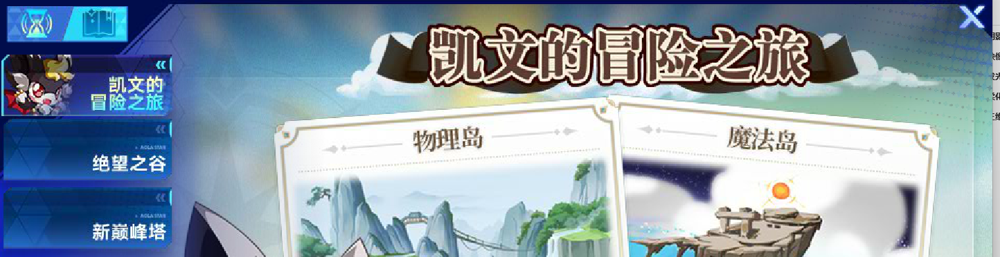
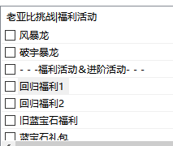

放弃助人情结，都玩奥拉星了，就惯着吧。求你们看看吧
放弃助人情结，都玩奥拉星了，就惯着吧。求你们看看吧
第一作者：薇薇安
第二作者：風来人
欢迎各位奥批多多转发本文件！帮助他人，从我做起。
注：那些动手翻一下目录 (Ctrl + F可快速跳转) 的都不愿意的，建议退出，啥都不懂的还不想翻一下，就搁哪等着被喂食吧。说字多不想翻的我只能尊重了。
放弃助人情结，都玩奥拉星了，就惯着吧。求你们看看吧
目录
几条原则：
1．氪金或使用王钻、各种自选之前多问问老玩家.
2．亚比用到了再练，没必要未雨绸缪。
本书旨在帮助新入坑/回坑玩家快速熟悉游戏内容，同时也对游戏多方面内容做出整理与统计，希望作为实用的工具与资料，帮助各位更好地享受游戏。
首先在b站/群聊下载my登录器。注意是免费的，不要被坑钱了。my登录器可以说是奥拉星的活爹，用和不用完全是两个体验。斗胆进行一个基本功能介绍。

想玩到原汁原味的、完全体的奥拉星还得是flash，就是玩一会就会卡。H5的好处是非常流畅，但是只有一部分签到活动和挑战，部分活动可能没有。

辅助功能非常强大。包括但不限于自动领奖、每周小游戏、小游戏亚比等。拓展里面可以调出许多旧活动来白嫖奖励、获得老亚比等，具体内容可以自己探索。战斗设置可开关出招动画、伤害显示等，还能修复PVE战斗卡顿。
可惜mac是没有拓展功能的。

开发者工具同样是我们的好伙伴，此处只介绍基本用法：发包。我们在奥拉区高技术力up彼方远方或群友那里得到神秘小代复制进去然后点执行脚本即可。
其他模块不一一细讲，大家可以自己探索。

高帧率可以让游戏流畅不少，但是不要和加速一起开，开一个就够了。有时候出现莫名其妙的关于时间的问题，例如在线时间没到就防沉迷了、时间没到竞技场就关了等，可能就是加速导致的，刷新一下就好。画质、窗口大小也在这调。
然后是游戏内功能的介绍。作为页游，奥拉星的主界面可谓是眼花缭乱，下面进行一个拆分讲解。
(1) 白嫖怪环节


白送的东西，可能送亚比、王专、资源什么的，挨个点就行了。

召唤阵，大部分亚比都能打，推荐兑换群星，后期可以开图鉴用。每个月的神券挑战记得打，非常简单，可以白嫖当月亚比自选，选个难打的或者复制人很香。
(2) 最新活动

关注主题活动，经常能白嫖一些资源。氪金或者星币攒多了也可以看看特惠购买，可能有魂卡夺宝、魂团购、钻装连环购或者特惠卖场之类的。
(3) 亚比养成

日常获得资源的，上面一行非常重要，下面一行基本都是白嫖。
 必做，可以拿各类资源，还可以拿秘宝结晶、流星碎片、白嫖火天使、一部分神兵亚比和王专。My有做日常的脚本。
必做，可以拿各类资源，还可以拿秘宝结晶、流星碎片、白嫖火天使、一部分神兵亚比和王专。My有做日常的脚本。
(4) pve环节

 新手必打，一个个打就完事了。
新手必打，一个个打就完事了。
快捷入口，大部分挑战都在里面。

异界幻想：主要获得洗练魂器的花草，也有魂卡资源。数值低，大部分关都可以用星诺打。打反弹5w伤害的关召唤师带巨化，反弹20%伤害用缔界星诺玛。
域界降临：每周必打。可以获得群星本体及其王专，还有限定魂器和萌皮，还能光启亚比大集结。当周域界有额外奖励。小关很简单，随便打；实在不行还能达人币通过。大关一般是当月主推阵容+一个老阵容，萌新随缘就好。注意大关上下两关会锁亚比，一关用了并且通关了，另一关就用不了了。
流星十二宫：每月更新。可以获得流星碎片、一些零碎奖励，还可以获得十二宫限定魂卡，最大价值在于+3普攻/特攻/双攻凑词条。宫主之争可以不打，单挑关非常简单，选克制的即可。记得多搞点免费送培养的亚比。
时光副本：可以获得当月版本之子及其王专，一般不难，但是给的亚比也仅供收藏或娱乐。此外还给一些零碎的资源。累计进度奖励可以白嫖满战轮回队。
幻想史诗：高难挑战，前期不建议碰，能打过说明pve水平已经差不多了。没有很多女皇子牙也不要担心，一般会有平民攻略，但是还是需要养不少亚比，而且需要凹。三个月左右一期，可以获得整套随机王专。随机次数多了可以自选。
挑战档案：几乎收录了所有挑战亚比，从后往前打就行了。

凯文岛：给召唤券。通关就能拿奖励，过关就好。大部分物理岛可以拿唤灵圣天伊横推，魔法岛可以拿唤灵星诺玛横推。后期可能需要较多克制打手甚至秘宝。
绝望之谷：除了寂灭魂塔外都很简单，但是奖励也不多，除非闲得没事干了再考虑。寂灭魂塔难度很高，需要高群星点、绝对克制打手和凹。
新巅峰塔：奖励给的一般，但是很阴间。里面的星辉亚比视为pvp单位，还限制系别。需要很多旧技能组亚比及专属，不建议前期打。
旧巅峰塔：给不少经验和魂砂，难度较低，资源紧缺时可以打。
注：凯文岛、绝望之谷、异界幻想和新巅峰塔的体力每日回复。域界每周更新一次，每个月会移除上上月的，建议每周打。流星十二宫也是每月更新，记得打。
(5) pvp环节
先拜师再打！不然拜不了师血亏！
可能会有不喜欢pvp或觉得太烧money的玩家。然而，pvp能产出一定量星币，还有王者钻石等重要资源。不用担心，有系统阵容和平民无脑阵容都可以打到较高段位，my还有脚本可以挂机。
异界双宠：目前最主流的、最易上手的pvp。后续会有专门章节介绍。
多亚比对战：玩家较少，套路相对固定。依赖秘宝和年费，需要部分老亚比。
狂野乱斗：需要异次元和星辉亚比及专属，运气成分。
异界双宠和多亚比每月结算二者中最高段位，狂野三个月单独结算。
(6) 社交环节
好友：新手/回归可以借用好友的亚比，珍惜机会多多使用。
师徒：可以借用师傅的亚比，且和好友租借分开计算，一定要找可靠的可沟通的师傅拜师。此外师徒商店还可以兑换大量萌新缺少的魂砂等资源。值得注意的是，段位到达黄金就无法拜师了，一定要先拜师！
舰队：策划主推的公会类社交。每周活动可以产出一定量魂之洗礼和少量王者钻石，舰队商店可以兑换部分光烬亚比的王专，非常有用。因此最好加一个等级相对高的，别点一键申请随便加，尤其是启航舰队，部分活动根本没有。
战队：过气了的公会类社交，但可以兑换金装备、王者进阶星能、技能重置卡、星辉亚比和皮肤召唤券等有点用的道具，每周还可以看运气抽点流星碎片。战队天工树和舰队科技是共用的，战队贡献更容易弄，更推荐在战队点boss杀手增加pve伤害。大部分活动有脚本。
兵团：小队类社交，人少活动少，可以兑换一部分资源，包括性格洗练卡、星辉皮肤召唤券等，还是推荐加一个。
开荒前期游戏的玩法主要是pve，通过挑战、小游戏以及召唤阵等活动可以免费获得绝大部分的亚比。光启时代的挑战比较公式化，主要分为6v1和4v2两种。核心都是通过辅助亚比削弱对面属性、上debuff，给我方上buff后换克制的打手输出。一般来说，只要你配置和手法到位，大部分挑战并不难。
挑战时比较重要的几点包括：
属性等级：鼠标移到亚比身上即可查看。确保对方属性等级为-6，我方属性等级为+6。伤害异常的可能原因之一就是属性等级发生了改变。6v1一般使用冰雪女皇或太阳星诺削弱对方属性、使其属性不能提升的同时提升我方属性。对于部分削弱属性能力较强的boss要通过小技能保护我方属性。
能力值：光启头领的能力值最多被降低至上场值的50%。一般6v1使用姜子牙或圣灵星诺削弱对方能力值的同时提升我方能力值，4v2则一般使用女帝、孟婆和火天使、王牌战队进行弱化，降低boss属性。
暴击：光启头领自带50%暴击抵抗，理解为亚比的暴击率减半即可。因此冰雪女皇/太阳星诺提供的100%暴击并非必定暴击，有时需魂卡进一步提高，或多次尝试。此外辅助阿赖、夜樱、猴子、岁岁祈也可提供暴击率，常用于4v2。
伤害加成/威力祝福/爆伤提升：字面意思，都会增加伤害。能提供这类加成的手段较多。除了辅助自爆外，还有亚比自带、局外因素等。需要注意的是，同类加成间会稀释，因此尽量确保你的亚比有不同区间的buff。
克制倍率：因为克制倍率来源很少，基本不会被稀释，因此对伤害的提升很大，几乎必上。目前主要有群星之羽亚比、站场辅助和星环师提供克制倍率。此外缔界师也可以提供，一部分打手也会自带克制倍率。
此外，一定要注意各类buff的回合数，光启的buff大部分都只持续10回合左右，当你的buff都消失后伤害会急剧降低，然后被boss打死。
另外一个值得注意的点是，新技能组打手一般都有许多场上亚比数=2的额外加成，因此当4v2除了打手外还需要一个亚比站场，一般是体系队专属辅助、通用辅助、群星亚比等，一旦站场亚比阵亡伤害会锐减。也可以反过来利用阿比斯拉出背包中亚比，把6v1转化为4v2，从而提供高额伤害加成。
*阿比斯拉人方法：刚需王专，否则回合数过少。将希望拉的亚比放在背包最后一格，阿比斯上场额外回合点击系统后切换为打手即可。拉出来的亚比继承不到自爆的buff，因此千万不要把打手拉出来了。
常规阵容推荐：
6v1（高配）：女皇+子牙/火天/孟婆+群星+阿比斯+打手+站场亚比
6v1（中配）：女皇+子牙+龙王+黑翼+群星+打手（黑翼可换其他增伤亚比）
6v1（低配）：太阳星诺+圣灵星诺+木星诺+龙星诺+群星+打手
注：大部分挑战中配阵容甚至低配阵容即可，低配阵容的伤害大约为中配阵容的75%。高配阵容不刚需，但是可以一定程度降低配置。
4v2：阵容相对较多，将在体系队一章中详细介绍。需要确保有：降低属性、提升属性、弱化、克制倍率。推荐两套前期比较万金油的阵容：
星诺队：太阳星诺+火星诺/上古星诺/小星诺+圣灵星诺+星诺玛/月亮星诺
唤灵使队：女皇+火天使+（帝卡/星环女皇+唤灵圣天伊）
女皇+火天使+（帝卡/星环女娲+唤灵圣天伊）
注：星诺队适用于大部分低数值挑战，而圣天伊/盘古由于极高的数值，可以通关绝大部分挑战，哪怕不克制也能打。星环师前期可以先带异界。
此外，还要注意局外加成：
召唤师技能：双刃伤害+50% 单独增伤乘区
亚比印记：克制伤害+80%
光启图鉴：光启亚比伤害+9%
战队天工树：BOSS杀手伤害+5%；天选之子爆伤+10%
训练师：最终伤害+6%
神兵亚比：绑定后提供能力值、伤害加成/爆伤加成。
*特殊祝福：暑假、寒假等重要节点，一般包括boss血量减少等。
(1) 可以去h5弄一套满战的星诺队，入口在亚比挑战-挑战档案-星诺玛挑战。如果后续策划删了就在曙光之旅弄。新手任务获得星诺玛王专，养好了就可以去b站找脚本自动打曙光之旅了，获取很多资源。
(2) 获取通用辅助。小氪一笔或者攒星币拿下女皇、子牙。通过达人王、新手奖励、各种活动给的召唤券兑换群星亚比（系统选择群星之羽）；达人王做任务获得火天使及王专。签到获得女帝、阿赖王专。此外也可以看看最近几周的活动有没有自选之类的。召唤师和印记这种硬件一定要升级。还有训练师。
(3) 借一只星辉阿赖（怒识即可，装备等无要求）拿下唤灵圣天伊小关；借一只秘宝伊撒尔拿下唤灵圣天伊大关（需要一定群星点）。养完唤灵圣天伊打唤灵盘古，有bug一直没修，全选60级即可，这两只亚比非常强力，不克制也能打。
(4) 时光副本搞一套轮回队，打个黑梅，再按照必备阵容一个个搞。
(5) 按照免费亚比篇搞到所有白嫖专属的亚比。
(6) 按照文档附录1：能借亚比的挑战拿下能借亚比的boss。
(7) 按照图鉴搜索光启神兵亚比，除了圣天伊、洛羲、夜兰和情花毒都好打。
(8) 按照图鉴搜索光烬亚比，一个一个打。
(9) 按照免费资源篇收集必要资源，沉淀。
(10) 挑战档案从后往前一个一个试着去打。
(11) 体系队和光烬养的差不多了再去打幻想史诗等较难的挑战。
亚比伤害不够很可能是没有养好。魂卡魂器都很重要，晶钥也有一定提升。
严格意义上，本节并不算是亚比养成的内容。但因其重要性和与养成的关联放在本章。新技能组与旧技能组亚比对比如下：


简单来讲，光启第一年的亚比都是旧技能组，新技能组是为了4v2服务的。区分新技能组和旧技能组非常容易，旧技能组亚比一般有1个pp技能、1个1光技能和1个2光技能；新技能组可以技能配置来更换技能（该功能一般是pvp使用的）。此外，只有新技能组的亚比可以装备魂器和晶钥。
2024年年初及之后出的亚比就没有旧技能组了。策划承诺会给所有旧技能组的亚比开新技能组，但是目前只有一部分旧技能组亚比可以切换到新技能组。

例如辅助黑翼，右上角的按钮可以在旧技能组和新技能组间切换。值得注意的是，对于这类拥有新技能组的老亚比，王者专属同时有旧技能组和新技能组效果，异界装备只对新技能组生效。本节同时揭示了两种黑翼不能上场自爆这个问题的答案：使用了新技能组或者穿戴的是异界装备，没有上场满光。


黑翼是特例，其他pve使用的可切换技能组的亚比均使用新技能组即可，
因为魂器与晶钥的加成。旧技能组亚比需要达到一定战力来使技能满级。
务必拉满，没什么好说的。
最好拉满，资源紧缺也要到唯我独尊后增强对应的普攻/特攻。
增加的属性是对应的普攻/特攻即可，不一定要满战。
pve亚比基本上均刚需专属装备，除年费、秘宝外均在装备商店购买。旧技能组亚比只有王者装备（简称王专）；目前pve使用的大部分新技能组亚比有王者装备和异界装备。异界是王专的下位替代，和王专提供的效果相同，但数值更低，此外可能部分效果会变成75%触发。对比示例（上方为王专，下方为异界）


理想情况下当然希望所有亚比都带王专。然而王专每月免费获取有限。现给出王专的优先级如下。
T0:关键常用通用辅例：女皇，子牙，女帝，阿赖，火天使，孟婆等必须上王者。女皇和子牙没异界。女帝、阿赖的王专新手送，火天使的王专达人王获得，孟婆的可以连环购获得。弱化类亚比如果只有异界，对伤害影响很大
T1:常用体系队主C例：唤灵使，英雄奇灵王，神羲和等。体系队亚比用的很多，非常建议优先培养。唤灵使的数值很高，可以异界先凑合，但终归不如王专爽；面对最近膨胀的数值，比较老的体系会很吃力，如果要用必须上王专。
注：阿蒙王、英雄无冕的王专免费送！不要没看清就去换，会血亏王钻
T2:光烬常用打手例: 梅比乌斯，岁岁祈等。梅比和岁岁为代表的比较老的常用光烬基本上必须王专，比较新的打手如密潘、艾琳、昭君可以用异界先顶着。
注：常用光烬中，岁岁祈和芙蕾雅的王专舰队免费兑换！1314的新手就给！
T3：体系队其他辅助、至高荣耀例：星环师，王牌，三代猴等。星环师如果没王专会少点一颗星，王牌猴子相对特化，可以先用火天替代。至高荣耀推荐先养完常用体系再养，在各种白嫖活动中慢慢补，可代替一部分体系队。
T4: 版本之子，光启神兵，群星之羽例：神兵洛羲，纯钧等。随缘补，不建议专门换。版本之子除了幻想史诗基本上也用不上了。部分神兵亚比的可以活动免费获得或达人王兑换，群星的王专可以域界慢慢兑换。
T5: 体系队站场辅助例：洛羲（羲和队），狂龙（不朽龙队）。就业几乎已经被群星代替了。前期群星点非常少时候给套异界凑合用，后面养都不用养。
特殊：年费渡、阿比斯、宇宙秘宝没异界，必须王者专属，别带咸鱼套了
注：百星套、樱花套等还能不能用？目前pve大部分情况用不上，体力符可以给部分需要高体力且不需要王专的亚比，如塔王、异次元晴明。
注：异次元装备、星辉装备等就算可以装给光启亚比也是没效果的。
注：异界/王专混搭是触发不了效果的，不能两件王专两件异界。

魂卡特效
魂卡词条
词条成长值
生效魂座
魂卡特效：一张魂卡的主要效果，圆就是这个魂卡的效果名，圆全名圆月，一般一张魂卡只用一个字缩写替代，下面的暴击率加成就是这个圆的具体特效。
魂卡词条：词条分为普攻，特攻等，普攻是橙色，特攻是蓝色，双攻是白色
词条成长值：词条附带的数字，通过后面的+x来进行加法计算
生效魂座：本魂卡词条和词条成长值达到需要的魂座阶级才会进行生效计算，意思是五级魂座上的魂卡从上往下前五条生效，三级魂座上的魂卡从上往下前三条生效，一级魂座只有第一条生效。魂座初始均为一级，需要魂砂升级。

当前成长值
当前词条
当前词条：1级1/202级5/203级10/204级15/205级20/20
增益只与等级有关，14/20也只算3级，同理20、21、22效果相同
当前成长值：通过魂卡的生效的魂卡成长值相加得到
免费卡通过魂卡祈愿获得。回归玩家以及萌新魂卡祈愿可按照此心愿单进行设置：

星诺玛和小星诺分别为吟卡、岁卡，是输出主卡，放在五级魂座，效果为普/特攻能力值+10；威力+[20+目标体力上限/5000]*1%，上限值=60%
赫尔墨斯、厄瑞波斯卡分别为凑特攻/普攻、双攻的卡，放在三级魂座，分别可换为昭烈帝/成吉思汗，效果相同。
最右侧为识卡，效果为：携带此魂卡的亚比阵亡后我方获得50%的全技能伤害加成，持续8回合，同类效果只生效一次（给最后一位自爆的亚比携带）。多张识卡可刷新回合数。资源紧缺时，自爆亚比只需升级五阶魂座携带识卡
魂卡搭配：
不要用系统推荐魂卡，或满战送的魂卡！不好用！！！！
免费卡的主CPVE卡搭配一般为岁/吟卡20普/特攻11双攻，如图1：
左图为特攻岁卡：20特攻11双攻；右图为普攻吟卡：20普攻11双攻
注：圆卡伤害略低于岁/吟卡，也要20攻11攻搭配，其他卡就不建议了。词条为圆的卡有多种，请认准词条带双攻的逍遥/梵天，带爆伤的还是当副卡吧。
三星位置放特攻/普攻+双攻+特攻/普攻的卡；一星位置上放特攻/普攻卡
氪金卡的伤害明显高于免费卡，如果有余力建议购入普攻特攻各两张。不建议直接购买，可以通过魂卡夺宝/魂卡团购等活动获得。


pve目前最泛用的特攻氪金卡是尘卡（闲看庭前花开花落-渡）
花卡（春意与繁花-至臻盖亚）和乐卡（乐了个乐）数值更高，泛用性不如尘卡强，大部分情况下是尘卡的下位替代，常用于只需叠特攻数值的挂件亚比（如渡的季费、天使盟约的kk和莱特若曦等），不建议专门购买。魂卡搭配如下：
图1为特攻尘卡：20特攻15双攻（三星位置特攻+双攻+特攻，一星位置双攻；或三星位置双攻+特攻+双攻，一星位置特攻） 极限伤害更高
图2为特攻尘卡：20特攻10暴击5双攻（三星位置特攻+暴击+特攻，一星位置暴击；或三星位置暴击+特攻+暴击，一星位置特攻） 相对更稳定
图3为特攻花卡：20爆伤10特攻2暴击（三星位置特攻+爆伤+特攻，一星位置爆伤；或三星位置爆伤+特攻+爆伤，一星位置特攻）
花卡词条不带特攻，难以凑20特攻。如果有流星十二宫中+3特攻的卡，可以凑15特攻16爆伤5暴击.
图4为特攻乐卡：20特攻7爆伤2攻击（三星位置特攻+双攻+特攻，一星位置特攻）


PVE目前最泛用的普攻氪金卡为应卡（山海志-至臻阿卜苏）
诺卡（一生之诺）大部分情况是应卡的下位替代，伤害高于免费卡，但不推荐专门购买。
魂卡搭配如下（具体搭配同特攻，不再给出）：
图1为普攻应卡：20普攻15攻击极限伤害更高
图2为普攻应卡：20普攻15暴击5攻击相对更稳定
图3为普攻诺卡：20普攻13爆伤（可20普攻15爆伤，需要十二宫卡）
图4为普攻诺卡：20普攻7爆伤6暴击


站场辅助使用的免费魂卡包括铁/佑/愈/祝，可增强生存能力，一般搭配boss对应的防御，优先凑20体力（凑15也没关系），建议输出卡充足后祈愿。适量抽取词条为体力+任意属性+体力的卡凑词条。搭配较随意，示例如下：
图1为特防铁卡，可提升队友特防（祈愿明王/曹操卡；普防祈愿巫山神女）
图2为特攻佑卡，每回合末提高属性（祈愿沫夏卡；普攻祈愿虚空龙灵）
图3为普防愈卡。每回合回复体力（祈愿未知之影，上位氪金卡为龙母）
图4为特攻祝卡。提高体力上限（祈愿穷穷小恶霸；普攻祈愿星空下的誓约）


站场辅助使用的氪金魂卡包括壁卡（妖魅睨红尘-波旬）提高队友的双防和暴击率；秘卡（时界秘藏-至臻奇灵王）提高队友威力。基于泛用性和获得难易，更推荐壁卡。同时这两张卡也可用于pvp，方便起见叠20速度15防御即可。

若希望提高站场能力可选择龙卡（执掌因果万世轮回-帝俊），降低前四回合受到的伤害和源卡（破虚空衍万龙-龙母）回合末回血。副卡搭配boss对应的防御和体力即可，也可以和pvp共用一套，叠20速。


此外环卡可以用于多段攻击特攻亚比。攻击次数大于等于4时伤害高于尘卡（如法芙娜、月亮星诺、卡奥斯等）。搭配为20特攻10爆伤5体力。

个人推荐优先级：尘约等于应（各有两张最佳）大于壁大于环其他。氪金魂卡不是刚需，但在星币购买项目中优先级相对较高。
魂卡是可任意拆卸的，为了方便使用可以保存成预组。配置完成后点击加入预组即可。下次使用时点击魂卡方案-我的预组-使用预组即可。如果你拥有该魂卡，即使装在别的亚比身上，系统也可以自动检测并且使用，可以说非常方便了。
如果懒得配魂卡，也可以使用智能装配功能，搭配pve魂卡问题不大。
领取系统送的魂卡培养之前，一定要把原来装的魂卡拆掉！！！

如果希望某亚比的魂卡不会被系统自动拆下，点击左上角的小锁即可。当然不建议点这个锁，前期魂卡比较少。
只有新技能组亚比可以装备魂器！！！
魂器分为技巧型魂器和强力型魂器，技巧型魂器提供魂器特效，强力型魂器提供数值。品质史诗级比传说级更强，这个看效果也能看出来。

魂器特效
特效条件
魂器词条
特效条件：只有进入战斗前满足特效触发的数值，才会触发魂器特效
魂器词条：通过洗练得来，提高数值。
魂器特效：达成特效条件后进入游戏获得魂器特效
注：魂之洗礼不要乱用，不要去洗那些没有用处的史诗级魂器，更不要去给魂器洗暴击爆伤穿透。PVE请认准普攻/特攻。
在PVE中，我们一般给魂器洗普攻或者特攻词条。
一般两条特攻鱼+两条普攻鱼+两本特攻书+两朵普攻花即可满足大部分情况。新手任务就送的差不多了，慢慢洗吧。前期千万不要洗斧头、带斧头！
技巧型魂器推荐：永不服输的咸鱼（首选），适应性进攻模块（首选），域界兑换的流光斩（连击用）、其后的抉择和猫咪警戒玩偶（反击用），都是给主C用的。如图所示：


强力型魂器推荐：生命之泉涌（普攻），圣骑士异闻录（特攻），如图所示：


其他pve可能用到的技巧型魂器：
风化的锁链：可使孟婆/炽天使自爆回合不死，从而使群星阵容启动更快，特殊关卡配合愈卡可实现第二次自爆，延长buff回合。总之非常推荐。
盗火者遗契(域界兑换)：阵亡时给下个亚比60%威力提升3回合
魔女的永恒花园：为队友提供24%伤害加成
贤者的反击：替换上场受击时清除对方增益，可针对龙母/贝利亚等。
照世之灯：造成固定伤害提高30%，目前仅供固伤渡使用。
新生的回响、树果：回血，提高辅助的生存能力


免死金牌：自身上场时75%免疫一次非克制伤害，可保护辅助
同行者的共鸣：队友使用与自身属性相同的技能时提升30%伤害


魂器继承系统的使用条件：
1. 只能是传说级魂器的词条传给史诗级魂器，不可以史诗级魂器之间互传，传说级魂器也是。
2. 只能是技巧型魂器传给技巧型魂器，强力型魂器传给强力型魂器。
3. 在传说级魂器传给史诗级魂器的时候，史诗级魂器必须未洗练
注：洗练魂器千万千万不要上头，新手不要去追求八特攻/八普攻完美魂器，只需要技巧性+强力型加起来有5-6个需要的词条即可，上头之后一无所有。
注：释放光烬也计算一次棺材已使用技能数
注：释放光烬也会受到斧头和暗黑咒语的只能使用一个技能限制，一般pve不要给输出带这种东西，除非你的输出只靠大招打输出。斧头的优先级判定非常高，英雄技、系统技等都会判定成一个技能，很不建议使用。

魂器也有预组功能，鼠标移到右上角的当前配置处即可使用。
只有新技能组亚比可以装备晶钥！！！
晶钥可以在进入战斗后提供数值加成（不显示在面板上）和伤害加成。
每个亚比可以装备两个晶钥，部分晶钥可重复。晶钥一旦装备即与该亚比绑定，不可再装备给其他亚比。两只相同亚比的晶钥是可以共用的。此外亚比及其璀璨版、星环师加冕前后（8.8更新）也可以共用。

2024年12月16日前出的亚比自带推荐晶钥。之后出的亚比则需要手动装备。然而和魂卡推荐一样，系统推荐的都不是最好的。
输出的最佳晶钥搭配：强袭之钥（普攻+10%）/灵能之钥（特攻+10%）+共鸣之钥（与自身系别相同的技能最终伤害增加12%）
然而晶钥的获取同样有限，并不是所有亚比都需要极限伤害的搭配。一般随便给两个带6%对应攻击的，对于数值较高的打手甚至可以不带晶钥。一般建议给非常常用的打手，或者实在缺伤害，再考虑装备最好的晶钥。
新技能组辅助，如女帝、孟婆、火天使、群星等可以装备力量之钥（全背包亚比普攻+3%）/智慧之钥（全背包亚比特攻+3%），效果多多益善，作为锦上添花。这种晶钥没必要浪费自选晶钥来选，随机晶钥随缘开出来即可。
本章介绍亚比的技能及作用。体系队辅助见第四章。
光启面对非光启拥有99%真抗，获得boss化能力，不等于boss。非光启亚比pvp生效的斩杀/重置对光启亚比不生效；星辉面对非星辉非光启，拥有95%真抗，视为boss。非星辉非光启亚比pvp生效的斩杀/重置对星辉亚比不生效
技能先发度：光启爆发技>超星辉必杀>异次元必杀>传奇必杀>超奥义>光启小技能>星辉小技能>异次元小技能>传奇小技能>究极变身 注意光启不同系统先发度不同。例如光烬的先发度等于光启小技能。
注意部分技能会标注先发度等于光启爆发技，如至高祝福。
超快先发度+1>超快>普通
(1) 必杀优先级
光启爆发技先发度+1>光启爆发技>超星辉必杀超快速度>超星辉必杀>异次元必杀超快速度>异次元必杀>传奇必杀
(2) 小技能优先级
光启先发光能技能>光启光能技能>光启先发pp技能>光启pp技能>星辉三星先发>星辉三星>星辉技能>异次元先发技能>异次元普通>后发
(3)切亚比先发度
光启爆发>星辉爆发>切亚比>嗑药>小技能
光启/星辉/异次元/传奇/奥义正常大招优先级跨时代大于普通小技能 比如：星辉大招/异次元大招/超奥义快于光启小技能。
真抗：减少一切伤害。红色直伤（技能直接伤害），紫色固伤（扣除、吸取、百分比），因此可以减少黄色总伤害。亚比中只有[色欲之罪]凯撒可以削弱。
假抗：只能减少红色直伤。曰削弱的抗性是假抗。
注：技能单段红色直伤伤害上限999999（四舍五入为100 w）
注：真抗的增减可以影响伤害上限。
注：系统关卡给的#抗性提升#一般都是假抗；受到伤害降低是真抗。
技能攻击多次（简称多段）和连击的是不一样的
多段：一个技能一次能打出≥2个红色直伤的就是多段技能。
技能描述为攻击目标x次/攻击次数+x。
连击：释放一个技能后，自动再次释放技能的就是连击，技能描述为连击。
主要区别在于多段只行动了一次；而连击行动多次，因此攻击目标阵亡后，如果还有剩余的连击次数会追击其他目标/替换目标；多段不会。
攻击次数的buff和连击的buff是不一样的，因此有必要区分这两个概念。
例：妖王冽的万妖百斩攻击次数+[1, 99] 多段
光烬岁岁祈的连击一次该技能 连击
卡奥斯体系队 攻击次数＞5 多段
圣天伊体系队 连击技能 连击
（均为王者专属效果，数值均为上限数值，带★的为常用辅助）
辅助f4：指女皇、子牙、龙王、黑翼，6v1通用辅助，其中女皇和子牙最重要，龙王其次，三者均可以首充获得，也可以星币获得。黑翼重要性相对低。
1. 永霜寒玉-冰雪女皇★：自爆，削属、锁属、提属、暴击爆伤提升、保护属性
上场获得5光能，扣除对方全场2光能；大招牺牲自己对单体无视保护削弱全属性6级、属性等级无法提升15回合、无视保护削弱15%数值，我方属性等级提升至最高，暴击率+100%，爆伤+200%，可继承，15回合。下个出场亚比受到直接伤害-99%，2回合。1光技能保护属性等级及能力值，可继承，15回合。
注：很通用，6v1和4v2都必备，遇到削属性能力强的开护属。不需要璀璨版！
2. 代天封神-姜子牙★：自爆，能力值削弱、能力值提升、锁血
上场满光能，免疫所有技能1回合，赋予敌方全场能力值降低当前值的50%，20回合；大招牺牲自己，赋予单体无法回复体力20回合；首次离场（阵亡/切换均可）我方全属性能力提升上场值的70%，单项上限15000，体力及上限提升上场值的50%，体力上限最多50000，可继承，20回合。1光技能前两次使用扣除敌方2光能。
注：常用于6v1，4v2有时候也可以用来站场。由于大部分光启boss回血较少，不一定要自爆。注意数值削弱当前值，部分boss可能有星梦，上场后提升能力值，只靠子牙无法削弱至最低，可以携带其他弱化亚比如女帝、火天使等。
3. 四海滔天-敖兴★：自爆，减伤、削属、概率化解、光能返还
上场获得6光能且抗性提升80% 1回合；大招牺牲自己，赋予单体提升的属性等级回合末翻倍降低12回合，我方亚比受到直接伤害-60%，60%免疫攻击技能，回合末25%返还本回合消耗的光能，伤害提升150%，可继承，12回合。
注：一般只在6v1使用，可以大大增加生存能力，返还光能也非常重要。
4. 绝影蚀月-黑翼王★：自爆，增伤、回血
上场满光能且提升自身体力及上限75%，全属性60%；大招牺牲自己，赋予我方伤害提升200%，每回合首次使用技能回复15000体力，可继承，20回合。
6v1用，大部分打手每回合自带体力回复均为15000，面对伤害较高boss时可以变提高生存能力。伤害加成较少，可以换为别的辅助。
星诺f4：太阳、圣灵、龙和木四只星诺，功能相当于女皇、子牙、龙王和黑翼，但如果打手不是星诺家族亚比时，提供的增益只有75%效果，当打手数值较高或boss数值较低时也是完全够用。需要四只一起使用，否则加成会少。
5. 日曜奇迹-太阳星诺★：自爆，削属、锁属、提属、暴击爆伤提升、保护属性
上场获得5光能；大招牺牲自己对单体无视保护削弱全属性6级、属性等级无法提升12/8回合，我方属性等级+6/4，暴击率+100%/75%，爆伤+200%/150%，可继承，15回合。下个出场亚比受到直接伤害-99%/75%，2回合。小技能100%/75%保护属性等级及能力值，可继承，15回合。
注：由于太阳星诺可以带魂器，可以带锁链先用小技能保护属性。
7. 星光奇迹-圣灵星诺★：自爆，能力值削弱、能力值提升、锁血
上场满光能，赋予敌方全场能力值降低当前值的50%，20回合；大招牺牲自己，赋予单体无法回复体力20回合；首次离场（阵亡/切换均可）我方全属性能力提升上场值的70%/52.5%，单项上限15000/11250，体力及上限提升上场值的50%/37.5%，体力上限最多50000/37500，可继承，20回合。
8. 超界奇迹-龙星诺★：自爆，减伤、概率化解、光能返还
上场获得5光能且抗性提升80% 1回合；大招牺牲自己，我方亚比受到直接伤害-60%/45%，60%/30%免疫攻击技能，回合末25%/18.75%返还本回合消耗的光能，伤害提升150%/112.5%，可继承，12回合。
9. 天地与我竞争自由-逍遥：自爆、化解、能力禁锢、额外光能
使用新技能组。上场获得4光能；大招牺牲自己，赋予敌方能力值无法提升5/7回合；离场（阵亡/切换均可）赋予下个出场亚比150%化解（2+敌方数/2，向下取整）次攻击技能3回合，冷却4回合，每回合未受伤害额外获得1光5回合。
注：boss如果有精准buff，可能会无视我方化解，而逍遥提供的150%化解率一般不会被无视。用的较少，面对伤害很高的特殊亚比或配合固伤潘多拉使用。
10. 幻海奇迹-水星诺：自爆、化解、能力禁锢、额外光能
上场获得4光能；大招牺牲自己，赋予敌方能力值无法提升5/7回合；退场后（阵亡/切换均可）赋予下个出场亚比100%/75%化解（2+敌方数/2，向下取整）次攻击技能5回合，每回合未受伤害100%/60%额外获得1光5回合。
注：面对伤害很高的特殊亚比可以替换掉木星诺/龙星诺。
11. 群星之羽★：非自爆，相同系别我方亚比克制倍率、特攻/普攻数值加成
使用时点击群星祝福后切换即可，详见3.2。
注：6v1几乎必备，4v2也非好用，缺点是需要积累。
12. 版本之子：自爆，对指定系别boss伤害加成
版本之子没有专门的系统，特征是大招自爆获得XX·攻，提供对三个指定系别的boss增伤（绝大部分初始150%，异界225%，王专300%），可继承，10回合
根据boss属性选择版本之子速查如下：
(1) 【缘分一线牵-小狐仙】永恒、生命、不朽
(2) 【乐园守护者-星光角斗士】神兵、格斗、飞行
(3) 【冰封之心-伊莎女王】仙灵、黯星、虚境
(4) 【孤注一掷-骰子大王】数码、超土、超电
(5) 【午夜大冒险-黑夜童心】神兵、格斗、飞行
(6) 【寒冰之拳-冰拳艾司】上古、圣灵、超王王专增伤350%，异界300%
(7) 【大妖血脉-妖王冽】神秘、时空、超神由于技能段数多，偶尔有用。
(8) 【倾世之寒-始祖冰龙】超龙、超光、超暗可免费获得王专
(9) 【沙漠之心-阿努比斯】上古、超王、圣灵可免费获得王专
(10) 【卷帘大将-沙悟净】湮灭、乾坤、完全可免费获得王专
(11) 【天蓬元帅-猪八戒】超水、超火、超木可免费获得王专
获得方式：版本福利→签到礼→自选版本之子
推荐优先获得可白嫖专属的。其次骰子大王是神兵，契约亚比释放必杀即可增伤，可以给女皇绑定。因为自爆版本之子亚比已包含所有系别，此后出的版本之子亚比都是月副本（入口：挑战试炼→时光副本）可以白嫖的超维亚比。
注：异界和王专均可以上场自爆，一般在黑翼前自爆，否则黑翼的回血会让版本之子免死。版本之子由于伤害加成会被稀释，效果远远不如群星，一般挑战使用较少，实在缺伤害或者幻想史诗等封亚比的6v1才使用。
13.凝尘造界之星神-星尘：自爆，锁属、额外光能、威力提升
上场获得6光能；大招牺牲自己，下个出场的亚比每回合额外获得4光5回合，技能威力提升消耗光能数*50%，最高200%，10回合。
pve一般配合主要依靠大招输出的亚比使用，也可以配合光烬亚比使用。
14.赤月刀姬-曰：非自爆，抗性削减、扣光
每次攻击为目标添加1层赤月印记20回合，每层减少10%抗性，上限5层，最多削减至0%，抗性为0%时受伤增加100%。2光赋予目标光能流逝（每回合末扣除1光能，持续X回合，X为赤月印记层数）。离场时对敌方全场自动使用一次2光技能。快速叠印记可以使用秘术飞剑（攻击体力比例比自身高的亚比可连击一次），大招必定攻击两次。
注：很少用，只在boss自带伤害抗性时有用，可配合缔结师奥丁，但很少用。
15. 甜蜜信使-愚者：自爆，单段伤害提升
上场获得5光能；大招牺牲自己，使敌方每回合受到的最高单段伤害附带60%固伤，上限60w，8回合。
注：早期辅助，很少用，少有的就业是配合一代夜樱/潘多拉使用。
16. 尘世繁华-阿赖耶识：非自爆，回春、光能定格、威力提升
上场满光能；大招使威力提升30%*消耗光能数，上限180%，可继承，10回合；离场赋予下个亚比1次回春（受到致命伤害时回复25%最大体力，上限20000）和双防提升上场值20%各15回合，锁定光能3回合。2光逼退自身。
注：早期辅助，想配合大招型打手还需要提前上场攒光，基本已被星尘替代。
17. 时音弥漫·洛羲：自爆，伤害提升（星辉亚比）
上场5星，大招牺牲自己，使我方亚比每回合伤害+20%，上限200%，可继承，无限回合
注：早期辅助，由于结算问题和需要发育，是黑翼王的下位替代。
18. 梦幻绮丽之夜-羲和：非自爆，吸血，爆伤（星辉亚比）
上场给敌方添加梦幻印记，攻击带印记目标吸血+100%，爆伤+50%，无限回合
注：早期辅助，适合高伤害目标保证续航，也可以配合渡使用。
以下辅助效果与我方在场亚比数有关，=2时最大（红色数字），=1时蓝色数字
19. 寰宇皆臣-女帝★：自爆，削属弱化、特攻亚比伤害提升
上场满光能；大招牺牲自己，削弱敌方全场6级全属性，弱化（全属性能力值降低50%/25%）10回合；我方获得特攻技能伤害提升200%/100%，可继承，10回合；下个亚比立刻获得4光能。
注：4v2特攻亚比通用辅助，而且免费王专。上场会扣除自己20%体力，因此无法触发锁链魂器。黑翼王祝福/源卡（龙母卡）可以使其自爆后不死。
20. 幽泉使者-孟婆★：自爆，削属、弱化、特攻亚比爆伤提升
上场满光能，扣除对位3光能；大招牺牲自己，削弱敌方全场6级全属性，弱化（全属性能力值降低50%/25%）10回合；我方获得特攻技能爆伤提升200%/100%，可继承，10回合；下个亚比立刻获得4光能。
注：4v2特攻亚比通用辅助。孟婆和女帝哪个伤害高，取决于你的输出有没有自带爆伤。如果输出自带很多爆伤，就用女帝，反之孟婆。
双弱化打法：可以通过魂器携带锁链实现自爆不死。由于锁链锁血1回合，配合愈卡回合末回血，可以第二回合替换下场，等到弱化和爆伤加成结束后替换站场辅助上场，通过凹对方不攻击孟婆，实现再次自爆，相当于延长了buff的回合数，需要运气但可以有效增加伤害，配置实在不够时可以考虑这个打法。
21. 圣火炽天使-塞勒芙★：自爆，弱化、普攻亚比爆伤提升
上场满光能；大招牺牲自己，削弱敌方全场6级全属性，弱化（全属性能力值降低50%/25%）10回合；我方获得普攻技能爆伤提升200%/100%，可继承，10回合；下个亚比立刻获得4光能。
注：4v2普攻亚比通用辅助，达人王免费获得本体及王专。召唤阵和神宠秘境也能获得本体。
22. 无名无始之境-阿赖耶识★：非自爆，提属、特攻亚比暴击提升、威力提升
大招释放后立即返回背包，赋予队友受到攻击使用专属技能反击一次，特攻技能暴击率提升100%/50%，威力提升150%/75%，可继承，10回合；首次离场赋予我方全体6级全属性等级（仅包括目前在场亚比和替换亚比，不可继承）。
注：4v2特攻亚比通用辅助，而且免费王专。同样是提升暴击率和属性等级，但一般效果并不如冰雪女皇，除非是梵天队这样的双特攻c队伍，但梵天队也有上位替代。还有一个优势是可以提升站场辅助等级，增加生存能力。此外，可以在6v1中被阿比斯拉出来作为站场亚比，大招可以套反击增加输出。
23. 月影映夜澜-夜樱★：非自爆，提属、普攻亚比暴击提升、威力提升
大招释放后立即返回背包，驱散对方2个最新获得且回合数＜10的增益效果，赋予队友普攻技能暴击率提升100%/50%，威力提升150%/75%，可继承，10回合；首次离场赋予我方全体6级全属性等级（仅包括目前在场亚比和替换亚比，不可继承）。小技能可以赋予目标2次受伤提高40%，3回合。
注：4v2普攻亚比通用辅助，一般效果并不如冰雪女皇，用的也相对较少，一般用于站场辅助非常容易被直接伤害打死的普攻队伍或普攻双c队伍。
群星之羽亚比简称群星，是非常重要的辅助，6v1和4v2都很常用。
 带有此系统图标的亚比即为群星之羽亚比，有时也称为流星之子。
带有此系统图标的亚比即为群星之羽亚比，有时也称为流星之子。
群星作用：对抗群星系别克制的敌人时，使用群星辅助同系别打手可以获得强大的克制倍率和数值加成，增伤效果非常明显。
群星点数：点击系统中的获得星光，每个群星亚比本体和装备王者专属各算一个星光数（异界不能）。每个星光数需要消耗100系统强化石获取。
群星点分配：点击图标即可点亮。左半边为普攻区域，右半边为特攻区域。切记克制倍率优先级最高。优先点第一优先的大星，点数不够时优先点小的特攻/普攻点。图中没有体现，群星配置目前已经可以存成预设，建议普攻特攻各一套。
群星使用：群星首发时无等级限制，非首发时需满级，点击群星之羽图标即可获得群星祝福。群星技能释放的先发度取决于本回合操作，一般吃药/切亚比。
群星祝福：10/15回合，获得群星之羽系所有加成，可继承给下一个同系别亚比。
注：群星使用后切换的亚跟群星系别不同，再切换成同系别的亚比，群星祝福仍可以继承（例:圣灵→王→圣灵依然可以继承祝福）且中途不计算回合数。
如果切换到同系别的亚比吃到群星祝福之后，再次切换会使群星祝福消失。
（例:龙吟守→龙王→1314，1314是吃不到群星祝福的）
群星祝福只给自己以及自己切换到的亚比，不是全场，4v2尤其注意。阿比斯拉群星站场前不要忘记开群星祝福；
租借过来的群星点数使用的是自己的群星点数。亚比获得群星祝福后，切换属性（如渡、星龙变身，密潘切换神格）仍可继续使用祝福。
速查表（1-16可以召唤阵换取本体，1-19可以域界兑换本体及王专，21可以当期通行证免费获得本体，30奥币获得王专。此外部分活动也可能增送）：
(1) 【驱灵神捕-琳琅】超神系群星★
(2) 【1号机-图灵】超数码系群星★
(3) 【余烬初王-洛兰】超王系群星★
(4) 【冰龙之子-冰罗皇】超水系群星
(5) 【翼龙之子-凌风】超电系群星★
(6) 【翼龙之子-银风】超飞行系群星
(7) 【影龙之子-帝卡】超光系群星★
(8) 【巨龙之子-明王】超土系群星★
(9) 【龙魂之矢-龙吟守】超龙系群星★
(10) 【冰凝之魂-雪无寒灵-】超圣灵系群星★
(11) 【幽星荒主-天元夜神】超木系群星
(12) 【漫游星境-小熊座】超神秘系群星★
(13) 【涅槃至尊-雀皇紫辰】超暗系群星★
(14) 【巡航迅影-利飞】超火系群星
(15) 【寒霜利刃-烈魄】超神兵系群星
(16) 【重击雷霆-铁拳袋鼠】超格斗系群星
(17) 【时渊裂缝-时间之神】超时空系群星★
(18) 【红莲尽染-御星璃】超上古系群星
(19) 【圣咏御天使-银】超乾坤系群星★
(20) 【黑渊黯翼-混沌巨龙】黯星系群星
(21) 【玉魂巫女-花萤姬】生命系群星
注：异界和王专可以额外提升25%克制倍率。其他效果均为增伤（群星也可以作为数值较低的打手），没有也不影响使用。但是站场需要培养提高肉度。
光启神兵亚比简称神兵，在系统中绑定后，无需出战即可使亚比获得一定加成。
 带有此系统图标的亚比即为光启神兵亚比，且属性为xx系+超神兵系
带有此系统图标的亚比即为光启神兵亚比，且属性为xx系+超神兵系

神兵契约后，可为所有亚比提供神兵之力，只为命定系别亚比提供神兵祝福。
神兵之力：只要契约即可获得神兵对应的能力值加成，随神兵系统等级提高。
注：实际上能力值加成无上限，且不是按照神兵亚比本身的数值提升，是按照绑定亚比数值的百分比提升（系统满级后为[绑定亚比能力值/1500]%）。
这意味着加成跟神兵本体没有关系！神兵不用养成，需要第二系别给异界即可，除非钱多或者能白嫖，最后再考虑给常用神兵王者。
命定系别：一个神兵一般有两个命定系别，分别是神兵亚比本身的系别+一个额外命定系别。异界和王者均可开启第二命定系别。
神兵祝福：只有契约的亚比系别跟神兵的两个命定系别一样时，才可以激活神兵祝福。神兵祝福随着神兵系统等级提高而提高，王者专属才能额外提升。
每个神兵需要200系统强化石才能将系统升满。
神兵祝福无特殊情况都是持续20回合，首次上场生效，替换消失。一旦获得神兵祝福后，切换形态等使属性发生改变，不会使神兵祝福消失。
常见神兵祝福类型（数值均为总伤害提升值）：
1.伤害提升·神兵 提供伤害加成
神兵之力加成是10%的：
初始伤害提升5%；系统满级伤害提升35%；装备王专伤害提升60%。
神兵之力加成是15%的
初始伤害提升30%；系统满级伤害提升60%；装备王专伤害提升100%。
2. 爆伤提升·神兵提供爆伤加成目前只有洛羲和圣天伊
神兵之力加成均为15%
初始爆伤提升10%；系统满级爆伤提升60%；装备王专爆伤提升120%。
注：神兵和绑定亚比需相同技能组〈使用新技能组神兵绑定旧技能组亚比，旧技能组亚比依旧可以吃到祝福，但是使用旧技能组绑定新技能组亚比吃不到加成〉
旧神兵绑旧技能组亚比提升的数值会显示在局外面板上，故pvp，pve都生效；新技能组神兵提升的数值不显示在背包亚比面板上，战斗内显示，只在对抗头领 (pve) 时生效， PVP中神兵只有攻击特效和buff显示，但实际上并没有加成。
6v1推荐数值神兵（特攻/普攻与打手一致，优先吃到神兵之力加成），4v2则能吃到神兵祝福更佳，当然两个都能吃到更好。
一只神兵亚比只能契约一个亚比。点击系统界面的所有神兵，可以快捷更换所有神兵绑定的亚比，同时可以查看所有神兵亚比（包括未获得）的命定属性。
速查表（亚比名-命定系别/第二命定系别-神兵之力-神兵祝福，满级系统）：
(1) 【戮器仁心-帝刃】超上古系/超王系 普攻提升10%伤害提升35%/60%
注：可白嫖满战。有旧技能组和新技能组。
(2) 【神兵护佑-圣盾】超上古系 特防提升 与人作战时获得护盾
注：可白嫖满战。但只有旧技能组，pve用处很少，pvp如今也几乎没用了。
(3) 【幽冥千练-鬼墨无忧】完全系/超火系 特攻提升10%伤害提升35%/60%
注：有旧技能组和新技能组。
(4) 【逐梦追光-布灵灵】超王系 特攻提升 与人作战时提升双防、暴击1级。
注：只有旧技能组，给英雄无冕绑定毫无用处。可以给启元麒麟，多排/狂野。
(5) 【王者加冕-圣天伊】超光系/湮灭系 普攻提升15%爆伤提升60%/120%
注：可白嫖本体和王专。有旧技能组和新技能组。
(6) 【鸣劫制裁-雷霆青龙】超电系/超水系 特攻提升10%伤害提升35%/60%
注：可白嫖满战。有旧技能组和新技能组。
(7) 【荒炎焚天-飓焰朱雀】超火系/超格斗系 普攻提升10%伤害提升35%/60%
注：可白嫖满战。有旧技能组和新技能组。
(8) 【孤注一掷-骰子大王】超数码系/超水系 普攻提升10%
特殊神兵祝福：首次使用光启爆发技时获得，对抗超数码/超土/超电系boss时伤害提升80%/100%，可继承，10回合
注：可以签到奖励兑换本体。有旧技能组和新技能组。由于超水作为第二属性和大招触发，常见用法是带异界/王专并契约冰雪女皇。也可以契约超数码普攻打手。另外骰子大王是版本之子，大招自爆的buff和神兵祝福是同名buff，因此后触发的buff会替换掉之前的buff，使用时要注意。
(9) 【时序之光-洛羲】超神系/超暗系 特攻提升15%爆伤提升60%/120%
注：达人王可白嫖本体和王专。有旧技能组和新技能组。
(10) 【逐罪之剑-辉刃艾恩】超王系/超木系 普攻提升10%伤害提升35%/60%
注：有旧技能组和新技能组。
(11) 【神威重壁-惊涛玄武】 超土系/超飞行系 普防提升10%抗性提升20%/30%
注：可白嫖满战。有旧技能组和新技能组。并不是增伤而是增加生存能力。
(12) 【妙笔创生绘世-女娲】 仙灵系/超龙系精准10%/20%
伤害提升60%/100%
注：有旧技能组和新技能组。精准意思是无视化解的概率。最终化解概率等于化解率-精准值。在对技能有化解的boss时可能有些用处。
(13) 【夜与月的蔷薇-夜兰】 超木系/超时空系天之箭10%/20%
伤害提升60%/100%
注：有旧技能组和新技能组。天之箭意思是无视免疫技能特效的概率，与精准类似。常见的技能带有免疫技能特效的boss包括启元龙母和带专属的三代梦。
之后的神兵亚比均只有新技能组
(14) 【炎刃燎原-赤霄】 超圣灵系/超电系 普攻提升15%伤害提升60%/100%
(15) 【剑逐山河-轩辕夏禹】 超时空系/神兵系 普攻提升15%伤害提升60%/100%
注：达人王可白嫖本体和王专。挑战有一关敌方体力越低伤害越高易翻车
(16) 【晨光樱语-欧若拉】 乾坤系/超神秘系 特攻提升15%伤害提升60%/100%
注：达人王可白嫖本体和王专。
(17) 【极寒怒涛-噬星白虎】 超水系/超神兵系 特攻提升10%伤害提升35%/60%
注：可白嫖满战。达人王可白嫖本体和王专。
(18) 【苍松剑意-干将】 黯星系/超水系 特攻提升15%伤害提升60%/100%
注：达人王可白嫖本体和王专。
(19) 【明月剑心-莫邪】 超时空系/生命系 特攻提升15%伤害提升60%/100%
注：可白嫖满战。达人王可白嫖本体和王专。
(20) 【千里踏燕-鱼肠】 虚境系/超木系 特攻提升15%伤害提升60%/100%
注：可白嫖满战。达人王可白嫖本体和王专。
(21) 【剑影迷踪-承影】 完全系/超电系 特攻提升15%伤害提升60%/100%
注：达人王可白嫖本体和王专。
(22) 【天人共铸-纯均】 超神系/超土系 普攻提升15%伤害提升60%/100%
注：达人王可白嫖本体和王专。
(23) 【天罪断炎-暗行罗刹】 超暗系/仙灵系 普攻提升15%伤害提升60%/100%
注：可白嫖满战。达人王可白嫖本体和王专。
(24) 【剑指天下-太阿】 湮灭系/超数码系 特攻提升15%伤害提升60%/100%
(25) 【飞剑游云-湛卢】 超暗系/不朽系 特攻提升15%伤害提升60%/100%
(26) 【玄潭游龙-七星龙渊】 超龙系/超水系 普攻提升15%伤害提升60%/100%
(27) 【东方秘毒-鹤顶红】 永恒系/不朽系 特攻提升15%伤害提升60%/100
(28) 【东方秘毒-情花毒】 超飞行系/超土系 特攻提升15%伤害提升60%/100
注：挑战因为很高的恐惧率而臭名昭著，建议用一个数值怪享受恐惧或等白送。
(29) 【东方秘毒-夹竹桃】 超上古系/超光系 特攻提升15%伤害提升60%/100
(30) 【东方秘毒-绝情丹】 超木系/永恒系 普攻提升15%伤害提升60%/100
注：粗略估计，绑定神兵可以增加至少10%的伤害，建议神兵绑定该系别最常用的打手，缺伤害的时候也应检查是否绑定了合适神兵。懒得更换可以多弄几只。
神兵亚比均带有超神兵系，作为boss时可能对系别克制有影响，但一般无需在意。另一方面可以吃到超神兵系群星，白送王专的可以作为数值较低的打手。
从本节开始，正式进入打手亚比的介绍。判断一个亚比是否能作为pve打手非常简单：看技能中是否带有对抗头领级目标的效果即可。作为打手的能力到底如何，要从威力、攻击次数、伤害、爆伤加无视防御等各项加成数值来具体判断。
 带有此系统图标的亚比即为光启光烬亚比，简称光烬。
带有此系统图标的亚比即为光启光烬亚比，简称光烬。
光烬亚比是游戏内最常用的一类打手，特点为4次单回合高爆发，在6v1和4v2两种模式中均有着较高的出场率。
光烬特技：使用不占用回合，先发度与普通技能一致，使用后直到本回合末都会强化特定技能；每次使用均会损失1光能上限；初始使用次数为2，消耗200系统强化石升满后可使用4次。
 局内使用：如图。点击光烬图标后即可强化指定技能（即专属技能，一般是消耗2光能的技能，简称二光）打出高爆发。首次使用还会触发光启爆发技的特殊效果，包括但不限于保护属性、死亡抗拒·伪等，一般为增伤或增加生存能力的效果。
局内使用：如图。点击光烬图标后即可强化指定技能（即专属技能，一般是消耗2光能的技能，简称二光）打出高爆发。首次使用还会触发光启爆发技的特殊效果，包括但不限于保护属性、死亡抗拒·伪等，一般为增伤或增加生存能力的效果。
注意事项：光烬特技一局战斗中只能使用4次，因此使用的时机很重要。大部分光烬亚比的被动包括随在场回合数获得强化的效果，一般需发育到在场第3回合。而且魂器咸鱼也会使伤害随在场回合数提高而提高，一般推荐在识卡buff剩余回合数=4的那回合开始使用光烬。
光烬特技带来单回合高爆发，但不代表使用完后就失出输出能力，4次用完后没打死boss也可以再用几回合二光试试。
使用光烬特技也算使用技能，因此魂器不要带斧头/暗黑咒语/棺材。
域界降临中光烬亚比可以无限次使用光烬特技。
<仅统计暴击率，威力，爆伤，能力值，伤害，穿防。部分特殊增伤也会指出>
<仅列出上限数值和出处。均为新技能组效果>
光烬：系统特技二光：光烬对应技能被动：亚比被动装备：王者专属
=2：场上亚比数为2，单独标注 括号内为增益来源
(1) 逐愿淬光之明-阿格蕾亚 超神秘系普攻
二光威力和攻击次数：600 × 4（王专）
暴击：40%（装备）威力：400%（光烬+装备）+130%（=2）爆伤：无
能力值：无伤害：210%（被动）+130%（=2）
穿防：66%（二光+装备）
(2) 万象始源之刻-赫尔墨斯 超飞行系 特攻
二光威力和攻击次数：400 × 3
暴击：40%（被动）威力：550%（光烬+装备+被动）+200%（=2）
爆伤：100%（被动）能力值：50%（被动）伤害：250%（被动）+200%（=2）
穿防：33%（二光+装备） 首次使用大招获得额外20%克制倍率 5回合
(3) 极乐欲界天魔王-波旬 超神兵系 普攻
二光威力和攻击次数：300 × 4
暴击：40%（被动）威力：400%（光烬+装备+被动）+165%（=2）
爆伤：240%（装备）能力值：无伤害：150%（被动）+165%（=2）
穿防：75%（二光+装备）
(4) 无言的祈愿-海蒂拉玛超数码系 普攻
二光威力和攻击次数：600 × 2
暴击：40%（二光）威力：200%（光烬）+125%（=2）
爆伤：无能力值：200%（二光）伤害：100%（装备）+25%（=2）
穿防：75%（被动）
(5) 荒秽堕墟-阿波菲斯 超土系 特攻
二光威力和攻击次数：600 × 2/3/4/5/6 每使用一次光烬增加一次（装备）
暴击：40%（被动）威力：250%（二光）
爆伤：无能力值：无伤害：200%（=2）
穿防：80%（光烬+装备）
(6) 葬魂曲-死神弥尔 生命系 特攻
二光威力和攻击次数：1700（随机连击1-3次）
暴击：40%（装备）威力：450%（装备+光烬）爆伤：无
能力值：无伤害：无穿防：50%（装备）
(7) 逆律之触-伊西斯 永恒系 普攻
二光威力和攻击次数：600 × 1-3 体力比例低于目标时必定3次
暴击：40%（被动）威力：500%（装备+光烬）
爆伤：120%（装备）能力值：无伤害：180%（装备）
穿防：75%（装备）
(8) 如星永伴长夜-梦黯星系 特攻
二光威力和攻击次数：700 × 2（连击1次） 攻击全场
暴击：40%（被动）威力：340%（装备+光烬）爆伤：无
能力值：112%（被动）伤害：77%（被动）+158%（二光）
穿防：50%（装备）
(9)恶魔的私语-路西法超电系 特攻
二光威力和攻击次数：408 × 4 攻击全场
暴击：无威力：400%（装备+光烬）+100%（二光）+200%（=2）
爆伤：300%（被动+装备）能力值：无
伤害：150%（被动+装备）+50%（二光）+50%（大招）+300%（=2）
穿防：50%（二光+装备） 首次使用光烬触发大招效果（包括伤害提升5回合）
(10) 后土玄黄-岁岁祈乾坤系 普攻
二光威力和攻击次数：810 × 2（连击1次）
暴击：无威力：200%（二光）+150%（=2）爆伤：无
能力值：无伤害：600%（装备+光烬）
穿防：60%（被动+装备） 只需要点击1次光烬，之后一直使用二光即可
(11) 暗宇之质万物之初-提亚玛特湮灭系 特攻
二光威力和攻击次数：1000 × 2（每次攻击附带直接伤害50%的固伤）× 2（=2）
暴击：无威力：350%（装备+光烬）爆伤：无
能力值：60%（被动+装备）伤害：200%（二光+装备）
穿防：50%（装备+大招） 首次使用光烬触发大招效果（包括穿防10回合）
(12) 万物之美繁荣之源-芙蕾雅超神系 特攻
专属技能威力和攻击次数：1000 × 3/4（=2时为4）
暴击：无威力：400%（装备+光烬）爆伤：无
能力值：无伤害：160%（二光）+140%（=2）穿防：66%（装备）
(13) 尼伯龙很之主-法芙娜超时空系 特攻
二光技能威力和攻击次数：220 × 6
暴击：无威力：200%（二光）爆伤：无
能力值：300%（光烬+装备）伤害：270%（被动+装备）+150%（=2）
穿防：66%（二光+装备）
(14) 绝望轮回女神-梅比乌斯 超圣灵系 普攻
二光技能威力和攻击次数：400 × 4
暴击：无威力：500%（装备+光烬）爆伤：140%（=2）
能力值：无伤害：180%（被动+装备）+ 140%（=2）
穿防：75%（二光+装备）叠刀可增加10%-40%最终伤害，见3.4.3
(15) 星月交辉-一生一世超龙系 普攻
二光技能威力和攻击次数：660 × 2（每次攻击附带直接伤害50%的固伤）
暴击：50%（被动）威力：500%（装备+光烬）爆伤：150%（被动）
能力值：无伤害：300%（被动+装备）+140%（=2）
穿防：60%（二光+装备） 作为打手时无需使用星月特技
(16) 逐星遥旅-艾蕾 超格斗系 特攻
二光技能威力和攻击次数：400 × 2-6（随机）
暴击：无威力：400%（装备+光烬）爆伤：160%（二光） +160%（=2）
能力值：无伤害：160%（二光）+ 160%（=2）穿防：75%（装备）
首次使用光烬触发大招效果（叠影斩，连击一次且伤害+50%）
(17) 圣律智天使-姬露比 超王系 普攻
二光技能威力和攻击次数：660 × 4
暴击：50%（大招）威力：500%（装备+光烬）爆伤：200%（大招）
能力值：无伤害：300%（被动+装备）+150%（二光）+50%（=2）
穿防：50%（装备）首次使用光烬触发大招效果（包括暴击和爆伤增加5回合）
(18) 风摇清荷影-瑠璃仙灵系 特攻
二光技能威力和攻击次数：450 × 4
暴击：40%（被动）威力：500%（装备+光烬）+100%（=2）
爆伤：300%（被动+装备）能力值：无
伤害：200%（二光+装备）+ 200%（=2）穿防：66%（二光+装备）
(19) 天使的守候-米迦勒超光系 特攻
二光技能威力和攻击次数：750 × 2（每次攻击附带直接伤害50%的固伤）
暴击：40%（被动）威力：500%（装备+光烬）+100%（=2）
爆伤：300%（被动+装备）能力值：无
伤害：200%（二光+装备）+ 200%（=2）穿防：66%（二光+装备）
(20) 异度刀姬-尤妮梅特 不朽系 普攻
二光技能威力和攻击次数：550 × 5
暴击：无威力：500%（装备+光烬）爆伤：270% （被动+装备）
能力值：无伤害：200%（二光）+ 210%（=2）穿防：60%（装备）
(21) 无祸-女皇虚境系 特攻
二光技能威力和攻击次数：900 × 1-4（随机）
暴击：无威力：500%（装备+光烬）爆伤：200%（被动）
能力值：无伤害：300%（装备）+ 150%（=2）穿防：60%（二光+装备）
(22) 全知与曦光-密涅瓦×潘多拉 超神秘系 特攻
二光技能威力和攻击次数：900 × 3（每次攻击扣除1%最大体力，上限75000）
暴击：无威力：400%（装备+光烬）爆伤：150%（被动）
能力值：无伤害：150%（二光） + 150%（=2）穿防：60%（装备）
神格特技（切换形态）扣除10%最大体力，上限750000
(23) 全知与曦光-密涅瓦×潘多拉超火系 特攻
二光技能威力和攻击次数：900 × 3
暴击：无威力：400%（装备+光烬）爆伤：150%（被动）能力值：无伤害：150%（二光） + 150%（=2）穿防：60%（装备） 被动20%克制倍率
神格特技（切换形态）扣除10%最大体力，上限750000
(24) 大河龙女-海纳百川超水系 普攻
二光技能威力和攻击次数：750 × 2/4（第四次光烬增加攻击次数）
暴击：无威力：200%（装备+光烬）爆伤：200% （装备+光烬）
能力值：无伤害：200%（二光）+ 200%（=2）+ 200%（装备+光烬）
穿防：50%（装备） 每次使用光烬获得永久强化，用完光烬才是加成最大
(25) 棋谕万象之冠-真理之后完全系 普攻
二光技能威力和攻击次数：955 × 6
暴击：无威力：250%（装备+光烬）爆伤：200%（被动）+ 40%（=2）
能力值：无伤害：500%（二光+装备）穿防：50%（装备）
(26) 月渊万相-艾琳超暗系 普攻
二光技能威力和攻击次数：1000 × 6
暴击：40%（被动）威力：400%（装备+光烬）爆伤：150%（被动）
能力值：无伤害：120%（装备）+160%（=2）穿防：60%（装备）
(27) 蝶梦幽庭-夜兰超木系 普攻
二光技能威力和攻击次数：730 × 6
暴击：40%（被动）威力：400%（装备+光烬）爆伤：150%（被动）
能力值：无伤害：450%（被动+装备）+50%（=2）穿防：66%（装备）
(28) 穹庐离歌-王昭君超上古系 特攻
二光技能威力和攻击次数：800 × 4（反击时为1040 × 4）
（我方全场受到攻击时反击，每回合最多反击每个攻击者1次）
暴击：40%（被动）威力：500%（装备+光烬）爆伤：150%（被动）
能力值：无伤害：100%（=2）穿防：66%（装备）
要想伤害（尽量）最大化，牢记缺啥补啥即可，例如自身不带暴击的可以魂卡带点暴击词条，自己无爆伤的可以带加爆伤的辅助等。
1. 自身自带暴击
特攻：三代赫；阿波；死神弥尔；梦；米迦勒；三代昭君
普攻：伊西斯；波旬；海蒂拉玛；一生一世；姬露比；瑠璃；阿格蕾雅；艾琳；夜兰
特攻：路西法；芙蕾雅；法芙娜；提亚玛特；艾蕾；女皇；密潘；海纳百川
普攻：岁岁祈；梅比乌斯；尤尼梅特；真理之后
2. 自身带能力值
特攻：三代赫；梦；提亚玛特；法芙娜
普攻：海蒂拉玛
2. 自身不带能力值
特攻：阿波；死神弥尔；路西法；芙蕾雅；艾蕾；米迦勒；女皇；密潘；三代昭君
普攻：阿格；伊西斯；波旬；一生一世；姬露比；瑠璃；岁岁祈；梅比乌斯；尤尼梅特；海纳百川；真理之后；艾琳；夜兰
3. 自身有爆伤
特攻：三代赫；路西法；艾蕾；米迦勒；女皇；密潘；海纳百川；三代昭君
普攻：梅比；一生一世；姬露比；瑠璃；波旬；伊西斯；尤尼梅特；真理之后；艾琳；夜兰
3. 自身无爆伤
特攻：梦；提亚玛特；法芙娜；阿波；死神弥尔；芙蕾雅
普攻：海蒂拉玛；阿格；岁岁祈
1. 只有旧技能组的古老光烬

不建议练，曾经的主业都是pvp，沫夏有一定pve能力但数值跟不上时代了。
2. 无限光烬岁岁祈
请认准全光烬唯一的后土玄黄 -岁岁祈
-岁岁祈
点一次光烬特技可以一直触发光烬效果，二光按到死即可 非常持久
3. 黑梅的正确用法之叠刀
原理简介：绝望轮回女神-梅比乌斯（简称黑梅）与其他光烬不同，其他光烬的光烬特技是使用后本回合专属技能获得强化，而黑梅的是下次使用时威力增加，且
可叠加；被动也是每次使用光烬特技获得最终伤害增加，可叠加。此外魂器咸鱼的伤害加成也随在场数增多。因此通过叠加使伤害最大化的方法称为叠刀。


实战操作：使用光烬特技-使用其他技能/吃药-使用光烬特技-使用二光技能
注意事项：理论上最多可以叠4刀，获得被动的最终伤害增加40%，但黑梅的二光技能攻击次数为4，能造成的伤害上限为999999×4，因此如果boss的体力远高于400w (例如600w) 就不要想着叠四次一刀打死了，叠两次打一次即可。
4. 芙蕾雅为什么没有二光


芙蕾雅的专属技能鹰之羽衣消耗pp而不是2光能，设计初衷可能包括配合奥丁体系队（出手前光能越少伤害越高）和针对强力boss启元龙母（概率化解消耗光能的技能）。但也带来了需要补充pp的问题。
5. 固伤也是伤害
机制补充：固定伤害无法暴击，也不受伤害加成、威力、克制倍率等加成影响，影响固定伤害的只有标明增加/减少固定伤害的效果和真实抗性（详见第九章）。


提亚玛特、一生一世和米迦勒的每次攻击会附带直接伤害50%的固伤

潘多拉每次攻击扣除boss最大体力的1%也是固伤，潘多拉和密涅瓦形态首次互相切换时扣除boss最大体力的10%也是固伤， boss剩余血量较少时可补刀。
但boss免疫非克制伤害时会将固伤也一并免疫，从而使这些打手丢失大量伤害
此外部分boss也会免疫固伤，需要注意。有条件时还是用别的打手吧。
注：虽然命卡等魂卡和魂器灯可以增加固定伤害，但大部分情况下这些光烬主要伤害来源还是直接伤害，不要舍本逐末，仍推荐携带常规的魂卡魂器。
6. 随机的魅力


死神弥尔、伊西斯、艾蕾和无祸女皇的技能均带有随机成分，且弥尔和伊西斯的数值跟不上时代，无祸女皇没有群星，均不建议使用。艾蕾虽然数值不错，但由于随机性太大且系别尴尬，仅作娱乐推荐，很少作为最佳选择。
7. 那是因为我还没有启动
海纳百川的光烬特技效果是每次使用后获得永久强化，属于需要发育的亚比，四次光烬用完自带buff才完整，但注意光启时代的buff都是有回合限制的，导致其有效输出回合变少，虽然能持续输出，但总伤害并不算高，且水系克制面相对一般，挑战控制回合数较麻烦，不建议培养。有星环冰雪女皇作为其上位。


8. 反击核心


光烬昭君的光烬特技强化本回合反击时的威力，因此其主要伤害来源是反击。如果boss先出手，使用光烬前就会反击，浪费一次光烬特技，这是使用时需要注意的问题。推荐使用my登录器的辅助功能-对战助手查看boss光能数，在boss不能释放大招时（2/4光能）使用光烬特技。
 （该功能可能有延迟，可以等几秒或自行推算）
（该功能可能有延迟，可以等几秒或自行推算）
注：目前昭君只能10奥币购买，最主要的就业是纪元弈主-无冕之王的挑战，昭君本身是超上古的优秀打手，无冕则是超王系的优秀打手，但暂时在其他亚比的挑战中都不是必需的，因此还是推荐大家量力而行。
T0<版本答案，自身强度高，适用范围极多，出场率极高，平民必养>
提名亚比：
1. 后土玄黄-岁岁祈 ：无限光烬，持久作战
：无限光烬，持久作战
只需要放一次光烬二光，之后的二光就一直是光烬加成的伤害；连击型；二光拥有削属性补护盾功能，长久作战能力极佳，鏖战首选，且伤害不低，有群星补强；克制面优秀，出场机会极高；获取难度极低，可白嫖王专。
伤害能力：★★★★☆
应用范围：★★★★★
推荐程度：★★★★★
2. 黑暗轮回女神-梅比乌斯 ：光烬唯一独特叠刀机制，爆发极高
：光烬唯一独特叠刀机制，爆发极高
攻击段数优秀、数值优秀、上限极高；圣灵系别克制面优秀；拥有群星，且在免费亚比中没有替代。
伤害能力：★★★★★
应用范围：★★★★★
推荐程度：★★★★★
3 月渊万相-艾琳 ：数值之美，光烬输出天花板
：数值之美，光烬输出天花板
伤害非常恐怖，打平系也有高伤害；可以针对新晋evp幻神秘宝伊撒尔；不带群星组成双c阵容也有良好表现；4v2和6v1都有极佳表现。
伤害能力：★★★★★★
应用范围：★★★★★
推荐程度：★★★★★
4. 全知与曦光-密涅瓦×潘多拉：双属性光烬，练一只相当于练两只


伤害较高；神秘系和火系双形态，克制面较广；神秘系可以作为阿格的上位替代，且自带无光时有奇效；超火自带克制倍率；切换形态高额固伤斩杀
伤害能力：★★★★★
应用范围：★★★★★
推荐程度：★★★★★
T1<版本次选，自身强度高，出场率中等，有资源可以养，不亏>
提名亚比：
1. 星月交辉-一生一世 ：可辅可攻双功能光烬
：可辅可攻双功能光烬
伤害属于光烬较高水平；可作为无冕站场辅助，亦可作为打手；系别出场率高；王专新手福利白送。
伤害能力：★★★★☆
应用范围：★★★★★
推荐程度：★★★★☆
2. 万物之美繁荣之源-芙蕾雅 ：唯一pp值光烬
：唯一pp值光烬
伤害属于光烬较高水平；出场机会较多；启元龙母克星之一，可白嫖王专。
伤害能力：★★★★☆
应用范围：★★★★★
推荐程度：★★★★☆
3. 恶魔的私语-路西法 ：强力群体输出光烬
：强力群体输出光烬
42加成极高；电系克制面得天独厚；拥有群星；输出极高、出场率极高；伤害爆炸，但目前在4v2中可以与神霆点苍-奇灵王互相替代。
伤害能力：★★★★★
应用范围：★★★★★
推荐程度：★★★★☆
4. 尼伯龙根之主-法芙娜 ：卡奥斯体系最常用副c
：卡奥斯体系最常用副c
伤害相对不错，追求最大化需要环卡；克制面不错；可作卡奥斯体系队副c.
伤害能力：★★★★☆
应用范围：★★★★☆
推荐程度：★★★★☆
5. 穹庐离歌-王昭君 ：反击型光烬
：反击型光烬
伤害属于光烬一档水平；每个boss都可反击一次；可配合反击唤灵体系；但需要10奥币，推荐程度稍低于前四位。
伤害能力：★★★★★
应用范围：★★★☆☆
推荐程度：★★★★☆
T2<三挡补强选择，有群星强度够，出场率中等，有机会可以补王专>
推荐程度：★★★☆☆
提名亚比：
姬露比 ：克制面优秀，伤害高，但大部分情况可用两代无冕代替。
：克制面优秀，伤害高，但大部分情况可用两代无冕代替。
阿格蕾亚 ：老牌光烬，克制面优秀，伤害不错，但有密潘为上位替代。
：老牌光烬，克制面优秀，伤害不错，但有密潘为上位替代。
阿波菲斯 ：克制面和机制优秀但数值稍低，唤灵盘古为其上位替代。
：克制面和机制优秀但数值稍低，唤灵盘古为其上位替代。
二代梦 ：攻击全场，白送王专，可以先凑合用。三代梦为上位替代。
：攻击全场，白送王专，可以先凑合用。三代梦为上位替代。
T3<克制面或者数值必有一尴尬，基本上都有替代，随缘培养即可>
仅代表个人意见。
数值不错但克制面一般的：夜兰、艾蕾、米迦勒、波旬、海纳百川。
数值明显跟不上了的：白海蒂、弥尔、伊西斯、三代赫。
暂时没群星的：提亚玛特、瑠璃、尤尼梅特、真理之后、无祸女皇。
除了光烬亚比外，相当一部分亚比的技能也会包括对头领生效的效果。然而其中一部分亚比获得方式简单，一般技能强度不会太高，只能作为娱乐用或流星十二宫等低数值挑战中使用，部分送王专的可以作为前期过渡打手。以下进行简单介绍，非常不建议专门买这些亚比的王专。
1. 只有旧技能组的打手
典型代表为铸星亚比皇帝系列、一代梦、虚空龙灵、一代夜樱、超神秘系赫耳墨斯等，均是早期打手，数值大部分明显跟不上时代，不建议前期培养。
部分亚比新技能组数值较高或本身水平极其出色，将在3.5.3介绍。
2. 版本之子亚比
大招会自爆的版本之子：
代表为沙僧、妖王冽等，作为输出时无脑使用专属小技能即可。实际上一般使用妖王冽也是为了触发关卡buff，这种情况无需专属。不建议前期培养。
大招不自爆的版本之子：
代表为月副本获得的光启超维亚比，每个月当月的月副本可获得王专。大部分的主要输出来源是使用大招后获得四次专属技能强化。1这些亚比收藏价值大于实战价值，就算有数值较高的也有更好选择，不建议前期培养。
注：超维系统使用前需要花系统强化石点系统中的双攻、暴击、爆伤加成。
3. 群星亚比和神兵亚比
群星亚比和神兵亚比技能也带有对boss的增伤。与版本之子不同，大部分主要输出来源为大招，因此使用时辅助最好带星尘。群星亚比和神兵亚比的数值稍高于版本之子，有时甚至可以应用于幻想史诗。但并不建议特意去补王专，慢慢白嫖即可。群星亚比推荐培养，因为有时还要应用于4v2站场。神兵亚比则不建议浪费前期的资源，用那些白嫖满战的即可（详见第五章）。
体系队打手技能中带有较多场上亚比数=2的加成，一般在6v1使用时需要年费阿比斯拉人。有年费阿比斯拉人的情况下，体系队打手则都可以用于6v1挑战。本节简单介绍不需要阿比斯拉人也有较高伤害的体系队打手，这些打手一般自身数值足够优秀，不吃场上亚比数=2的加成也有较高的伤害。
1. 缔界师亚比
使用方法一般为叠几回合咸鱼-开缔界-三次专属技能+一次大招/四次专属。注意携带系统契约的亚比帮助攒能量，并叠对应普攻/特攻，有数值加成。
推荐使用：月亮星诺（超暗系特攻打手，白送王专，伤害不俗）、星诺玛（不朽系特攻打手，低数值可用，等待后续群星补强）、白梅（仙灵系普攻打手，白送满战，但数值较低，目前也没群星，只建议前期使用）。
配队：群星+星诺f4+缔界师，星诺自爆即可攒够能量。白梅直接用常规配队。
有上位替代：盘古、奥丁、卡奥斯，这三个体系队也不建议前期培养。
2. 英雄亚比（系统为xx神域）
命运审判伤害较高，但小技能和大招伤害也不低，有大开大。
推荐使用：审神无冕（超王系特攻打手，白送王专，机制完整，克制面优秀，伤害不俗）、阿蒙王（超上古系特攻打手，白送王专，机制交互较尴尬，低数值可用）、奇灵王（超电系普攻打手，数值高，克制面优秀）。
配队：群星+f4+英雄。如果有阿比斯，拉契约站场亚比。
逍遥一般有岁岁祈替代，双梵天有上位替代（唤灵圣天伊/艾琳），神羲和有白送王专的芙蕾雅作为替代。而露易丝、不朽龙和天使王的克制面相对一般。
3. 至高荣耀
至高荣耀系统无需阿比斯拉人也可以应用于6v1，但相对更依赖王专。
6v1可用：至高龙母（超神秘系特攻打手，穿防高，克制面优秀，伤害不俗，6v1伤害远高于其他至高荣耀亚比，但密潘/阿格可替代）、至高羲和（超时空特攻打手）、至高火凤（超火普攻打手）。羲和和火凤数值中等，其他三个暂无群星。
配队：任意三个至高荣耀亚比+群星+女皇+至高打手
女皇可以提供暴击、锁属和护属，增加阵容稳定性，可换为其他增伤亚比。只有背包中至高荣耀数亚比=4时才可以触发加成效果，实际上自爆1只就足够了。
4. 唤灵使体系
唤灵使本人数值很高，无需阿比斯拉人也可以应用于6v1。星环师也可用。注意6v1开唤灵技慢很正常，依靠专属技能和大招也可以轻松打出高伤害。
推荐使用：唤灵星诺玛（生命系特攻打手，可轻松获取，克制面一般，但是打不克制亚比也有最终伤害加成，且可以完美契合星诺f4）、唤灵圣天伊（超光系普攻打手，可轻松获取，克制面较好，连击多，数值极高，非常推荐养成）、唤灵盘古（超土系普攻打手，可轻松获取，克制面好，数值高，非常推荐养成）。
配队：群星+f4/星诺f4+唤灵使。如果有阿比斯，拉对应体系的星环师。
星环女皇和星环女娲也可以用于61，但女皇克制面一般，女娲无群星。
1. 梦幻缔约系统


系统讲解：简单理解为有一个自动释放的额外技能，系统强化满时，释放该技能时的能力值视为为本体的110%。
亚比简介：
(1)一桥一诺一相逢-梦 黯星系 特攻
简称三代梦。系统技2回合一次，和专属技能均为攻击全场。数值远高于光烬梦，自带回pp。6v1伤害不错，也可在4v2作为单c或组成双c阵容。但挑战对练度有一定要求且不能借用亚比，可以考虑活动自选。
使用时一直用专属技能即可（大招伤害偏低）。pve不需要璀璨版！
(2) 世外录-天女 超数码系 特攻
系统技1回合一次，数值非常高，克制面很广。6v1伤害很高，阿比斯可以作为平替。技能没有4v2额外加成且只能攻击单体，但目前在4v2中表现仍然优秀。但挑战对练度有高要求，可以借大佬的亚比，会轻松很多。
使用时一直用专属技能（1光）即可（大招伤害偏低）。
推荐程度较高，如果能获得建议重点培养，但非常不建议星币购买本体。
(3) 星芒蜕蝶-时舞 超时空系普攻
系统技6回合一次，上场获得4层蝶舞，每回合首次攻击命中时消耗1层并立刻释放一次系统技。大招伤害高于小技能，需要配合星尘使用。6v1伤害部分情况高于法芙娜，但4v2能力很差。需要手游兑换码，优点是白送王专满战。
2. 其他数值较高打手
仅作出简要介绍，如果已经有专属可使用，不推荐前期专门获取和培养。
(1) 纪元弈主-无冕之王 超王系 特攻
克制面广，发育完拥有高威力和段数，自带高能力值、伤害、威力和爆伤加成，自带回pp。在背包中即可发育，6v1伤害非常出色，4v2也可以使用但需要发育几回合。但挑战难度较高且不可借亚比。目前就业均可被审神无冕替代，不是必需。常规阵容即可，使用专属技能和大招输出，系统在pve时不用管。
(2) 鸿雁知音-王昭君 超上古系 特攻
伤害不俗但克制面一般，一般配合星尘使用。最初获得需要10奥币，现已可在活动自选和商城购物金购买。可用三代昭君代替。
(3) 万神之王-宙斯 超电系 普攻
伤害很高，一般配合星尘使用。最初获得需要星币购买，现已可在活动自选或域界的亚比大集结获得。有路西法和奇灵王作为替代。
(4) 墟尽神临之噬-赫耳墨斯/噬界傀人-赫耳墨斯 完全系/超暗系 特攻
两人共用专属，技能也几乎一样，但属性不同。虽然伤害非常高，但其中傀人已绝版，也有其他替代，不必需；完全系克制面较差。依靠系统技能输出，自动循环释放，但需要收集前四代赫耳墨斯，且战斗时会有一定卡顿。
(5) 暗月千面-艾琳超暗系 普攻
使用新技能组。数值不错，但光烬艾琳是其上位替代，且获取非常容易。
(6) 引尘造万物-星尘黯星系 特攻
使用新技能组。新技能组数值很高，6v1极限伤害持平三代梦，专属技能攻击次数为6，可以作为卡奥斯体系队的副c，但这只是一种娱乐玩法，不必需。
(7) 荒宇独霸-帝皇龙超龙系 普攻
使用新技能组。数值不错，但1314可以作为替代，伤害差距不大。
(8) 希望永存世间-潘多拉超神秘系 特攻 固伤
老牌固伤打手，每次攻击扣取2%最大体力，上限100000。2光攻击2次，大招随机攻击1-7次。攻击还可以给boss无光，增加化解概率。一般配合龙王、星尘、逍遥等亚比使用，运气成分较大从而有高上限。不必需。
(9) 秘宝、年费等氪金亚比 详见附录
（带★的为推荐养成系别）（标*的该结论建立在阿比斯拉人前提下）
 克制光、乾坤、水
克制光、乾坤、水
最推荐：光烬夜兰 实用性：光烬夜兰伤害：光烬夜兰
 克制暗、时空、不朽、火
克制暗、时空、不朽、火
最推荐：星环女皇实用性：星环女皇伤害：星环女皇*
 克制龙、神、生命、木
克制龙、神、生命、木
最推荐：光烬密潘实用性：光烬密潘伤害：光烬密潘
 克制湮灭、火、圣灵、飞行、电★
克制湮灭、火、圣灵、飞行、电★
最推荐：唤灵盘古实用性：唤灵盘古伤害：唤灵盘古*
 克制时空、王、水、飞行、虚境、数码★
克制时空、王、水、飞行、虚境、数码★
最推荐：英雄奇灵王/路西法 实用性：英雄奇灵王/路西法
伤害：英雄奇灵王*
 克制电、数码、格斗、暗★
克制电、数码、格斗、暗★
最推荐：唤灵圣天伊实用性：唤灵圣天伊伤害：唤灵圣天伊*
 克制电、土、不朽、龙★
克制电、土、不朽、龙★
最推荐：光烬艾琳实用性：光烬艾琳伤害：光烬艾琳
 克制土、数码、仙灵、格斗、光★
克制土、数码、仙灵、格斗、光★
最推荐：1314 实用性：1314/秘宝132伤害：秘宝伊撒尔
 克制仙灵、虚境、王
克制仙灵、虚境、王
最推荐：阿蒙王实用性：秘宝星龙伤害：秘宝星龙
 克制木、上古、神秘、仙灵、神兵、土★
克制木、上古、神秘、仙灵、神兵、土★
最推荐：天女实用性：阿比斯伤害：阿比斯
 克制电、神、湮灭、上古★
克制电、神、湮灭、上古★
最推荐：黑梅比 实用性：黑梅比/阿波罗伤害：阿波罗
 克制火、木、永恒、圣灵★
克制火、木、永恒、圣灵★
最推荐：审神无冕 实用性：审神无冕/弈主无冕伤害：弈主无冕
 克制王、圣灵、湮灭
克制王、圣灵、湮灭
最推荐：五代赫/光烬真理实用性：五代赫/光烬真理伤害：五代赫
 克制龙、暗、光、黯星、完全★
克制龙、暗、光、黯星、完全★
最推荐：光烬岁岁祈实用性：光烬岁岁祈伤害：光烬岁岁祈
 克制王、乾坤、永恒、神秘★
克制王、乾坤、永恒、神秘★
最推荐：芙蕾雅实用性：芙蕾雅/神羲和伤害：神羲和/缔界奥丁*
 克制土、圣灵、神
克制土、圣灵、神
最推荐：时舞实用性：法芙娜伤害：露易丝*
 克制火、龙、黯星、神兵、时空★
克制火、龙、黯星、神兵、时空★
最推荐：光烬密潘 实用性：光烬密潘/六代赫伤害：六代赫*
 克制水、时空、神秘、乾坤
克制水、时空、神秘、乾坤
最推荐：光烬提玛实用性：光烬提玛伤害：光烬提玛*
 克制神、电、乾坤、虚境
克制神、电、乾坤、虚境
最推荐：星环女娲实用性：星环女娲伤害：星环女娲*
 克制湮灭、上古、光、生命、仙灵
克制湮灭、上古、光、生命、仙灵
最推荐：三代梦实用性：三代梦伤害：三代梦
 克制暗、王、完全、黯星
克制暗、王、完全、黯星
最推荐：英雄逍遥/鱼肠（需星尘）实用性：英雄逍遥伤害：英雄逍遥*
 克制湮灭、时空、木、不朽
克制湮灭、时空、木、不朽
最推荐：英雄阿卜苏实用性：英雄阿卜苏伤害：英雄阿卜苏*
 克制王、仙灵、电、木、飞
克制王、仙灵、电、木、飞
最推荐：波旬实用性：波旬伤害：波旬
 克制暗、仙灵、圣灵、神兵
克制暗、仙灵、圣灵、神兵
最推荐：艾蕾实用性：艾蕾伤害：艾蕾
 克制虚境、木、神秘、格斗
克制虚境、木、神秘、格斗
最推荐：英雄天使王实用性：英雄天使王伤害：英雄天使王
 克制湮灭、虚境、龙、永恒
克制湮灭、虚境、龙、永恒
最推荐：唤灵星诺玛实用性：唤灵星诺玛伤害：唤灵星诺玛
 克制黯星、完全、上古、生命
克制黯星、完全、上古、生命
最推荐：缔界星诺玛/不朽龙实用性：缔界星诺玛/不朽龙/渡
伤害：渡（带生命系群星）
 克制超圣灵、超龙、完全、永恒、超格斗
克制超圣灵、超龙、完全、永恒、超格斗
唯一打手为秘宝星龙的星神之躯，详见附录。
4v2的官方主推pve阵容，包括缔界师体系、英雄体系和唤灵使体系。
最早的一代体系队，阵容很灵活，可单C或双C，拥有多个专属辅助，也可以使用通用辅助。
体系核心为缔界师，通过我方亚比满足一定条件收集能量（无需在场），能量满100后点击头像开启域界（不占用回合），给我方全场的buff并强化技能，在4回合内通过强化专属技能和域界爆发技实现爆发输出，此外则几乎无输出。域界一场战斗只能开启一次。
域界需要消耗系统强化石解锁，此外每个缔界师都有自己的契约亚比，缔界师可获得契约亚比全属性10%的数值加成（契约后即可提供，若战斗时在背包中，无论是否在场，数值加成均为25%）并额外收集能量。
域界降临中域界能量收集翻倍，持续回合变为无限且使用大招不关闭。
体系玩法核心：强效护盾
域界能量获取：我方拥有强效护盾的亚比受到攻击获得15点域界能量，每个亚比首次获取能量翻倍，契约者翻倍次数+1，每回合末额外获得10域界能量。
体系输出亚比：盘古（超土主C），岁岁祈（站场副C），伊西斯（站场副C）
体系辅助亚比：炽天使（自爆，通用辅助）、明王（群星，通用辅助）
长夜墟渊-烛龙（非自爆，契约者，专用辅助） 强效护盾、增伤、威力提升
替换上场赋予我方全场强效护盾2回合；大招驱散友方2个减益并赋予强效护盾2回合，我方全场有强效护盾时伤害提升200%，可继承，8回合；使敌方全属性数值降低25%×我方持有强效护盾亚比数，8回合。小技能赋予友方威力提升37.5%，2回合。体系最常用，需22500普攻使buff最大化。
次元守护-伊撒尔（非自爆，可作为通用辅助） 强效护盾、增伤、普攻提升
上场赋予我方全场有强效护盾时伤害和普攻能力值提升100%/50%，可继承，8回合。自身每回合首次攻击命中时扣除目标体力转换为我方全场强效护盾，持续2回合。可作为普攻通用辅助/中等数值打手。需22500普攻使buff最大化。
浮士德-归零者（非自爆，专用辅助） 清空光能、威力提升
替换上场时清空对位光能；首次离场时赋予敌方全场8次受有强效护盾亚比攻击时威力提升120%，9回合。可白嫖王专，一般用于带强效护盾主c的6v1。
体系主C解析：盘古开启域界后吸取对方全体6级全属性，在场亚比持有强效护盾时暴击率+100%，克制倍率+100%，盘古自身拥有强效护盾时受到攻击会进行一次专属技能反击，高伤害的关键在于反击。
体系常用阵容：
1. 炽天使+岁岁祈+烛龙+盘古 双C阵容
注：岁岁祈最好带应卡，没有就带吟卡；盘古盾卡效果优于应卡，如果只有一张应卡优先给盘古，没有就带吟卡；烛龙魂卡堆普攻。
局内操作：
第1回合：炽天使自爆切烛龙，岁岁祈光烬二光获得护盾
[+60/45/30 盘古能量：70/55/40]
第2回合：烛龙吃到炽天使的光上场开大赋予全场护盾
[+45/30/15 盘古能量：125/95/65]
第3回合：烛龙替换盘古，岁岁祈光烬二光获得护盾
[+30/15 盘古能量：165/135/90]
第4回合：盘古能量满了开域界，没满使用地落获得强效护盾，岁岁祈光烬二光获得护盾。（能量收集与是否带有强效护盾时受击有关，有一定运气成分）
盘古域界开启后使用天升进行攻击，岁岁使用二光进行输出
2. 炽天使+明王/132+烛龙+盘古 盘古单C阵容 适合被盘古双克制使用
操作要点：烛龙携带属性技能亘古灵光提升威力，缔界第3回合开大补盾。
盘古和烛龙必须，其他两个位置自选，如岁岁可以换成伊西斯。
3. 炽天使+烛龙+归零者+明王+132+盘古 6v1阵容
归零者和132可酌情替换为其他辅助，由于配置麻烦，一般用于幻想史诗。
体系优缺点:
优点：娱乐效果比较足，不少人喜欢玩，有很多现成视频可以抄。
缺点：烛龙如果盾碎的太快攒能量会慢很多。高伤害需拥有护盾且受击，双c阵容可能反击到不克制的目标。圆卡伤害感人，需要氪金卡，异界更是玩不了。经常要面对god、宙斯、盖亚这些煞笔玩意，易被停止行动。唤灵盘古为上位。
体系玩法核心：扣除光能
域界能量获取：我方亚比扣除敌方亚比光能时获得12点域界能量，每个亚比首次获取能量翻倍，契约者翻倍次数+1，每回合末额外获得10点域界能量。
体系输出亚比：奥丁（超神主C）、芙蕾雅（站场副C）
体系辅助亚比：女皇（自爆，通用辅助）、孟婆/女帝（自爆，通用辅助）、子牙（非自爆，通用辅助）、启元羲和（非自爆，通用辅助）、琳琅（群星，通用辅助）
神国圣赐之羽-弗丽嘉（非自爆，专用辅助） 增伤、威力提升
首次替换下场时赋予我方全场出手前光能越少伤害和威力提升越高，上限提升150%/75%，8回合。需22500特攻使buff最大化。
创世罪裁龙神-撒加利亚（非自爆，契约者，专用辅助） 削属、弱化、爆伤
替换上场扣除对位亚比1光能，赋予 2次易伤60%，3回合；上场削弱敌方全场全属性6级；大招敌方全场弱化（全属性数值降低50%/25%）8回合；我方出手前光能越少爆伤越高，上210%，可继承，8回合。需22505特攻使buff最大化。小技能扣光。撒迦开大后奥丁二光伤害提升，大招由于bug伤害减少。
体系主C解析：奥丁开启缔界后我方全场全属性+6，出手前光能越少提升暴击率和克制倍率越高，最高100%，自身可以透支光能使用技能，域界期间透支光能会额外消耗体力，需要辅助使用体力糖回复。伤害通过自身低光能数实现，二光技能单体输出，十光大招群体输出。域界降临中可以一直大招。
体系常用阵容：奥丁队一般使用单C阵容，想玩芙蕾雅配女皇孟婆群星即可
1. 琳琅+撒迦利亚+孟婆+奥丁孟婆可换为女皇 傀人卡效果不如尘卡，不建议补
局内操作：
第1回合: 琳琅开群星替换奥丁，撒迦利亚替换孟婆，孟婆被动扣光
[+24 奥丁能量：34]
第2回合：孟婆自爆替换撒迦利亚触发被动扣光，奥丁使用禁锢预言扣光 [+48/24 奥丁能量：92/68]
第3回合：撒迦利亚使用罚罪之剑扣光，奥丁使用禁锢预言扣光 [+36/24/12/0奥丁能量：138/126/114/102/90/78] （正常情况第3回合结束时能量已满）
第4回合：奥丁开启域界使用二光输出，撒迦利亚开启大招
之后奥丁使用2光输出，大招收尾，撒迦给奥丁吃药。
2. 女皇/+女帝/孟婆+奥丁+子牙造价低，伤害一般，子牙站场并用2光扣光。
3. 女皇/琳琅+弗丽嘉+奥丁+撒迦利亚经典阵容，弗丽嘉直接切下场即可
4. 琳琅+启元羲和+撒迦利亚+奥丁凹极限伤害用阵容。启元羲和切撒迦利亚，撒迦开完大切回启元羲和，启元羲和属性技能给额外回合，可多打两次小技能。
有奥丁和撒伽就行，另外两个较灵活。专用辅助较少，6v1需要带其他增伤。
体系优缺点:
优点：域界能量获取稳定且迅速，伤害不低，能对群。
缺点：有点脆，只能打神系克制的，有白送王专的芙蕾雅和高数值的神羲和可以代替。对手经常遇到龙母、天命这些pve狠人，撒迦和奥丁pp都少，很容易被扣完卡启动，固伤打人很疼，血量低了还会被黄龙斩命。
体系玩法核心：攻击次数
缔结能量获取：我方亚比攻击次数＞5且至少有1次攻击命中时获得15点域界能量，每个亚比首次获取翻倍，契约者翻倍次数+1，自身每回合末无域界能量。
体系输出亚比：卡奥斯（超暗主C），法芙娜（最常用站场副C）
可用的站场副C较多，攻击次数＞5即可，包括新技能组一代星尘、光烬真理之后、光烬艾琳、光烬夜兰、秘宝132和小熊座，后续可能还有新亚比加入。
体系辅助亚比：女皇（自爆，通用辅助）、孟婆/女帝（自爆，通用辅助）、子牙（自爆，通用辅助）、琳琅（雀皇，通用辅助）
生于哀骨之花-莉莉丝（非自爆，专用辅助） 增伤、爆伤提升
首次替换下场时赋予我方全场攻击次数＞5技能伤害和爆伤提升 150%/75%，可继承，8回合。需22500特攻使buff最大化。
混沌寂烬-厄瑞玻斯（非自爆，契约者，专用辅助） 削属、弱化、威力提升
上场削弱敌方全场全属性6级；大招敌方全场弱化（全属性数值降低50%/25%）8回合，我方全场攻击次数＞5技能威力提升，上限210%，可继承，8回合。需22505特攻使buff最大化。奇数次使用小技能必定攻击7次，大招攻击6次。
体系主C解析：卡奥斯开启域界后我方全场全属性+6，攻击次数＞5技能暴击率和克制倍率提高最高100%。依靠高攻击次数进行爆发输出。小技能单体输出，大招可对体力比例最低的目标连击一次，但是用完会进入不可清除的力竭，后续伤害降低，因此一般域界最后一回合用，用于收割。
体系常用阵容：
1. 莉莉丝/雀皇/子牙/女帝/孟婆/女皇+法芙娜+厄瑞玻斯+卡奥斯双C
环卡最适配卡奥斯体系，只有一张建议给法芙娜，没有最好用尘卡，否则法芙娜比较容易缺伤害，卡奥斯使用岁卡一般伤害也够。
局内操作：
第1回合: 子牙自爆换厄瑞玻斯，法芙娜使用二光
[+30 卡奥斯能量：30]
第2回合：厄瑞玻斯使用七星乱魄，法芙娜使用二光
[+45 卡奥斯能量：75]
第3回合：厄瑞玻斯使用大招，法芙娜使用二光
[+30 卡奥斯能量：105]
第4回合：厄瑞玻斯替换卡奥斯，法芙娜使用二光
第5回合：卡奥斯开启域界输出，法芙娜使用光烬
厄瑞玻斯可以带免死金牌，一定要开出来大招，别死了。法芙娜可换任意攻击次数＞5的副C。副C如果为普攻亚比，尽量别用女帝/孟婆。
2. 女皇+女帝/莉莉丝/孟婆/雀皇+厄瑞玻斯+卡奥斯单C 能量收集较慢
体系优缺点:
优点：伤害非常高，体系成员多，克制面广，阵容灵活，娱乐性很强。
缺点：身板脆，自身没有每回合末增长域界能量，单C时启动相对较慢。目前就业一般有至高荣耀等替代，不再是必需，单C可被光烬艾琳替代。
体系玩法核心：星诺攻击
缔结能量获取：我方星诺每回合首次使用攻击技能时获得8/9点域界能量，每个亚比首次获取翻倍，契约者翻倍次数+1，每回合末额外获得10点域界能量。
体系输出亚比：月亮星诺(超暗主C)、星诺玛(不朽主C)，均为缔界师。
火星诺（站场副C）、暗星诺（站场副C）、小星诺（站场副C）
体系辅助亚比：太阳星诺（自爆，单体削属提属等）、圣灵星诺（自爆，弱化）
体系主C解析：星诺玛和月亮星诺均通过星诺攻击进行收集能量，域界期间使用多段攻击技能打出伤害。星诺玛大招溢出伤害可溅射给另一亚比，但是用完会进入不可清除的力竭，后续伤害降低，因此一般域界最后一回合用，用于收割。
月亮星诺大招用完会关闭域界，因此也建议最后一回合再用。
副C的均是使用大招后强化4次专属技能，与域界契合。注意太阳星诺只能削弱和提升单体的属性等级，需要站场副C开大进行复制属性。
体系阵容：
1. 太阳星诺+火星诺/黑星诺/小星诺+圣灵星诺+星诺玛/月亮星诺
星诺亚比技能效果需要背包数≥4时满buff，因此阵容相对固定。
局内操作：
第1回合: 太阳星诺自爆换圣灵星诺，火星诺使用小技能或嗑药
注：需保护属性时太阳星诺第一回合小技能，第二回合自爆
[+36/18 星诺玛能量：46/28]
第2回合：圣灵星诺自爆换星诺玛，火星诺使小技能或嗑药
[+27/18 星诺玛能量：83/66]
第3回合：星诺玛使用小技能，火星诺开大招复制减益给另一个目标
[+27/18星诺玛能量：120/94]
第4回合：星诺玛开启域界使用小技能输出，火星诺使用烈火焚心攻击
第7回合：星诺玛根据情况选择是否继续用小技能还是使用大招溅射收尾
注：太阳星诺自爆目标一般选择被星诺玛克制的目标或不被副C克制的目标，这样火星诺复制减益的时候可以顺带输出。火星诺改版后技能随便放即可。
体系优缺点:
优点：造价极低，域界开启稳定，全队都免费王者专属，且星诺玛域界大招的溅射效果非常不错，应用广泛。星诺玛对非克制非微弱目标有最终伤害加成；6v1也可以用星诺队，很适合前期开荒打低数值关卡，寒暑假还有专属buff。
缺点：阵容固定；没有克制倍率，数值相对较低，对于近期的高难度挑战即使有buff也吃力；只削弱一个亚比的属性，站场副C生存压力大；月亮星诺有bug，星诺的技能造成伤害才能收集能量，打免疫非克制伤害的关卡能量收集很慢。
体系玩法核心：轮回羁绊亚比攻击
缔结能量获取：我方轮回羁绊亚比每回合首次使用攻击技能时获得9点域界能量，每个亚比首次获取翻倍，契约者翻倍次数+1，每回合末额外10点域界能量
体系输出亚比：缔界梅比乌斯（开缔界的），光烬梅比乌斯（主C+契约者）。
体系辅助亚比：女皇（自爆，通用辅助）、炽天使（自爆，通用辅助）、
潮汐庇护-古渊露龙（非自爆，专用辅助） 削属、弱化、增伤
上场削弱敌方全场全属性6级；大招敌方全场弱化（全属性能力值降低25%×我方轮回羁绊亚比数，8回合，我方轮回羁绊亚比伤害提升，上限210%/105%，可继承，8回合。需22050特攻使buff最大化。
炎魂永燃-魔焰吉拉（非自爆，专用辅助） 生命上限、爆伤提升
大招我方全场体力和体力上限提升50%，上限30000，轮回羁绊亚比爆伤提升，上限280%/140%，可继承，8回合。需自身在场4回合使buff最大化。
苍翠守望-终结兔（非自爆，专用辅助） 双攻能力值提高
上场赋予全场轮回羁绊亚比双攻能力值提高，上限50%，可继承，8回合。
实际加成可生效任何亚比，不常用，一般配合渡，需22500特攻使buff最大化。
体系主C解析：通过轮回羁绊亚比攻击进行收集能量，伤害大头是黑梅，可以叠两刀打一次。白梅一直使用小技能即可。大招用完会进入不可清除的力竭，后续伤害降低，因此一般域界最后一回合用，用于收割。
体系常用阵容：
1. 露龙+吉拉+光烬梅比乌斯+缔结梅比乌斯 经典阵容
局内操作：
第1回合: 露龙使用小技能/嗑药，吉拉使用小技能/嗑药
[+36/0 梅比乌斯能量：46/10]
第2回合：露龙使用小技能/嗑药，吉拉使用小技能/嗑药
[+18/0 梅比乌斯能量：74/20]
第3回合：露龙使用大招，吉拉使用大招
[+18 梅比乌斯能量：102/58]
第4回合：露龙替换光烬梅比，吉拉使用小技能/嗑药
第5回合：光烬梅比吃药或使用二光，吉拉替换缔界梅比
第6回合：缔界梅比开启域界并使用小技能，光烬梅比使用光烬但不使用二光
第7回合：缔界梅比使用小技能，光烬梅比使用光烬并使用二光
2. 女皇/露龙+炽天使+光烬梅比乌斯+缔界梅比乌斯站场压力小，更推荐
体系优缺点:
优点：基本白送，只需要练光烬梅比乌斯即可成型。开荒前期可以用
缺点：白梅数值一般，伤害太低；露龙和吉拉站场较久，有一定压力；对手往往是超电的出生，可能有雷击，快速削属性之类的。传统轮回队数值太低，已无法通过近期高难挑战。群星点高可以使用女皇火天群星黑梅，或寻找其他解法。
不难看出，缔界师的输出思路还是4回合高爆发，因此遇到停止行动会很麻烦。由于是早期体系，缺点相对明显，使用体验不佳。此外，缔界师体系的专属辅助基本需叠攻击来使加成最大化，配置较麻烦。目前只有域界降临偶尔会轮到特供加成，但一般也有新的解法。基本不作为挑战最优解，以娱乐整活为主，不建议前期培养，已经养了或随机钻装拿到了可以用用。
养成推荐：星诺队、轮回队＞卡奥斯队＞盘古队、奥丁队
缔界主C≈站场副C＞契约亚比＞其他辅助 双C没王专不建议玩
二代体系队，阵容一般固定单C，选择时看共同克制两个boss的属性即可。除专属站场辅助外使用通用自爆辅助和群星，造价较低。
体系核心为英雄亚比（系统为XX神域，由于第一个亚比无冕系统为英雄神域而得名）通过我方亚比满足一定条件收集50能量（需自身在场），能量满后自动释放命运审判技能攻击（不占用回合）。能量收集快，一般2回合一次命运审判。命运审判技能伤害较高，小技能和大招也有不俗输出，在弱化结束前都可有效输出，相对于缔界师和光烬亚比更偏向持续输出，容错率相对较高。
命运审判需要消耗系统强化石解锁，此外每个英雄都有自己的契约亚比，契约后即可使英雄亚比在对抗头领级目标时，自身全属性能力值提升50%。8月1日更新后，契约亚比无需上阵也无需培养即可使全属性能力加成生效。因此一般使用群星亚比来提供克制倍率。由于群星有额外的能力值加成，因此如果群星亚比有王专/异界带25%克制倍率，只需要少量群星点辅助效果即好于站场辅助。虽然本节给出使用专属辅助的操作的注意事项，但实际使用时更推荐使用群星。
我方亚比满足特定条件即可获得50能量，每回合最多获得一次能量；同一亚比2回合才能获取1次能量；100能量释放一次命运审判。
域界降临中英雄亚比能量收集翻倍。
英雄体系一般阵容较固定：
1. 女皇+女帝/孟婆/炽天使+英雄亚比+契约亚比 启动快，操作简单
操作要点：一定要女皇自爆后替换英雄亚比，否则是吃不到女皇的加成的。具体配速细节可以详见各体系队。配置不够时可魂器带锁链双弱化。
2. 女帝/孟婆/炽天使+契约亚比/群星+辅助阿赖/夜樱+英雄亚比 身板最硬
操作要点：女帝/孟婆/炽天使自爆替换辅助阿赖/夜樱，后者吃到满光效果开大，返回背包切换为英雄亚比。如果调换顺序会使英雄亚比吃不到识卡。如果使用群星亚比辅助，只能群星切英雄亚比，其他顺序均存在一定问题。
3. 女皇+女帝/孟婆/炽天使+群星亚比+英雄亚比 伤害最高，最推荐
操作要点：女帝/孟婆/炽天使如果没有锁链/源卡，要吃药到第三回合再自爆，等待女皇自爆完切群星切英雄亚比。第一回合或第二回合就自爆导致吃不到群星。如果有锁链魂器/源卡，由于锁链保证一回合不死，直接第一回合都自爆即可，第二回合群星替换英雄亚比先发度高于敌方小技能。总之推荐锁链魂器，可简化操作流程，减少站场压力，凹双弱化，但要注意回合末固伤，可携带愈卡回血。
另一种顺序是群星亚比和女帝/孟婆/炽天使首发，第一回合群星切换女皇，女帝/孟婆/炽天使没有锁链/源卡需要吃药，有锁链魂器/源卡则第一回合自爆即可。第二回合女皇自爆换英雄亚比上场。这种顺序的可有效利用女皇的扣光能效果，无锁链时站场回合更少，但女皇由于无法携带魂器，身板较脆。
该阵容是4v2很通用的配队，英雄亚比可换为绝大部分主C，如光烬亚比、梦幻缔约、唤灵使等，操作完全相同。
体系玩法核心：未行动
系统能量获取：我方亚比攻击命中未行动亚比时获得50点能量。
体系标准亚比：主C无冕超王系特攻，通用辅助用女皇/阿赖和女帝/孟婆。
无冕自带克制倍率提升，因此契约亚比一生一世提供的并非克制倍率，而是威力祝福，攻击未行动亚比时威力提升120%。一生一世比群星更容易攒能量。
女皇/一生一世也可替换为终末的残响-奈亚，首次释放大招使我方全场攻击未行动亚比时暴击率100%/50%、爆伤提升280%/140%，可继承，10回合。注意使用奈亚和群星洛兰时最好在boss使用小技能时释放大招来收集能量。
体系主C解析：无冕自身被动赋予上场时速度能力值提升至全场最高，且替换上场时候可以立即行动一次，所以只要不是小技能打爆发技基本就是先手，一生一世的辅助形态也有全技能先发度增加，能量收集非常容易。
体系操作讲解：
以女皇+女帝+无冕+一生一世为例（孟婆效果略高于女帝）
注：在无冕体系队伍中，需要保证女皇的速度小于女帝，使得无冕立刻行动的攻击吃到女帝的加成以及一生一世在场的全属性50%加成，且无冕可给一生一世提属性。默认情况下，女帝的速度基础值大于女皇，不用给女帝上速度副卡。
第1回合：女皇、女帝自爆，女帝先爆换1314，女皇后爆换无冕，无冕立即行动一次使用小技能。
[命运审判50/100（无冕50） 系统能量剩余: 50]
第2回合：无冕小技能，一生一世切换星月特技为粉色辅助态
[命运审判50/100 系统能量剩余: 50]
第3回合：无冕大招，一生一世光烬二光
[命运审判x1（无冕50）系统能量剩余: 0]
第4回合：无冕小技能，一生一世大招
[命运审判50/100（一生一世 50） 系统能量剩余: 50]
第5回合：无冕小技能，一生一世光烬二光
[命运审判x1（无冕50） 系统能量剩余: 0]
第6回合：无冕大招，一生一世光烬二光
[命运审判50/100（一生一世50) 系统能量剩余: 50]
体系优缺点:
优点：轮椅体系，无冕以及一生一世都有提高自身速度的手段，瞎放技能也是稳定攒能量。无冕上场提升我方全场全属性，一生一世身板硬，生存压力小。无冕和1314都白送王专，单独拿出来也都好用。出场率一直很高。
缺点：数值比较高时可能需要群星替换1314。秘宝星龙为其上位替代。弈主无冕在回合数比较长时候伤害更高。
体系玩法核心：体力比例
系统能量获取：我方亚比攻击命中体力比例高于自身的目标时获取50点能量。
体系标准亚比：主C阿蒙超上古系特攻，通用辅助用女皇/阿赖和女帝/孟婆。
契约亚比使者使我方攻击体力比例高于自身的目标时克制倍率提升100%。
体系主C解析：阿蒙体系的主要输出在于命运审判，能量收集非常重要。阿蒙上场会保留1体力，其他体力转化为强效护盾，攒能量较稳定；使者小技能会扣除当前50%体力值转化为强效护盾。若用群星，能量收集可能存在一定问题，注意群星攻击体力比例高的目标。
体系操作讲解：
以女皇+女帝+阿蒙+使者为例（使用孟婆需要携带椅子魂器开局扣血）
注：在阿蒙体系队伍中，需要保证女皇的速度大于女帝，由于女帝上场扣除自身体力，可给阿蒙攒一次能量，给女皇上两张速度副卡或天赋改为加速度。
局内操作：
第1回合：女皇、女帝自爆，女皇先爆换阿蒙，女帝后爆换使者
[命运审判50/100（女帝50） 系统能量剩余: 0 ]
第2回合：阿蒙大招，使者小技能/吃药
[命运审判x1（阿蒙50） 系统能量剩余: 0]
第3回合：阿蒙小技能，使者大招
[命运审判50/100（使者50） 系统能量剩余: 50]
第4回合：阿蒙小技能，使者小技能/吃药
[命运审判x1（阿蒙50） 系统能量剩余: 0]
第5回合：阿蒙大招，使者小技能
[命运审判50/100（使者50） 系统能量剩余: 50]
第6回合：阿蒙小技能，使者大招
[命运审判x1（阿蒙50） 系统能量: 0]
注：只需要保证使者攻击体力比例高于自身敌人即可，使者注意血量
体系优缺点:
优点：阿蒙王专白送，使用频率较高。
缺点：残局能量收集困难；阿蒙和使者都容易暴毙，阿蒙体力比例低易被斩杀，使者被仙灵系boss绝对克制。建议给使者防御魂器魂卡并注意击杀威胁大目标。打虚境/超王可用奇灵王，双仙灵可用梦，也可用星龙/三代昭君代替。
体系玩法核心：永恒系
系统能量获取：我方永恒系亚比攻击命中目标亚比时获得50点能量。
体系标准亚比：主C阿卜苏永恒系普攻，通用辅助用女皇/夜樱和炽天使。
契约亚比奥菲妮使我方永恒系亚比克制倍率提升100%。小技能赋予对方一次易伤2回合，上限73%，需要普攻22630。推荐带词条加普攻和体力的魂卡。
体系主C解析：通过永恒系亚比攻击进行收集能量进行输出，非常简单粗暴。
体系操作讲解：
以女皇+炽天使+阿卜苏+奥菲妮为例（女皇和炽天使速度无所谓）
第1回合: 女皇 炽天使自爆，炽天使换奥菲妮，女皇换龙阿卜苏
[命运审判0/100 系统能量剩余: 0]
第2回合：奥菲妮使用大招，龙阿卜苏使用小技能
[命运审判50/100（奥菲妮50） 系统能量剩余: 50]
第3回合：奥菲妮使用小技能，龙阿卜苏使用大招
[命运审判x1（龙阿卜苏50） 系统能量剩余: 0 ]
第4回合：奥菲妮使用小技能，龙阿卜苏使用小技能
[命运审判50/100（奥菲妮 50） 系统能量剩余: 50]
第5回合：奥菲妮使用大招，龙阿卜苏使用大招
[命运审判x1（龙阿卜苏50） 系统能量剩余: 0]
体系优缺点:
优点：操作非常无脑
缺点：永恒系克制面一般还没有群星，面对高数值非常吃力，可能需要双弱化通过；奥菲妮容易死，带肉魂卡魂器；常见对手群英荟萃，包括高固伤漆漆、清弱化树灵，免疫负面+乱魂一代女帝、乱魂荣耀银河等。一般使用至高荣耀代替。
体系玩法核心：速度等级
系统能量获取：我方亚比攻击命中速度等级低于自身的目标时获得50点能量。
体系标准亚比：主C逍遥虚境系普攻，通用辅助使用女皇/夜樱和炽天使。
契约亚比东皇太一使我方虚境系亚比克制倍率提升100%。
体系主C解析：上场自动攻击一次，小技能随机攻击。能量收集有手就行。
体系操作讲解：
以女皇+炽天使+逍遥+东皇太一为例
注：在逍遥体系队伍中，需要保证女皇的速度小于炽天使，使得逍遥立刻行动的攻击吃到炽天使的加成以及东皇太一在场的全属性50%加成。默认情况下，炽天使的速度基础值大于女皇，不用给炽天使上速度副卡。
第1回合：女皇、炽天使自爆，炽天使换东皇太一，女皇换逍遥，逍遥自动攻击
[命运审判50/100（逍遥50） 系统能量剩余: 50]
第2回合：东皇太一使用大招，逍遥使用小技能
[命运审判x1（东皇太一50） 系统能量剩余: 0]
第3回合：东皇太一使用小技能，逍遥使用大招
[命运审判50/100（逍遥50） 系统能量剩余: 50 ]
第4回合：东皇太一使用小技能，逍遥使用小技能
[命运审判x1（东皇太一50） 系统能量剩余: 0]
第5回合：东皇太一使用大招，逍遥使用大招
[命运审判50/100（逍遥50） 系统能量剩余: 50]
体系优缺点:
优点：自带锁灵，不怕对面提升属性
缺点：东皇太一易暴毙，建议给防御魂器魂卡；逍遥随机攻击，易红温。没群星用，敌方没有超王系亚比时可用群星+岁岁祈代替，也可用至高荣耀代替。
体系玩法核心：体力比例、体力值、双C
系统能量获取：我方亚比攻击技能命中体力比例低于自身目标时获得50点能量（黑天）；攻击技能命中体力值高于自身目标时获得50点能量（白天）；
体系标准亚比：双C分别为超暗系的黑天和超光系的白天，互相契约，为特攻亚比，由于是双C阵容，一般使用女帝和阿赖辅助。
黑天为超光系亚比提供50%克制倍率，白天为超暗系亚比提供50%克制倍率。
体系主C解析：需要维持高体力比例以积累能量，由于双天续航足够因此不用担心。技能自带灵佑和驱散增益，稳定性较好。
体系操作讲解：
以女帝+白天+阿赖+黑天为例 打双克制时可女皇女帝双天，女皇buff给黑天
双天均使用5光大招（自带爆发技），伤害更高，6光合体大招是pvp用的。
能量计算为理想情况，即双天出手时体力比例一直高于boss
第1回合：女帝自爆换阿赖，白天使用小技能
[白天命运审判50/100（女帝50） 系统能量剩余: 50]
第2回合：阿赖开大给白天换黑天，白天小技能
[白天命运审判x1（白天50） 系统能量剩余: 0]
[黑天命运审判50/100（白天50） 系统能量剩余: 50]
第3回合：黑天使用小技能，白天使用大招
[白天命运审判50/100（黑天50） 系统能量剩余: 50]
[黑天命运审判x1（黑天50） 系统能量剩余: 0]
第4回合：黑天使用大招，白天使用小技能
[白天命运审判x1（白天50） 系统能量剩余: 0]
[黑天命运审判50/100（白天50） 系统能量剩余: 50]
第5回合: 黑天使用小技能，白天使用大招
[白天命运审判50/100（黑天50） 系统能量剩余: 50]
[黑天命运审判x1（黑天50） 系统能量剩余: 0]
注：看晕了没关系，有大开大，各自克制各打各，双克制打同一个。实战中黑天命运审判次数可能少于理想值，但伤害一般也够。
体系优缺点：
优点：pvp中常用，自带回pp，身板较硬。
缺点：双C养成成本较高；打分别克制的目标时容易命运审判打歪；分别有唤灵圣天伊和光烬艾琳作为上位替代，不太建议优先培养。
体系玩法核心：连续两回合命中同一目标
系统能量获取：我方亚比连续两回合攻击命中同一目标获得50点能量。
体系标准亚比：主C露易丝超时空系普攻，通用辅助用女皇/夜樱和炽天使。
契约亚比黑翼使我方超时空系亚比克制倍率提升100%。
体系主C解析：能量收集机制独特。虽然也可以通过操作实现两回合一个英雄技，但要求自身和辅助均连续两回合攻击同一目标，补pp/开属性等操作会耽误能量收集。如果使用群星，群星先吃一回合药再攻击，能量错开收集。
体系操作讲解：
以女皇+炽天使+露易丝+黑翼为例 更推荐使用群星，因为黑翼太脆了
注：如炽天使第一回合自爆，女皇要快于炽天使，否则黑翼会给女皇免死导致自爆不掉。黑翼第2回合可以开属性，第3回合再攻击，和露易丝错开能量收集。
[命运审判0/100 系统能量剩余: 0]
第2回合：炽天使自爆换黑翼，露易丝小技能
[命运审判50/100（炽天使50） 系统能量剩余: 50]
第3回合：露易丝小技能/大招，黑翼圣灵击/光拳 不推荐英魄斩，扣自己血
[命运审判x1（露易丝50） 系统能量剩余: 0]
第4回合：露易丝小技能，黑翼圣灵击/光拳
[命运审判50/100（黑翼50） 系统能量剩余: 50]
第5回合：露易丝小技能，黑翼圣灵击/光拳
[命运审判x1（露易丝50） 系统能量剩余: 0]
体系优缺点：
优点：伤害比较高，异界也可以使用，黑翼pvp非常常用。
缺点：段数较少，专属技能没有穿防，输出依赖英雄技，但能量收集需要连续两回合命中同一目标，不能无脑操作且有一定不稳定性。黑翼自己每回合扣血，容易死，一定要带肉魂卡魂器或者用群星。此外策划喜欢给露易丝安排数值很高的关卡，对手也有几个出生的。后期可用至高荣耀队上位替代。
体系玩法核心：属性等级
系统能量获取：我方亚比攻击命中属性等级和低于自身的目标获得50点能量。
体系标准亚比：主C奇灵王超电系普攻，通用辅助用女皇/夜樱和炽天使。
契约亚比凯撒使我方超电系亚比克制倍率提升100%。
体系主C解析：奇灵王的4v2加成很多，伤害极其恐怖。能量收集有手就行。
体系操作讲解：
以女皇+炽天使+逍遥+东皇太一为例
注：在奇灵王体系队伍中，推荐女皇的速度大于炽天使，炽天使和女皇自爆同一个目标可给奇灵王收集一次能量。给女皇上两张速度副卡或天赋改为加速度。
第1回合：女皇自爆换奇灵王，炽天使自爆换凯撒
[命运审判50/100（炽天使50） 系统能量剩余: 50]
第2回合：奇灵王小技能，凯撒大招
[命运审判x1（凯撒50） 系统能量剩余: 0]
第3回合：奇灵王大招，凯撒小技能/吃药
[命运审判50/100（奇灵王50） 系统能量剩余: 0]
第4回合：奇灵王小技能，凯撒大招
[命运审判x1（凯撒50） 系统能量剩余: 50]
第5回合：奇灵王大招，凯撒小技能/吃药
[命运审判50/100（奇灵王50） 系统能量剩余: 0]
体系优缺点:
优点：数值最高的英雄，操作无脑、克制面广、出场率很高，挑战简单、异界即可使用，甚至可以打一些单克制的关卡。pvp最近出场率也不错。
缺点：凯撒容易死；现有就业基本可用路西法替代，养一个前期就够用了。
体系玩法核心：连续在场
系统能量获取：我方亚比攻击命中连续在场2回合及以上目标时获得50点能量
体系标准亚比：主C羲和超神系特攻，通用辅助用女皇/阿赖和女帝/孟婆。
契约亚比洛羲使我方超神系亚比克制倍率提升100%。
体系主C解析：能量收集有手就行。羲和伤害很高，大招可清增益。
以女皇+女帝+羲和+洛羲为例 女帝可换为孟婆
注：在羲和体系队伍中，需要保证女皇的速度小于女帝，这样洛羲可以复制女皇羲和提升的属性，从而增加生存能力。
第1回合: 女皇自爆换羲和，女帝自爆换洛羲
[命运审判0/100 系统能量剩余: 0]
第2回合: 羲和小技能，洛羲大招
[命运审判50/100（洛羲50） 系统能量剩余: 50]
第3回合: 羲和大招，洛羲小技能
[命运审判x1（羲和50） 系统能量剩余: 0]
第4回合: 羲和小技能，洛羲大招
[命运审判50/100（洛羲50） 系统能量剩余: 50]
第5回合: 羲和大招，洛羲小技能
[命运审判x1（羲和50） 系统能量剩余: 0]
体系优缺点:
优点：伤害高，操作有手就行，克制面不错，羲和挑战难度低，异界也可用，站场辅助生存能力较强。pvp能力也不错。洛羲挑战对练度有要求，但能借亚比。
缺点：目前大部分就业可被白送王专的芙蕾雅代替。
体系玩法核心：双防等级
系统能量获取：我方亚比攻击命中双防等级之和低于自身目标时获得50点能量
体系标准亚比：主C不朽龙不朽系普攻，通用辅助用女皇/夜樱和炽天使。
契约亚比狂龙使我方不朽系亚比克制倍率提升100%。
体系主C解析：不朽龙有独特逆脉机制，体力上限翻倍，受到伤害增加体力，受到回复减少体力，最低为1点体力，满体力时立即阵亡。能量收集有手就行。
体系操作讲解：
以女皇+炽天使+不朽龙+狂龙为例
注：在不朽龙体系队伍中，推荐女皇的速度大于炽天使，炽天使和女皇自爆同一个目标可给不朽龙收集一次能量。给女皇上两张速度副卡或天赋改为加速度。
第1回合：女皇自爆换不朽龙，炽天使自爆换狂龙
[命运审判50/100（炽天使50） 系统能量剩余: 50]
第2回合：不朽龙小技能，狂龙大招
[命运审判x1（狂龙50） 系统能量剩余: 0]
第3回合：不朽龙大招，狂龙小技能/吃药
[命运审判50/100（不朽龙50） 系统能量剩余: 0]
第4回合：不朽龙小技能，狂龙大招
[命运审判x1（狂龙50） 系统能量剩余: 50]
第5回合：不朽龙大招，狂龙小技能/吃药
[命运审判50/100（不朽龙50） 系统能量剩余: 0]
体系优缺点:
优点：伤害高，操作有手就行，自带连击，段数较多。挑战难度低，异界可用。
缺点：狂龙容易死；不朽龙血量太低会被斩杀；克制面一般，一般有其他解法。
体系玩法核心：特攻等级
系统能量获取：我方亚比攻击命中特攻等级低于自身的目标时获得50点能量
体系标准亚比：主C天使王超飞行系特攻，通用辅助用女皇/阿赖和女帝/孟婆。
契约亚比kk使我方攻击超飞行系亚比克制倍率提升100%。
体系主C解析：天使王小技能攻击全场，大招给体力高的目标防止伤害溢出，也可以快速击杀威胁大的目标。
体系操作讲解：
以女皇+女帝+天使王+kk为例 女帝可换为孟婆
注：在天使王体系队伍中，推荐女皇的速度大于女帝，女皇和女帝自爆同一个目标，可给天使王攒一次能量，给女皇上两张速度副卡或天赋改为加速度。
局内操作：
第1回合：女皇自爆换天使王，女帝自爆换kk
[命运审判50/100（女帝50） 系统能量剩余: 50]
第2回合：天使王小技能，kk大招
[命运审判x1（kk 50） 系统能量剩余: 0]
第3回合：天使王大招，kk小技能/吃药
[命运审判50/100 （天使王50） 系统能量剩余: 50]
第4回合：天使王小技能，kk大招
[命运审判x1（kk 50） 系统能量剩余: 0]
第5回合：天使王大招，kk小技能/吃药
[命运审判50/100（天使王50） 系统能量剩余: 50]
体系优缺点:
优点：伤害很高，操作有手就行，攻击全场，穿防很高。kk白送王专，天使王异界可用。kk上场清除对位增益，可针对龙母等有特殊buff的boss。pvp可用。
缺点：kk容易死；天使王和神兵情花毒挑战有一定难度；克制面相对一般。
体系玩法核心：反击+双攻等级
系统能量获取：我方亚比反击技能命中双攻等级之和低于自身的目标时获得50点能量
体系标准亚比：解离森罗之瞳-赫耳墨斯简称六代赫，是超神秘普攻反击亚比。辅助最好用炽天使和岁岁祈，其次女皇/夜樱、炽天使。
由于反击收集能量，契约亚比墟尽神临之噬-赫耳墨斯和群星均不能帮助收集能量，因此推荐使用反击体系的星环师女娲，提供克制倍率和收集能量。
体系主C解析：我方任意亚比首次受到非反击伤害时，六代赫会使用专属技能反击对位亚比。专属只给反击触发的技能buff，英雄技威力和增伤也较低，英雄技使下次触发反击时额外触发2次，伤害的主要来源是反击。
体系操作讲解：
常用阵容为岁岁祈+炽天使+六代赫+星环女娲 双C阵容
注：岁岁祈的提升全属性等级只能给在场亚比和下一个上场亚比，不可继承，需要炽天使先自爆。由于种族值相同，可以给炽天使天赋改为速度或带副卡。
局内操作：谁换谁无所谓，注意要和克制的亚比处于对位。
第1回合：岁岁祈和炽天使自爆，六代赫和星环女娲上场
[命运审判50/100 系统能量剩余: 50]
第2回合：六代赫使用小技能，女娲开启星环技
[命运审判x1 系统能量剩余: 0]
第3回合：六代赫使用小技能，女娲使用大招
[命运审判50/100 系统能量剩余: 50]
第4回合：六代赫使用小技能，女娲使用小技能/吃药
[命运审判x1 系统能量剩余: 0]
第5回合：六代赫使用小技能，女娲使用大招
[命运审判50/100 系统能量剩余: 50]
岁岁祈+炽天使+群星+六代赫 单C阵容 适合超神秘双克制
体系优缺点:
优点：使用星环师提供克制倍率，操作简单，异界可凑合用，pvp也能用。
缺点：数值和伤害实际上在英雄中偏低，加成很少，挑战难度不低，全民获得周期较长。
英雄的输出思路更偏向长线作战，更加持久稳定，操作很简单。大部分获得难度低，养成成本也较低。由于是单C阵容，部分情况下也可以用光烬替代。此外部分也可以被至高荣耀体系代替。但是随着唤灵使体系的推出，pve数值有了较明显膨胀，因此部分数值较低的旧体系队不再优先推荐培养。奇灵王后的体系数值较高，甚至异界即可使用，仍推荐培养。
养成推荐：无冕队、阿蒙队、奇灵王队＞天使王队、羲和队、不朽龙队＞其他
至高荣耀体系包括系统为至高荣耀的亚比，目前有凤凰、银河、阿赖、阿卜苏、龙母和羲和，后续可能还会推出。
至高荣耀系统玩法很简单，每个成员都可使用系统技能至高祝福自爆，或使用专属技能和大招输出。每获得一个亚比后，可消耗50系统强化石点亮系统，所有至高荣耀亚比在自爆时便会增加对应的效果（与具体谁自爆无关）。只要契约了自爆就有效果，无需异界/王专。因此两套王专就能临时使用。
凤凰：削弱敌方单体6级全属性并使全属性能力值降低50%/25%，10回合。
银河：提升下个上场至高荣耀亚比6级全属性且暴击率提升100%/50%，可继承，10回合。
阿赖：使至高荣耀亚比威力提升150%/75%，可继承，10回合。
阿卜苏：使至高荣耀亚比伤害提升200%/150%，可继承，10回合。
龙母：使至高祝福中威力提升和伤害提升效果数值及上限提升30%。
羲和：使下个上场至高荣耀亚比每回合首次攻击命中时吸取随机5级属性，可继承，10回合；全属性能力值提升，效果取决于下个上场亚比穿戴异界还是王专。若为王专则提升40%/20%，若为异界则提升30%/15%。
注：至高祝福和技能中的增伤需要要背包至高荣耀亚比数=4才能生效。
阵容：随便两个用来自爆+打手1+打手2 自爆的记得给张识卡
记得两个分别自爆不同目标即可。操作非常简单，有手就行。
打手1和打手2可以是相同的亚比，一般称为复制人，这也是至高荣耀体系的精髓。复制人伤害很高，例如两个阿赖（虚境）的伤害高于逍遥队、两个阿卜苏（永恒）的伤害高于永恒队。所以实际上12只亚比才是至高荣耀的完全体。
若没有复制人但是仍然想单C，例如用一个龙母打两个超时空的，可以先自爆一个让主C上场，另一个带肉依靠小技能吸属性站场，打死一个后切下场，下回合任意自爆一个换主C，刷新buff的回合数。对方输出较高时可能不行。
体系优缺点:
优点：伤害非常高，操作有手就行，搞完复制人后能用的场景非常多；最近策划主推，后续可能还有补强。获取比较简单，时不时可活动白嫖王专。
缺点：脆皮，很容易死；基本刚需王专，养成成本非常高。
养成建议：（仅代表个人和部分群友看法）
虽然至高荣耀体系一直在补强并且是策划主推，但仍不建议前期培养，开荒时基本用不上，一般也有其他解法。总之至少要把唤灵使、常用的英雄和光烬养完再说，可以通过各种自选活动慢慢补。异界至高荣耀体验很差，至少要先确保两只打手是王专的，复制人可先用异界。
推荐培养顺序：龙母＞阿赖＞阿卜苏＞羲和＞凤凰＞银河（仅代表个人推荐）
最新的一代体系队，阵容组成上比较接近缔界师，可单C或双C，拥有专属辅助，也可以使用通用辅助。设计上有点像缔界师和英雄的结合。
体系核心为唤灵使，点击系统召唤唤灵（不占用回合）后我方亚比满足一定条件收集能量（需要在场），能量满100后点击使用唤灵技（爆发技先发度，占用回合），实现单回合的高爆发。唤灵体系的能量收集很慢，但是由于主C数值高，小招和大招的输出也非常高，有时未开出唤灵技就可以结束战斗。
唤灵使系统目前比较混乱，系统说明是需要消耗200系统强化石解锁，但盘古的刷新一下即可开启。唤灵使没有固定的契约亚比，但每个唤灵使会有专属的副C星环师，作为副C补充输出同时，提供克制倍率和高额加成并帮助收集能量。此外体系有专属自爆亚比，可用通用辅助代替。
星环师点击系统可开启星环（占用回合），为我方全场提供buff，需要星环师在场，下场关闭。星环系统分别需要200系统强化石、普攻/特攻达到25000和星环师亚比穿戴王专，在系统中点亮星星才能使加成最大化。星环师亚比本体有两个版本，共用一套王专，加冕进化培养保留，只有数值上的小差距。
域界降临中唤灵使能量收集翻倍。
体系玩法核心：星诺亚比、连击
系统能量获取：我方星诺亚比每次攻击命中时获得4点能量，多亚比模式翻倍。
体系标准亚比：主C星诺玛生命系特攻，通用辅助用女皇/阿赖和女帝/孟婆。
体系没有其他成员，一般配合群星花萤姬或和星诺亚比一起使用。
体系主C解析：星诺玛生命系技能命中后会连击2次，每回合自己可以攒12能量。唤灵技几乎刀刀上限但段数少，小技能和大招伤害也低。自己有着高额4v2加成，伤害恐怖，并且还对非克制非微弱亚比有最终伤害50%加成。
体系常用阵容：星诺玛自带高爆伤，女帝效果好于孟婆
1. 女皇+女帝+花萤姬+唤灵星诺玛 单C阵容，伤害高
2. 女帝+唤灵星诺玛+阿赖+缔界星诺玛 双C阵容，生存较稳定，能量收集快
3．太阳星诺+黑星诺+圣灵星诺+唤灵星诺玛 双C阵容，也可以只靠唤灵星诺玛主C。黑星诺自带连击可帮助唤灵星诺玛收集能量。成型快，造价低，强烈建议开荒时借一只唤灵星诺玛，使用该阵容横扫大部分可借亚比的低数值关卡。
4. 配合连击队使用，例如王牌+猴子+星诺玛+圣天伊/星环女皇
体系优缺点:
优点：伤害非常高，操作有手就行，打非克制非微弱也有高伤害，可以横扫大部分老挑战。养成成本低，异界可凑合用（但能量收集不稳定）。
缺点：获取较难，挑战对体系、群星要求高还不能借亚比。虽然有轻松获取途径但需要签到10天。
体系玩法核心：连击
系统能量获取：我方亚比每次连击技能攻击命中时获得5点能量。
体系标准亚比：主C圣天伊超光普攻，通用辅助用女皇/夜樱和炽天使。
副C星环师女皇超水普攻，雪域圣主-冰雪女皇为加冕后版本，星环技令我方全场亚比连击技能命中6次后，额外连击1次专属技能（每个亚比单独计算）；非连击技能克制倍率降低75%，连击技能克制倍率提高100%/125%，爆伤提高125%/150%（红色为加冕后版本，均为系统满级效果）。
注：额外连击的一次专属技能不会触发连击效果且不计数6次。首次技能命中不算连击，吃不到给连击相关的加成，后续连击才算。
终极王者-王牌战队（自爆，专用辅助） 削属、弱化、伤害提升
上场立即满光能。大招削弱敌方全场全属性6级，全属性数值降低50%/25%，10回合，我方全场连击技能伤害提升300%/175%，可继承，10回合。下个亚比额外获得3光能。
悟道成佛-孙悟空（自爆，专用辅助） 提属、暴击祝福、威力祝福
上场立即满光能。大招提升我方全场全属性6级，全技能暴击率提高100%/50%，连击技能威力提高250%/125%，可继承，10回合。
体系主C解析：唤灵圣天伊有着非常高的穿防、威力和爆伤。专属技能和大招可以连击2次，技能替换中的强光连打可以连击3次，因此使用强光连打收集能量更快。唤灵技pve可以无条件连击8次，伤害非常恐怖。圣天伊有上场立即行动，女皇1光也有2次连击，配合星环的额外连击，能量收集很快。
体系标准阵容：
1. 王牌+猴子+圣天伊+星环女皇 双C阵容，伤害最高阵容，但造价最高
注：猴子的提升全属性等级只能给在场亚比和下一个上场亚比，不可继承，需要王牌比猴子先自爆。但由于猴子自带全属性，且王牌给猴子加速，需要给猴子携带其后的抉择魂器来降低速度。谁自爆换谁一般无所谓。
也可以更换首发：王牌+星环女皇+猴子+圣天伊 无需纠结配速，更推荐
局内操作：
第1回合：王牌自爆换猴子，星环女皇开启星环
[能量+0 系统能量剩余: 0]
第2回合：猴子自爆换圣天伊，星环女皇使用1光，圣天伊立刻行动，开启唤灵并使用强光连打
[能量+25（女皇10，圣天伊15） 系统能量剩余: 25]
第3回合：圣天伊使用强光连打触发星环效果连击，星环女皇使用1光
[能量+30（女皇10，圣天伊20） 系统能量剩余: 55]
第4回合：圣天伊使用强光连打，星环女皇使用1光触发星环效果连击
[能量+30（女皇15，圣天伊15） 系统能量剩余: 85]
第5回合：圣天伊使用强光连打，星环女皇使用1光
[能量+25（女皇10，圣天伊15） 系统能量剩余: 100]
第6回合：圣天伊使用唤灵技触发星环效果连击，星环女皇使用1光
[能量+10（女皇10） 系统能量剩余: 0]
注：星环女皇使用1光即可，因为大招没有连击。
2. 炽天使+星环女皇+夜樱+圣天伊 双C阵容，阵容1的低配版，伤害约60%
3. 女皇+炽天使+星环女皇+圣天伊 单C阵容，星环女皇只起辅助作用，圣天伊吃女皇buff，同样条件下伤害不如阵容1但大于阵容2、3。
4. 女皇+炽天使+群星+圣天伊 单C阵容，造价最低。
主C也可以使用唤灵星诺玛。当连击数≥2时，星环女皇带来的收益才会大于群星。因此光烬岁岁祈等只有一次连击的亚比是不推荐的，但是一些特殊情况下可以使用弈主无冕/阿比斯等连击较少的亚比和星环女皇组成双C，这种情况一般是为了克制面考虑。阿蒙王、不朽龙等技能带有连击的英雄由于伤害的主要来源英雄技没有连击，不推荐使用连击阵容。
体系优缺点:
优点：伤害非常非常高，段数多，操作有手就行，可横扫大部分老挑战。最近主推阵容，主C圣天伊获取简单，养成成本低，异界可凑合用，且pvp很强。
缺点：有点脆，连击被视为多次行动，因此容易被奇灵王削属性、贝利亚/凤凰的灼伤扣除大量体力。策划给圣天伊定制的关卡一般数值较高，较难替代。星环女皇加冕挑战难度较大，对体系队和群星均有一定要求且不能借亚比。
体系玩法核心：反击
系统能量获取：我方亚比每回合首次反击技能攻击命中时获得10点能量。
体系标准亚比：主C盘古超土普攻，通用辅助用女皇/夜樱和炽天使。
此外，主C还可以使用光烬昭君（超上古）或英雄六代赫（见4.2.11）。
副C星环师女娲仙灵普攻，造化之祖神-女娲为加冕后版本，星环技令我方全场非反击技能克制倍率降低75%，反击技能克制倍率提高100%/120%，伤害提高100%/120%（红色为加冕后版本，均为系统满级效果）。
山河息壤-岁岁祈（自爆，专用辅助） 提属、暴击祝福、威力祝福
上场获得6光能。大招提升我方全场全属性6级，全技能暴击率提高100%/50%，反击技能威力提高250%/125%，可继承，10回合。
体系主C解析：盘古每回合首次攻击命中赋予目标天地印记2回合，每回合我方全场亚比首次受伤害时使用专属技能反击带有印记的亚比。印记场上同时只有一个，攻击没有印记的目标B会让带有印记目标A的印记消失。通过印记可以确保每回合都反击到克制的目标。此外盘古的数值很高，非反击技能也有一定伤害。唤灵技会强制对方攻击自身并使用唤灵技反击，总段数和伤害也很高。
体系操作讲解：
常用阵容为岁岁祈+炽天使+六代赫+星环女娲 双C阵容
注：岁岁祈的提升全属性等级只能给在场亚比和下一个上场亚比，不可继承，需要炽天使先自爆。由于种族值相同，可以给炽天使天赋改为速度或带副卡。
局内操作：推荐炽天使自爆换盘古，盘古可以开大招抢先手上印记，确保第二回合就能反击。注意女娲优先反击对位，因此要和克制的亚比处于对位。
局内操作：
第1回合：炽天使自爆换盘古，岁岁自爆星环女娲
[能量+0 系统能量剩余: 0]
第2回合：盘古开启唤灵并使用大招，女娲开启星环
[能量+20（盘古10，女娲10） 系统能量剩余: 20]
第3回合：盘古使用小技能，女娲使用大招
[能量+20（盘古10，女娲10） 系统能量剩余: 40]
第4回合：盘古使用大招，女娲使用小技能
[能量+20（盘古10，女娲10） 系统能量剩余: 60]
第5回合：盘古使用小技能，女娲使用大招
[能量+20（盘古10，女娲10） 系统能量剩余: 80]
第6回合：盘古使用小技能，女娲使用小技能
[能量+20（盘古10，女娲10） 系统能量剩余: 100]
第6回合：盘古使用唤灵技，女娲使用小技能
[能量+20（盘古10，女娲10） 系统能量剩余: 20]
2. 炽天使+星环女娲+夜樱+盘古 双C阵容，阵容1的低配版，伤害约60%
3. 女皇+炽天使+群星+盘古 单C阵容，造价最低。由于女娲提供加成较少，因此盘古单C时候一般不用女娲。
体系优缺点:
优点：伤害非常高，段数多，操作有手就行，可横扫大部分老挑战。最近主推阵容，盘古挑战和女娲加冕挑战难度不大。岁岁白送王专，女娲白送异界满战，造价相对较低。女娲一个星环师可以配合三个输出，阵容较灵活。
缺点：最近挑战对女娲王专比较刚需，盘古反而可以先异界。策划定制的关卡一般数值较高，较难替代。还是有点怕控制和削属很强的boss。
唤灵使后面应该还会出很多，目前就三个，先简单下个结论：数值很高，可以横扫老挑战并且策划几乎每周挑战都定制环境，非常建议培养。
养成推荐：圣天伊队、盘古队＞星诺玛队
星环师王专＞唤灵使王专＞自爆专用辅助王专（有下位替代）
(仅代表写手个人推荐) 白送的星诺队、阿蒙队、无冕队不再参与比较。轮回队只需要培养一个黑梅，黑梅几乎又是开荒必备的，因此也不参与比较。
T0<版本答案，自身强度高，适用范围极多，出场率极高，必养>
推荐程度：★★★★★
提名体系：
唤灵圣天伊队：数值第一体系队，无需多言。
唤灵盘古队：数值很高的体系队，获取难度偏低，白送岁岁王专。
奇灵王队：几乎是最强英雄，克制面广，获取容易，出场率高，伤害非常爆炸。
T1<版本常用，强度较高，适用范围较广，出场率较高，优先养>
推荐程度：★★★★☆
提名体系：
天使王队：打全场，克制面一般但最近出场率高，获取有难度，pvp很好用。
羲和队：数值优秀，克制面优秀，主C获取非常简单，伤害不低。
露易丝队：数值还行，克制面一般但最近出场率较高，主c异界效果就很好。
至高荣耀队：建议养完上面几个队伍再养，最近主推的体系，泛用性很强，伤害很高，但是养成成本也很高。
T2<偶有奇效，但出场较少，用到了再养>
推荐程度：★★★☆☆
不朽龙队：数值优秀，克制面偏少，最近出场率不高。
逍遥队：数值还行，但是随机攻击比较幽默，替代方案比较多。
双天队：数值还行，但是出场率不算太高，替代方案比较多。
阿卜苏队：数值偏低，克制面不太行，不如至高荣耀，有群星可能会好一点。
卡奥斯队：娱乐性比较强，克制面优秀，使用范围广，但养成成本高。
六代赫：数值比较幽默，强绑定女娲，建议先观望。
T3<目前就业不多，不推荐优先培养>
提名体系：奥丁队和盘古队。实在没东西养了可以养。
体系代替：
至高荣耀的阿赖：替代逍遥队
至高荣耀的阿卜苏：替代阿卜苏队
至高荣耀的羲和：替代露易丝队
逍遥队、不朽龙队和光烬岁岁祈克制面重合较大。
光烬艾琳可以代替卡奥斯单C，和圣天伊组合可代替双天队。
注：大部分亚比实际上都是“免费亚比”，本章主要统计小游戏/任务获得和送王专/培养的。这些亚比一般就业于流星十二宫。
(1) 【荒炎焚天-飓焰朱雀】伤害提升类神兵
亚比场景：开学广场
获取方式：签到10天免费王者满战，My自动签到
(2) 【神威重壁-惊涛玄武】抗性提升类神兵 PS：给站场辅助提坦度
亚比场景：火之精灵王殿
获取方式：签到10天免费王者满战，My自动签到
(3) 【极寒怒涛-噬星白虎】伤害提升类神兵
亚比场景：罪人牢笼
获取方式：签到10天免费王者满战，My自动签到
(4) 【神兵护佑-圣盾】增加护盾类神兵
亚比场景：往日剧场
获取方式：签到11天免费王者满战，需要手动签到
(5) 【戮器仁心-帝刃】伤害提升类神兵
亚比场景：往日剧场
获取方式：挑战获得免费王者满战
(6) 【鸣劫制裁-雷霆青龙】伤害提升类神兵
亚比场景：时之界
获取方式：挑战获得，按时签满3天获得免费王者满战
(7) 【千里踏燕-鱼肠】伤害提升类神兵
亚比场景：神之塔
获取方式：挑战获得，累计5000侠义值获得免费王者
(8) 【孤注一掷-骰子大王】数码/超土/超电系增伤类神兵
获取方式：版本福利→签到礼→自选版本之子
(9) 【明月剑心-莫邪】伤害提升类神兵
亚比场景：夏日游乐场
获取方式：挑战获得，每日挑战一次，8天保底获得免费王者专属满战
(10) 【天罪断炎-暗行罗刹】伤害提升类神兵
亚比场景：玄皇殿
获取方式：小游戏获得，3天保底获得免费王者专属满战
(11)达人王兑换神兵亚比本体及王专
【时序之光-洛羲】超神系/超暗系
【剑逐山河-轩辕夏禹】 超时空系/神兵系
【晨光樱语-欧若拉】 乾坤系/超神秘系
【极寒怒涛-噬星白虎】 超水系/超神兵系
【苍松剑意-干将】 黯星系/超水系
【明月剑心-莫邪】 超时空系/生命系
【千里踏燕-鱼肠】 虚境系/超木系
【剑影迷踪-承影】 完全系/超电系
【天人共铸-纯均】 超神系/超土系
【天罪断炎-暗行罗刹】 超暗系/仙灵
注：优先兑换炽天使及其王专！神兵可以靠后。
神兵优先级个人推荐：洛羲＞欧若拉＞纯均＞其他
(统计范围：能免费搞专属的亚比)
(1) 【庇天之白翼-修罗】
亚比入口：无名森林
获取方式：挑战获得，免费王者满战
(2) 【破天之黑刃-凯撒】
亚比入口：神宠秘境
获取方式：挑战获得，免费王者满战
(3) 【永夜之主-夜王】
亚比入口：魔焰殿
获取方式：挑战获得，免费王者满战
(4) 【自然之赐-薇薇安】
亚比入口：神宠秘境
获取方式：挑战获得，免费王者满战
(5) 【浮士德-归零者】
亚比入口：神宠秘境
获取方式：挑战获得，在线领取6天免费王者满战，点击培养套餐手动签到
my有脚本
(1) 【雪域圣佑-冰雪女皇】
亚比入口：冰雪之域
获取方式：小游戏获得亚比
(2) 【圣仪临世-烈焰凤凰】
亚比入口：凤临城
获取方式：小游戏获得亚比
(3) 【蛇年纪念-小星诺】
亚比入口：新春乐园
获取方式：小游戏获得免费王者满战
(4) 【绿叶咆哮-棕叶战熊】
亚比入口：圣诞之夜
获取方式：小游戏3天获得免费王者满战
(5) 【枯骨之花-莉莉丝】
亚比入口：彼世之堑
获取方式：小游戏3天获得亚比
(6) 【重枪风暴-合金猛将】
亚比入口：远星广场
获取方式：小游戏3天获得免费王者满战
(7) 【光启时代-圣天伊】
亚比入口：英雄殿
获取方式：累计在线时长免费王者满战
(8) 【众灵始初-通灵王】
亚比入口：龙门小镇
获取方式：小游戏获得亚比
(9) 【铃樱少女-欧若拉】
亚比入口：异次元核心
获取方式：小游戏获得亚比
(10) 【剑越九霄-逍遥】
亚比入口：逍遥台→星辉逍遥全民获得
获取方式：完成对诗小游戏获取亚比
(11) 【偷心女王-亚森罗宾】
亚比入口：异次元核心
获取方式：小游戏获得亚比
(12) 【战场萝莉-赫尔薇尔】
亚比入口：异次元核心
获取方式：小游戏获得亚比
(13) 【浴火成诗-烈如歌】
亚比入口：异次元核心
获取方式：小游戏获得亚比
(14) 【神之九尾-玉藻皇】
亚比入口：异次元核心
获取方式：小游戏获得亚比
(15) 【鬼族之王-酒吞龙泉】
亚比入口：异次元核心
获取方式：小游戏获得亚比
(16) 【破坏神-须佐之男】
亚比入口：异次元核心
获取方式：小游戏获得亚比
(17) 【玄谋神算-太乙真人】
亚比入口：西坎亭
获取方式：小游戏获得亚比
(1) 【晖光轮回女神-梅比乌斯】
亚比场景：回忆之地
获取方式：挑战获得，签到15天免费王者满战
(2) 【龙族新歌-玲玲珑】
亚比场景：龙族盛典
获取方式：按时签到5天免费王者满战
(3) 【瑞兔赐福-卯兔】
亚比入口：赠礼中心→快捷登录→领取
获取方式：创建快捷方式免费领取王者满战
(4) 【星辉时代·圣天伊】
亚比入口：星辉狂欢庆典→星辉伊撒尔挑战→挑战之旅→获得星辉圣天伊
获取方式：挑战获得亚比
(5) 【净化之光-拉克丝】
亚比入口：光启殿堂→拉克丝轻松获得
获取方式：观看教学视频免费领取王者满战
(6) 【登录领取阵容亚比】
亚比入口：必领福利→魂器小学堂→登录领取阵容亚比
获取方式：自选四只指定亚比异界满战
大部分用处不大，推荐黑翼，或者选自己喜欢的亚比
(7) 【天地与我竟自由-逍遥】
亚比入口：逍遥台→逍遥签到免费得
获取方式：签到5天获得亚比
(8) 【月影映夜斓-夜樱】普攻增伤辅助
亚比入口：赠礼中心→光启战力
获取方式：光启总战力达到目标获得亚比及异界
(9) 【炎魂永燃-魔焰吉拉】
亚比入口：月副本→奖励兑换→轮回赠礼
获取方式：完成进度免费王者满战
(10) 【潮汐庇护-古渊露龙】
亚比入口：月副本→奖励兑换→轮回赠礼
获取方式：完成进度免费王者满战
(11) 【苍翠守望-终结兔】
亚比入口：月副本→奖励兑换→轮回赠礼
获取方式：完成进度免费王者满战
(12) 【晖光轮回女神-梅比乌斯】 可以搞第二只
亚比入口：月副本→奖励兑换→轮回赠礼
获取方式：完成进度免费王者满战
(13) 【玄墨藏锋-龙霄】
亚比场景：神宠秘境
获取方式：挑战获得免费王者满战
(14) 【幽泉使者-孟婆】
亚比入口：必领福利→全民辅助/御灵庭
获取方式：完成任务，最快4周获得
(15) 【空寂无尘万法唯心-阿赖耶识】
亚比场景：无尘之殿
获取方式：完成任务获得注：师徒中认证完初学者再上黄金
(16) 【月副本亚比】注：往期亚比只可获得本体
亚比入口：挑战试炼→时光副本
获取方式：完成任务获得
(17) 【随机光启亚比】
亚比入口：挑战试炼→域界降临→商店兑换
获取方式：1800魂砂抽取，每月更新 (范围老，光烬/群星优先)
(18) 【魅魇之惑-始祖影龙】
亚比入口：深海殿堂
获取方式：挑战获得，小游戏免费王者满战
(19) 【万理炽天使-k】
亚比入口：云天梯
获取方式：系统阵容挑战获得，小游戏在线免费王专
(20) 【星誓交响之律-星诺玛】
亚比入口：星誓交响
获取方式：完成任务获得
(21) 【幽冥奇迹-黑星诺】
亚比入口：银河殿堂
获取方式：使用系统亚比挑战获得免费王者满战
(22) 【造化之塑灵-女娲】
亚比入口：周年福利→签到送满战女娲
获取方式：签到10天获得异界满战
(23) 【山河息壤-岁岁祈】
亚比入口：时之域
获取方式：挑战获得，小游戏在线免费王专
(24) 【解离森罗之瞳-赫耳墨斯】
亚比入口：灵土·祭坛
获取方式：收集并培养指定亚比获得
注：限时获得的亚比不再收录，大家关注每周活动并注意时机
春之契约：
(1) 【雨纷纷•清明】
场景入口：蓬莱洲头
获取方式：小游戏获取
(2) 【知时节•雨水】
场景入口：神庙•夏渊
获取方式：小游戏获取
(3) 【春晖暖•立春】
场景入口：神庙•冬陵
获取方式：小游戏获取
(4) 【春光晓•谷雨】
场景入口：神庙•秋水
获取方式：小游戏获取
(5) 【万物长•惊蛰】
场景入口：圣杯领域
获取方式：小游戏获取
(6) 【百花绽•春分】
场景入口：真祖之境
获取方式：小游戏获取
夏之契约：
(7) 【花未央•立夏】
场景入口：海燕号
获取方式：小游戏获取
(8) 【正当时•小满】
场景入口：风暴神庙
获取方式：小游戏获取
(9) 【谷满尖•芒种】
场景入口：记忆神庙
获取方式：小游戏获取
(10) 【竹林风•小暑】
场景入口：拉莱耶城-电城
获取方式：小游戏获取
(11) 【月下竹•大暑】
场景入口：热寂魔宫
获取方式：小游戏获取
(12) 【荷满塘•夏至】
场景入口：端午乐园
获取方式：小游戏获取
秋之契约：
(13) 【柳满枝•处暑】
场景入口：绝望乐园
获取方式：小游戏获取
(14) 【凉风至•立秋】
场景入口：奇迹乐园
获取方式：小游戏获取
(15) 【桂盈梢•秋分】
场景入口：端午乐园
获取方式：小游戏获取
(16) 【曙色幽•白露】
场景入口：千机殿
获取方式：小游戏获取
(17) 【晓霜重•寒露】
场景入口：灵台镇
获取方式：小游戏获取
(18) 【金蕊繁•霜降】
场景入口：不归林
获取方式：小游戏获取
冬之契约：
(19) 【今宵寒•立冬】
场景入口：三途河畔
获取方式：小游戏获取
(20) 【无时歇•大雪】
场景入口：菀枯悬苑
获取方式：小游戏获取
(21) 【琴语轻•小雪】
场景入口：寂静之森
获取方式：小游戏获取
(22) 【盼佳节•冬至】
场景入口：五界天梯
获取方式：小游戏获取
(23) 【待暖春•大寒】
场景入口：龙门天堑
获取方式：小游戏获取
(24) 【寄芳思•小寒】
场景入口：后街广场
获取方式：小游戏获取
注：目前最大的用处是收藏
(1) 【部分神兵和圣火炽天使专属】
场景入口：达人王→奖励兑换→神兵钻装自选
获取方式：350达人币兑换，炽天使在最后一页
推荐兑换顺序：炽天使 (4v2核心辅助)＞欧若拉/洛羲 (常用)
(2) 【部分光烬亚比专属】
场景入口：舰队→舰队商店 (需要舰队商店达到3级)
获取方式：1500舰队贡献一件，一套需要6000贡献
推荐兑换顺序：岁岁祈＞芙蕾雅＞其他
(3) 【版本之子始祖冰龙、阿努比斯、沙悟净王者专属】
场景入口： h5→亚比挑战→其他挑战→头领战→库巴挑战→去挑战→免费获得专属钻装→领取星之秘钥
获取方式：使用星之秘钥兑换(星之秘钥收集亚比获得)
推荐先换这三位，剩下的换喜欢的，都是老亚比
(4) 【群星之羽亚比王者专属】
群星亚比：琳琅、图灵、洛兰、冰罗皇、凌风等
获取方式：域界降临→商店兑换→流星之子
(5) 【某些光启亚比王者专属】
场景入口：光启殿堂→光启专属钻装祈愿
获取方式：使用祈愿石抽取
注：全是老亚比，大概率抽不出一整套，但概率获得钻装继承券，装备继承时可以减免50星币
(6) 【某些光启亚比(猪八戒，沙悟净)王者专属】
场景入口：蓝宝石要塞→蓝钻兑换商店
获取方式：使用蓝钻兑换（不推荐，蓝钻可以到my的旧蓝宝石福利里换取星辉132或其他一部分星辉亚比的王专，用于继承秘宝）
(7) 【某些光启亚比王者专属】注：难度高，池子新，可星币重抽
场景入口：挑战试炼→幻想史诗
获取方式：挑战完成后抽取一套随机王者
(8) 【混沌寂烬-厄瑞玻斯异界满战】
My登录器的拓展-辅助功能-扩展-旧活动列表

往下拉找到回归福利1 点击

游戏内点击弹出页面左下角1折商店按钮

点击变换后的的页面上方新手指引按钮

点击前往

点击此处

点击此皮肤跳转

点击此活动

右边即可领取免费异界满战
获取方式： 如图 无需回归身份也可
(9) 【生于哀苦之花-莉莉丝异界满战】
场景入口：同厄瑞玻斯
获取方式：如图 无需回归身份也可
(10) 【当月版本之子王者专属】
场景入口：挑战试炼→时光副本→时光扭蛋机
获取方式：完成进度获得
附：常见的购买专属方式
1. 直购（只建议买低于199的或年费等特殊亚比）
2. 钻装连环购（折扣看运气，一般前几个有较优惠折扣时可以购买）
3. 专属小店（杀熟，一般低于1.5折可考虑）
4. 特惠异界进阶（156星币一套）
5. 一些送亚比活动，可能99星币王者满战/50星币异界升王者
6. 一些卖场活动，可能可以使用代币抵扣星币，或低价购入专属
另外，不时会有赠送专属/免费进阶的活动，及时关注
(1) 【域界萌皮】
场景入口：挑战试炼→域界降临→商店兑换
获取方式：域晶兑换
(2) 【竞技场萌皮】
场景入口：竞技战区→皮肤奖励
获取方式：使用道具兑换，道具赛季结算获得
注：隔一段时间会有增送皮肤的活动，建议是选自己喜欢的，或者选常用的。如果非要选贵的，就选那种有单人海报的至臻皮肤
为什么少了几个，沟槽的策划给删了。
每年可去奥拉广场和芭芭拉对话领取生日礼包（500w经验，8888晶豆，10张星辉召唤券，1个天下无双果）
(1) 师徒任务
(2) 师徒商店1000魂砂 师傅也可兑换商店奖励，开小号/收徒
(3) 试炼之间→魂卡产出
(4) 分解魂卡
(5) 星战空间→光启天机塔 一座塔30个
(6) 舰队探险→进度奖励
(7) 挑战试炼→异界幻想 每章第五个宝箱奖励100
(8) 挑战试炼→绝望之谷 每座塔通关奖励100魂砂
(9) 挑战试炼→时光副本
(10) 竞技商店
(11) 挑战试炼→域界降临→商店兑换
(12) 达人王→每月兑换
(13) 舰队商店→每周兑换
(1) 师徒商店1000魂晶；
(2) 师徒任务
(3)试炼之间→魂卡产出
(4) 星战空间→光启天机塔 一座塔20个
(5) 舰队商店→每周兑换
(6) 挑战试炼→异界幻想 通关和宝箱均有魂晶
(7) 挑战试炼→时光副本
(8) 挑战试炼→域界降临→商店兑换
(9) 达人王→每月兑换
(1) 师徒商店30000晶豆
(2) 师徒任务
(3) 挑战试炼→绝望之谷
(4) 晶豆游戏王 一周20000晶豆 (战队天工树可升级)
(5) 星辉殿堂→星辉传说秘境 一层1000晶豆
(6) 舰队探险→进度奖励 一周15w晶豆
(7) 舰队商店→每周兑换
(8) 试炼之间→晶豆产出
(9) 挑战试炼→时光副本
(10) 挑战试炼→域界降临→商店兑换
(11) 达人王→每月兑换
(1) 星辉殿堂→星辉传说秘境，一层20-40w经验
(2) 师徒商店
(3) 师徒任务
(4) 挑战试炼→绝望之谷 一层10-20w 经验
(5) 新欢乐岛
(6) 试炼之间→经验产出
(7) 挑战试炼→时光副本
(8) 挑战试炼→域界降临→商店兑换
(10) 达人王→每月兑换
(1) 星战空间→光启天机塔 一座塔75王者星砂，总共30座，2250王者星砂
(2) 星战空间→巅峰塔→旧巅峰塔→组队塔850王者星砂
镜像塔3498金色星砂(合成1166王者星沙)
(3) 分解装备
(4) 师徒商店
(5) 竞技商店
(6) 挑战试炼→域界降临→商店兑换
(7) 星辉殿堂→星辉传说秘境
(8) 试炼之间→装备产出
(10) 达人王→每月兑换
(1) 名宠游乐园-1280流星碎片 一次性（需开全地图）
(2) 星战空间→王座之塔 2w流星碎片 一次性
(3) 光启乐园→光启图鉴领取 每集齐三个老亚比可领取 888流星碎片 一次性
(4) 怀波瓦森林→贤者归来 随机流星碎片宝箱 一次性
(5) 达人王→每月随机7500-9500流星碎片
(6) 战队商店→祈愿概率获得200-500流星碎片 每周刷新
(7) 每周剧情 当期200，往期100，老剧情可能只有50
(1) 竞技商店 每月刷新
(2) 试炼之间→装备产出
(3) 师徒商店
(4) 挑战试炼→域界降临→商店兑换
(5) 达人王→每月200异界钻石
(6) 商城每周199礼包 100异界钻石
(7) 必领福利→魂器小学堂→签到送专属200异界钻石
(1) 竞技商店 每月刷新
(2) 达人王→每月100王者钻石
(3) 商城每周199礼包 100王者钻石
(4) 必领福利→魂器小学堂→签到送专属200王者钻石
(5) 舰队→星际讨伐→星际讨伐礼
(6) 舰队→最强舰队→进度奖励
(7) 必备阵容→收集奖励
(1) 异界双宠/狂野乱斗对战每周任务
(2) 异界双宠/狂野乱斗对战每赛季结算
(1) 必领福利→魂卡小学堂 在线获得魂晶
(2) 必领福利→魂卡小学堂 学习获得魂砂
(3) 试炼之间→魂卡产出获得魂晶
(4) 背包→魂卡→魂卡装备→魂卡图鉴→魂卡馈赠得魂晶
(5) 星战空间→光启天机塔 一座塔1个卡包 共29座塔
(1) 魂器商店→月限购 史诗魂器自选x1
(2) 魂器商店→月限购 史诗强力随机魂器x1
(3) 魂器商店→月限购 史诗技巧随机魂器x1
(4) 光启试炼之间进阶版
(5) 舰队→最强舰队 舰队排名奖励
(6) 师徒商店
(7) 挑战试炼→域界降临→商店兑换 部分特殊魂器
(8) 必领福利→魂器小学堂→魂器学习赠大礼→学习进度100 史诗魂器不朽者之棺x1
(9) 兑换码 史诗魂器自选x1
(10) 背包→魂器→魂器背包→魂器图鉴→魂器馈赠 获得魂器碎片
(11) 达人商店→每月兑换 获得魂器碎片
(12) 舰队商店→每周兑换 获得魂器碎片
(13) 舰队活动→王国纷争 周赛奖励获得魂器碎片
(1) 赠礼中心→兑换中心：aola5000
奖励：自选钻阶魂卡宝箱x 1；史诗技巧魂器随机宝箱x1；史诗强力魂器随机宝箱x 1；魂之洗礼x 100
(2) 赠礼中心→兑换中心：zhuguang13
奖励：经验x13131313；光启天赋核心x6；光启咸鱼套装备 x1；艾琳，菲尔，圣天伊魂卡各一张；魂砂x130；王者强化星砂x130
(3) 赠礼中心→兑换中心：aolajnh
奖励：小识星灵一套；星辉召唤卷x20；皮肤召唤卷x20；至尊亚比召唤石x20
(4) 赠礼中心→兑换中心：pojian15
奖励：随机晶钥碎片x 200；异界钻石x 800；钻装封印卡x 1；传说魂器自爆宝箱x 1；基础魂卡卡包x 2
(5) 赠礼中心→兑换中心：15zhounian
奖励：光启召唤券x 10；异界钻石x 800；钻装封印卡x 1；传说魂器自爆宝箱x 1；基础魂卡卡包x 2
(6) 赠礼中心→兑换中心：PolarisStd11
(1) 舰队→星际讨伐→星际讨伐礼
(2) 舰队→最强舰队
(3) 光启试炼之间进阶版
(4) 分解传说魂器
(5) 必领福利→魂器小学堂→签到送专属碎片 800魂之洗礼
(6) 必领福利→魂器小学堂→在线送魂之洗礼
(7) 挑战试炼→异界幻想→关卡奖励
(8) 竞技商店
(9) 挑战试炼→域界降临→域晶兑换
(10) 达人商店→每月兑换
(11) 舰队商店→每周兑换
(1) 挑战试炼→异界幻想→宝箱奖励
(2) 竞技商店
(3) 挑战试炼→域界降临→域晶兑换
(4) 达人王→每月兑换
(1) 星战空间→光启天机塔 一座塔50个
(2) 赠礼中心→每日签到礼
(3) 试炼之间→天赋产出
(4) 师徒商店
(5) 舰队商店→每周兑换
(6) 兵团商店→每周兑换
(7) 战队商店→每周兑换
(8) 挑战试炼→时光副本
(9) 挑战试炼→域界降临→商店兑换
(10) 达人王→每月兑换
(1) 星战空间→光启天机塔 一座塔30个
(2) 师徒商店
(3) 试炼之间→天赋产出
(4) 舰队商店→每周兑换
(5) 兵团商店→每月兑换
(6) 挑战试炼→时光副本
(7) 挑战试炼→域界降临→商店兑换
(8) 亚比搜索：逐星遥旅-艾蕾→柱外征服者（收集柱外亚比，可得15个光启天赋核心）
(9) 百星会员每周礼包
(10) 光启殿堂→置换商店（不建议换）
(11) 达人王→每月兑换
(1) 亚比养成→破碎之忆
(2) 光启试炼之间进阶版
(3) 挑战试炼→时光副本
(4) 挑战试炼→域界降临→商店兑换
(5) 百星会员每周礼包
(6) 达人王→每月兑换
(1) 达人王→每月兑换
(2) 光启试炼之间进阶版
(3) 竞技商店
(4) 必领福利→晶钥赠礼
(5) 家园→订单 完成任务获得碎片
(1) 达人王→每月兑换
(2) 光启试炼之间进阶版
(3) 竞技商店
(4) 兵团商店→每周兑换
(1) 7区广场→达斯特绝密档案 查看后可获得奖励
(2) 奥拉剧情→记忆回廊 观看剧情可获得奖励
(3) 沫夏岛→联动中心→联动剧情 观看剧情后可获得奖励
(4) 挑战试炼→挑战档案 完成挑战进度，可领取小奖励
(5) 最新活动→主题活动 看看最近几周的活动
(6) 赠礼中心，实名认证、安全绑定、桌面版、h5等
仅代表个人经验，如果看的开荒攻略建议你选xx，跟着选就可以了。
1. 亚比推荐
前期推荐：对开荒帮助大且挑战难度高的。例如三代梦、天女（后者暂未加入自选范围）等。黑梅等常用光烬和英雄亚比虽然开荒用的很多，但是挑战非常简单，不建议浪费机会。
中后期推荐：(1) 平时只能奥币/星币购买的，开图鉴用，例如宙斯、二代昭君、三代猴子等。(2) 至高荣耀复制人。如果这些都有了，就选喜欢的亚比吧。
随机亚比一般范围较大，鱼龙混杂，因此不太建议上头花很多星币随机，实在不行拿个神兵复制人或者没有的群星也可以啊。
召唤阵兑换：不要被稀有级神宠骗了，里面大部分都可以打，难度也不高。实在想换可以换个炽天使赶进度。更推荐先换取光启神宠中的群星亚比。
按前期常用程度，群星推荐优先获取：
余烬洛兰（超王）、银（乾坤），雪无寒灵（超圣灵）、凌风（超电）、龙吟守（超龙）、雀皇（超暗）、小熊座（超神秘）、帝卡（超光）、明王（超土）。
召唤阵一个月只能换5只，因此需要域界换一些，也可以神宠许愿池等活动换。
2. 王者专属推荐
T0:关键常用通用辅例：女皇，子牙，女帝，阿赖，火天使，孟婆等必须上王者。女皇和子牙没异界。女帝阿赖的王专新手送，火天使的王专达人王获得，孟婆的可以连环购获得。夜樱用的比较少，可以先异界。
T1:常用体系队主C例：唤灵使，英雄奇灵王，神羲和等。体系队亚比用的很多，非常建议优先培养。唤灵使的数值很高，可以异界先凑合，但终归不如王专爽；面对最近膨胀的数值，比较老的体系会很吃力，如果要用必须上王专。
注：阿蒙王、英雄无冕的王专免费送！不要没看清就去换，会血亏王钻
T2:光烬常用打手例: 梅比乌斯，岁岁祈等。梅比和岁岁为代表的比较老的常用光烬基本上必须王专，比较新的打手如艾琳、夜兰、昭君可以用异界先顶着。
注：常用光烬中，岁岁祈和芙蕾雅的王专可以舰队免费兑换！
T3：体系队其他辅助、至高荣耀例：星环师，王牌，三代猴等。星环师如果没王专会少点一颗星，王牌猴子相对特化，可以先用火天替代。至高荣耀推荐先养完常用体系再养，在各种白嫖活动中慢慢补，可代替一部分体系队。
T4: 版本之子，光启神兵，群星之羽例：神兵洛羲，纯钧等。随缘补，不建议专门换。版本之子除了幻想史诗基本上也用不上了。部分神兵亚比的可以活动免费获得或达人王兑换，群星的王专可以域界慢慢兑换，也可以先用异界。
T5: 体系队站场辅助例：洛羲（羲和队），狂龙（不朽龙队）。根本不需要上场，用群星替换就行了。
特殊：年费渡、阿比斯、宇宙秘宝没异界，必须王者专属，别带咸鱼套了
3. 培养推荐
还是那句话，用到了再养，养新不养旧。
T0：关键常用通用辅例：女帝和炽天使这种有时候需要站场的，不要天赋魂卡都不升级，还问为什么容易死。女皇子牙龙王也要养到48000战斗力满技能。之后魂卡拆了也不影响，带张识卡就行。
T1：常用体系队主C、光烬常用打手输出都不养，资源想省给谁啊？
T2：常用群星亚比 也是要站场的，养不过来可以用到一个养一个。
其他亚比大部分都不用养，包括体系队站场辅助。千万别养神兵。
4. 魂卡魂器推荐
氪金卡：首选应、尘，最好各两张，其次壁，都有了可搞一张秘、环。乐、花、龙和源也可以搞，但就不那么推荐了。都有了可以弄pvp卡，比如说当个月卖的氪金卡，买之前问问大佬。
魂器：咸鱼和模块加起来四个，书和花圈各两个。先把新手任务能弄的都弄了，如果这些都有了，特效魂器优先拿锁链＞贤者的反击＞其他。
域界魂器推荐：流光斩＞警戒猫咪玩偶＞其他
问题1：为什么我的黑翼王不能上场自爆啊？
答: 原因1：黑翼开了新技能组（技能右上方有个切换按钮，点一下切换新旧技能） 原因2：黑翼带的异界装备 原因3：带错黑翼了
问题2：为什么我的XXX亚比没有伤害啊？
答: 如果是在战斗内，检查你的buff、对面的debuff还在不在，对方和自己的属性等级怎么样；如果全都正常，退出战斗后召唤师技能，亚比印记，神兵，辅助，识卡，魂卡，魂器等自己检查一遍。全部没问题可能是输出手法不对或bug。
问题3：为什么我的尘卡圣天伊没有伤害啊？
答: 因为圣天伊是普攻，尘卡是特攻卡
问题4：为什么我看别人能过我过不去啊？
答: 查看魂卡区别，魂器区别，亚比出场区别，技能释放区别，神兵区别，装备区别。如果操作和配置一模一样还过不去，只可能是运气不好。
问题5：为什么我自爆亚比不死啊？
答: 因为黑翼自爆后的鲜血祝福回血15000会让某些亚比(版本之子，女帝等)自爆后不死但是效果正常生效，在黑翼前面自爆或者切换亚比即可；也可能是关卡buff，对面不视为boss，开完大切亚比即可；还可能是自爆被免疫技能特效或者化解了，这种情况只能多试试了。
问题6：为什么我的光烬亚比放不了别的技能啊？
答:魂器带了斧头/咒语或者光烬系统没有升满。
问题7：为什么我亚比没有足够的光能放技能啊？
答: 被某些亚比扣除光能了，例如奥丁，宙斯。遇到扣光的亚比，嗑药攒光。
问题8：为什么我亚比打棋临无冕/龙母一直技能被免疫啊？
答:点开图鉴，搜索龙母/棋临无冕查看亚比被动技能描述可知原因，这种清持续都可以解决。
有清持续的亚比：1.清持续后正常打即可
无清持续亚比：1.拉速度能力值差距，用星辉子牙吸对面能力值和光启子牙加自己能力值，给女皇带精准神兵，天赋换成速度 2.用带精准的主C。
问题9：为什么我的亚比不能上场开大啊？
答: 没带装备或者带的异界装备或者本身就不是自爆亚比。如果非常想上场开大，可以在自爆给下个亚比光能的亚比的下一个上场，例如女帝、炽天使。
问题10：为什么我菲尔算式明明等于0不算我过关啊？
答: 因为规则要求+ -x÷这四个符号都要用一次只用其中1-3个不行
问题11：为什么关卡打过了但是不算我通关啊？
答：有的关卡有特殊要求，比如艾蕾，座天使；看清楚规则。
问题12：为什么我的亚比特攻普攻这么低啊？
答: 检查魂卡魂器。部分亚比专属的效果是加双防/速度，攻击低一点很正常。能力值只是影响伤害的一个因素，不必要这么纠结。
问题13：为什么我的亚比技能跟别人不一样啊？
答: 带错亚比了，有的亚比有多个形态，或者开了新/旧技能组。
问题14：王者和异界的区别？
答: 异界基础数值比王者少30%，其他附带的跟百分比有关的数值一律减少，有的效果还会变成概率触发，异界只是过渡，凑合顶着的。
问题15：为什么我自爆亚比自爆完没掉血只少了光能啊？
答: 大招被化解或者免特效了，或者未命中
问题16：为什么打完1314找不到14了啊？打完不朽龙找不到小形态了？
答: 去亚比仓库筛选11星超龙系亚比，点仓库默认光启仓库，需换成亚比仓库
问题17：星诺玛伤害怎么这么低？
答：伤害全靠缔界。没点满系统开不出来缔界的，开大会让缔界提前结束，所以一般在缔界最后一回合再开大。
问题18：为什么我的亚比没有启元按钮？
答：切换旧技能组，新技能组会吃掉系统
问题19：为什么貘和奇灵王我上光烬打不过啊？
答：因为这俩挑战boss敌人不为头领，视为pvp，详情自己查看挑战规则。对头领加成的伤害不生效，视为pvp，只要选pvp强的亚比即可一穿五，例如：秘宝，无冕，命座梦，权能银河等
问题20：光烬亚比新旧技能有区别吗？
答：旧技能组的光烬输出技能是为了61服务的，并没有当场上光启亚比=2时的42增伤，新技能一般都是加了42增伤，61用旧技能组，42开新技能组。但是由于新技能组能带魂器和晶钥，所以还是推荐用新技能组。
问题21：沫夏，光烬奇灵王，光烬帝皇龙为什么伤害那么低？
答：因为这三个光烬并没有pve加伤，而是pvp光烬亚比。
问题22：为啥我异界打不过？
答：本身自己就没手法，还带着残废异界猪，老实换王者。如果实在想用异界，最好确保你有氪金卡，洗的还行的魂器，魂钥也要带灵能/强袭+共鸣
问题23：铸造星币3000铸星神宠推荐哪个啊？
答：这里面都是皇帝，除了个暗系曹操pve能稍微用下，而且这里面亚比的专属都是400星币，选了亚比想用还要给专属，所以随便选，补图鉴。没钱的就随便选，打pve没帮助，有用也不建议选。可以选乾达婆或者吕布，没专属也能pp。
问题24：秘宝亚比选哪个？
答：pve不刚需，贵，攒起来挺麻烦，打pvp选个目前pvp最强的，不打就选个自己喜欢的，或者pve强的，仅考虑pve的常用性，推荐星龙大于132大于菠萝大于其他（菠萝需要额外400结晶）。不建议为了pve专门买秘宝。
问题25：活动卖亚比价格还不错哎，推荐买哪个？
答：都不推荐，没绝版就能打，绝版了的也不会特别重要。除非你其他的都养了很多了，可用考虑搞搞复制人，或者强力的pvp亚比。
问题26：为什么视频里boss都只有80%血，我的是满血？
答：因为寒暑假会有buff，没有的时候就是满血。
问题27：星辉自选亚比选什么？专属选什么？
答：可以选择辅助类亚比（参见附录）；或者选pvp强的去打狂野乱斗；或者选秘宝亚比的星辉形态继承专属。
问题28：养奇灵还是路西法？羲和还是芙蕾雅？同属性光烬和英雄选哪个？
答：如果光烬可以白嫖，那就养光烬，不然还是无脑养英雄，英雄现在刚补强，给英雄的关卡光烬可能很吃力甚至过不去。唤灵使大于英雄大于光烬。
问题29：想给童年氪金，有什么推荐吗？
答：回归双倍和年费。星币花在刀刃上，买氪金魂卡和便宜王专。钱多就当我没说。出现这个问题不代表作者安利你氪金。
问题30：年费的自选魂卡魂器选什么？
答：魂卡可以选壁卡，pvp常用，pve可给辅助增伤；或者花卡作为尘卡下位替代；都有还可以选源卡、龙卡。魂器参见2.6，缺什么选什么。
问题31：伤害为什么被吃了？点了技能但是对面一滴血没掉。
答：可能是被控制了，如沉眠/雷击/恐惧，或者打到了虚化/灵盾上，建议看看对面技能、关卡buff或者关掉屏蔽出招动画。
问题32：xx亚比要不要练？
答：不要练，用到了再练。除非资源很多，喜欢什么养什么
问题33：xx亚比可不可以异界？
答：异界效果肯定没王专好，异界就够用的亚比包括体系站场辅助、神兵亚比、强力输出（艾琳、奇灵王、天使王等）。
问题34：技能里面的伤害提升、威力提升什么的具体有多少啊？女帝和炽天使有什么区别？
答：点开光启爆发技下面的详细版技能描述就知道了。
问题35：为什么打了十几回合就没伤害了？
答：因为光启的buff和debuff都有持续回合数，一般都在10/15/20回合。如果刚打几回合就没伤害了，可能是对面提属过快，或者你的属性被削弱了，也有可能是对面自带清debuff的技能（树灵、琉璃），削属可以通过女皇开护属解决，清弱化只能多凹凹了。
问题36：星环师加冕前后有什么区别吗？
答：技能效果是一样的，加冕后数值会稍微高一些。如果打不过加冕挑战，可以先用着未加冕的。
问题37：装备要不要继承、为什么不能继承？
答：一般星辉亚比穿戴对应的专属才能继承，星辉穿异次元装备/其他形态的装备、异次元亚比都不能继承。星辉亚比的名字带一个点，有些光启亚比同名但名字里是-，光启亚比不能用于进化。继承需要200星币，因此光烬等199星币完全不建议继承。400星币的王专酌情考虑。秘宝原价520，最好继承来省钱。
问题38：看书看的犯困，像看论文一样。
答：可以当工具书看，哪里有问题翻哪里，或者直接看开荒视频。
前提提要：影响伤害的因素有很多
局外有：
1.召唤师技能：双刃伤害+50%单独增伤乘区
2.亚比印记：克制伤害+80%
3.魂器伤害加成：技巧型魂器
4.魂卡加成：威力，爆伤，增伤
5.光启图鉴：光启亚比伤害+9%
6.战队天工树：BOSS杀手伤害+5%；天选之子爆伤+10%
7.晶匙：pve一般用共鸣之匙，最终伤害+12%
8.训练师：最终伤害+6%
局内有：
1.辅助加成：参考3.2
2.自身增伤：参考4.2
3.系别克制：克制2倍伤害，绝对克制3倍伤害
4.操作手法：正确的出招顺序可以做到事半功倍
那么如何让我们尽量打出最大伤害呢？
注：为了直观下面我使用的算式并不一定就是真实的计算，只是为了让大家方便理解，能提高的结果是一样的。
光启具体详细伤害请搜索BV1s6eSebEWm大佬的视频。
1.配置方面：
假设伤害计算公式如下，ABCD给你8点总数
A x B x C x D = 伤害
A设为威力 B设为克制倍率 C设为伤害 D设为能力值
那么想让伤害最大，8点我们应该怎么分配给ABCD？
5x1x1x1？ 4x2x1x1？ 3x2x2x1？ 2x2x2x2？
显而易见2x2x2x2大于5x1x1x1
我们可以发现想让一个乘法算式结果最大，只有让乘数也就是ABCD的值平均增长。同理我们可以转化成奥拉星的伤害计算。
也就是我们要让威力，倍率，伤害，能力值这些影响伤害的因素尽量保持都有，且是均匀分配的，避免某一项过高被稀释。
结论：亚比缺什么补什么，要综合提升，结合四.亚比介绍篇2.全亚比增伤分析里面亚比的自身分析比如岁岁祈自身没有爆伤和能力值加成，但是有很高的伤害和威力加成，那么这时候我们就不要再给岁岁加伤害和威力之类的了，这样的提升越往上会越低，此时我们给岁岁上她缺少的能力值和爆伤加成，比如加爆伤的炽天使和加能力值的伊撒尔。此刻对于伤害的提升就会提升的很明显。
再看岁岁没有暴击加成，我们也可以在魂卡词条上加点暴击和爆伤，想要伤害最高就要根据亚比自身情况配置。
注：克制倍率和其他增伤的优先级都是一样的。为什么群星加成明显，就是因为其他的增伤比克制倍率多太多了，而克制倍率少，所以带上群星克制倍率就能发现伤害提升的多。如果你克制倍率多，伤害少，你提升伤害效果是一样的。
克制倍率的计算方式是初始倍率*（1+克制倍率），初始倍率普通克制是2，绝对克制是3，因此无论普通克制还是绝对克制，伤害提升的幅度都是一样的。
注：buff并不是无脑叠加，越多越好的。要注意buff的名称“#XXXX#”，同名buff会覆盖，如果两个buff名称相同，后面上的buff就会顶掉原有的。
例：4v2中三代梦对抗boss自带#威力提升#（220%），辅助赖使用[幻梦菩提]赋予三代梦#威力提升#（49%），就会覆盖自带的220%威力，伤害反而会降低。盗火者遗契也经常存在这个问题，不要无脑带。
注：多理解，自己理解了才有用。
2.操作方面：
按照一般的6v1阵容讲解：
即：辅助F4+增伤位（版本，群星等）+主C
女皇→子牙→黑翼→龙王→群星→主C 持续时间长的buff先自爆
如果你的F4没有和群星属性一样的，更推荐
群星→子牙→女皇→黑翼→龙王→主C
在自爆完f4和群星切换完养成主C先a两刀再光烬四刀的习惯，这样即可以叠咸鱼，并且很多亚比都有印记机制可以顺带叠印记。
直接光烬四刀你要是带圆卡很多时候伤害不够的原因就在这里，老是问为啥我打完伤害不够，细节决定成败。养成习惯，不然你带咸鱼是为了吃？
头领战（6v1）
二代女帝，乾坤，巫山神女，莉莉丝，炽天使，盘古，承影，克希拉，五代赫，四代赫，弗丽嘉，使者，源，龙阿卜苏，莫邪，白梅比乌斯，不朽洛兰，赤霄，天命王，以撒，圣修暗凯帝，维纳斯，亘古树灵，尼德霍格，提亚玛特，通灵王，可兰，沫夏，死神弥尔最终战，东皇太一，皮塔，一代女帝，帝皇龙，二代黑翼，米迦勒，辅助羲和，纯均，湛卢，无祸女皇，太阿，尤尼梅特，玄皇，密潘，二代修罗，七星龙渊，海纳百川，二代狼王，狂龙，鹤顶红，光烬真理之后，始祖影龙，莱特若希，英雄天使王，夹竹桃，唤灵圣天伊，绝情丹，哪吒。
双宠战（4v2）
光烬姬露比，法芙娜，炽寒双凤，光烬梦，英雄奇灵王，二代麒麟，至高阿赖，至高银河，二代洛羲，至高龙母，光烬艾琳，唤灵盘古，天女，六代赫。
单挑战
陨灭-世界，末那，波旬最终战，光烬夜兰
注：师徒可以借一个，好友可以借一个，挚友（暑期福利）可以借两个，总共4只亚比，可以借出一整个4v2队，建议趁着暑假赶紧把4v2能借亚比的都打了。如果不是新手/回归，不可以借用好友的亚比。
注：亚比的魂卡、魂器等会随时更新，因此建议和大佬沟通好借什么亚比。借来的群星用的是自己的群星点。前期推荐借用亚比为常用的强力C，包括渡、唤灵星诺玛、阿比斯、秘宝132、菠萝、星龙等，在群里找大佬借即可。
指的是那些999回合的buff（如星梦、龙潭等），持续回合数＜10的找个亚比带贤者的反击就能清掉了（如132的永恒之力、贝利亚的炼狱等）。光启的kk上场可以清对面的持续回合数＜10的增益，二代凯撒阵亡也可以。
唯一真神
1.异次元女娲
使用方法：只要不首发，替换上场直接清对面全场持续，无需专属，但需要被动技能满级
获取方法：场景搜索女娲殿298星币获取 / 异次元盲盒
注:清持续效果也会清除我方辅助挂的debuff，因此推荐首发群星替换为她。
T0
1.通灵刘备
使用方法：上场大招清单体(必须命中才可以)无需专属
获取方法：异次元召唤阵通灵周抽取 / 异次元盲盒
2.超维盘古
使用方法：挨打或者开大清对面持续，需要专属
T1
1.奥义天使银
使用方法：开局放超奥义，挨打高概率清其单体（怕一直复活)
获取方法：找大佬乞讨，需要5000亲密度无需专属
2.异次元车厘子 使用方法：属性技清全场无需命中
3.超元凯撒 使用方法：属性技清全场无需命中
T2:
1.奥义轩辕: 使用属性技[血荐轩辕]，3回合内对方使用能摸到自己的技能，则清其单体
2.神启黑坤: [玄虚六合] 清单体（怕未命中)
3.神化无冕: [无名双影] 回合末清单体（怕未命中)
4.传奇战火之王: 属性技[战意斩杀]清单体
5.奥义哈迪斯: 属性技[灵魂重置]清单体
6.回响乾达婆: 小技能+属性，可清全场
T3:
1.传奇修凯: [圣光惩戒] 清单体（这位是个瞎子，会未命中)
2.王者哈迪斯: 攒够4元气开大招[万冥天罪]清单体
3.传奇盘古: 开领域后[开天圣斧]清单体(该技能必中)
4.混沌天使王: 攒够3星开大招概率清单体 (专属给了个首次上场首回合无敌，穿上更好，可以用来保命)
5.奥义帝皇龙: 速度等级比对面高的前提下，属性技[杀意无双]回合末清单体(寒暑假buff下可直接使用此技能，其他情况先开奥义削对面速度再开属性)
T4:
1.传奇炽天使K: 攒够5魂开大招清单体(攒半天没攒好)
2.奥义幻星狼神: [离久天流]低概率清单体(该技能必中，但概率实在感人)
注：清持续清的是buff，和清数值不一样。
清数值亚比只能清对面提升的数值，包括星梦和关卡buff等。
推荐使用异次元[自然起源]神启盖亚，my的旧活动列表可获取，上场即可触发清数值效果，但需要被动满级。也可以首发使用属性技能。星辉的清音妙律·乾达婆同理，带专属可以上场清数值，没有则需要手动使用属性。
如果没有，也可以使用异次元超维亚比，名字一般为[xxxx]超维xx，每回合末清除对方提升的数值。
相对重要的亚比加粗显示。
1.星辉SSS亚比
1神灵愚者：专属装备无效boss属性五回合，上场刷新
2贤者的悲歌·L：五星斩杀25% 打光启99真抗只能打10w
3 轮回无冕：专属装备限伤
4 战意骸：专属上场触发属性，无效boss技能
5 神灵东皇：属性技能封印全场六回合属性技能无效，敌方属性等级及数值无法提升，我方无法下降，专属上场触发属性技能
6神灵凤凰：高级复活，切换上场刷新神灵等级
7 聚元女娲：同贤者的悲歌·L
8 战意时空王：自身死亡后为下一只上场的亚比加复活buff，不吃专属
9 Sp梦：属性技能可以辅助降低boss双攻
10 清音妙律·乾达婆：重置敌方能力值，可用于清数值/配合亚当
11 直抵未来之辰星·通灵梵天：属性技能根据全场亚比数，持续为我方全场提升数值和属性等级，召唤龙皇可以提升我方暴击率 专属上场开属性技能
12 神灵奇灵王：受击削弱boss数值
13 神灵盖亚：二级神灵无限回满状态，专属保护血量上限
14 混沌天使王：大招概率清光启boss被动，专属上场首回合免疫所有技能，封印三回合属性技能
15 正逆宙斯：五星无效光启亚比3回合所有技能
16 未来盾护双狗：低星扣血buff 需要专属
17 真理之后：双宠战持续降低敌方全场全属性等级
18 战意女帝：被动腐朽之花少量固伤
19王者黑翼王：无限叠加体力上限21e
20 天帝昊天：上场锁定全场属性等级及属性数值，无法提升和下降上场3星可用玄霄归位技封属5回合
21 魔君夜渊：测试boss能力值 已淘汰
22 传说时空王：被动上场生效，禁止敌方全属性数值提升
23 sp露易丝：同传说时空王
24远古精灵王·伊撒尔：属性受击降低boss当前百分比的体力上限
25王者羲和：在场每回合降低boss 5000体力上限
26王者孙悟空：被动错乱，我方全体生效，配合瓦格纳的属性技能杀穿羁绊塔
27 初代归位梦: 有专属情况下开局用分析，可以封属，对于第一回合必定开属性的boss（如渡）可以封属长达15回合
28 美杜莎：配合决斗回转扣，概率很低，不建议用
29 阿赖耶识：逃课部分挑战
30 零阶-愚者：光年宝石配合亚当吸数值
2.星辉SS亚比
1冰罗皇：属性技能禁止敌方6回合提升属性等级和数值，保护我方6回合属性等级和数值，专属上场触发属性技能
2 神力龙母：同传说时空王
3 星辉晴明：不死挂机拉魂
4 星辉姜子牙：五星禁止回复 无限回合 吸取数值
5 洪荒王：专属降低全属性数值最高50%可配合光启姜子牙被动同时生效
6 混元合一·奇灵王：被动受击一次扣除当前10%全属性数值，最多三次 专属一次扣15%，上限45%
7 荒宇生无极·东皇太一：属性技能五回合封属
8星辉逍遥：化解，无限回合
9 四界共主·乾坤：无条件错乱
10 永坠星域·星魔：无限回合固伤，挂机/大扣血
11 红羲和：无限回合爆伤和吸血
12 醉红颜·洛洛离：我方全场免疫停止行动
3.星辉S亚比
1 敖兴：限制伤害
2 花冠公主：自爆提升后续上场星辉亚比血限
3 夏队：下场续命buff
4 芒种：属性技能保护血量上限可继承
4.异次元亚比
1 异次元晴明：不死挂机拉双魂 一定不要升级系统
2 超维凯撒：减真抗（通灵132可以召唤，召唤位受攻击概率更低）
3 异次元女娲：清持续
4 通灵亚当：吸数值逃课
5 双生双狗/乾坤：大扣血（任意双生亚比均可，但这两个上场满元气）
6 灵魂天命王：拉双魂；记录目标全属性等级和能力值，目标每次扣除体力重置至记录值的最低值。
7 [混世魔童]哪吒：减伤，域界逃课（需要拆一件专属）
5.其他亚比
梦想精灵：20%重置全场属性和状态，配合异次元亚当吸数值逃课；配合星辉子牙重置星辉boss
传奇宙斯：70%翻转全场属性技能，配合瓦格纳重置非光启的boss。（需要年费）
注：还有一些比较好玩但实战意义不大的亚比，因此不再列出。
通灵亚当直接扣除体力，无视免疫固伤和免疫非克制伤害，可以6v1逃课
1. 亚当梦想精灵队伍（高速，不稳定，最实用）
队伍人员：
基础版：灵魂亚比 光启归零者 梦想精灵 逍遥 亚当
进阶版：灵魂亚比 光启归零者 梦想精灵 逍遥 异次王者羲和 亚当
亚比作用：
灵魂亚比（拉魂）：异次元灵魂亚比拉双魂能吸两个魂的数值，首选推荐晴明，没有其他灵魂亚比也可。
光启归零者：上场清空对面光能，保证逍遥稳定切走；离场给对面全场上一个能被梦想精灵清除的debuff，能变相提高梦想精灵重置概率，让梦想重置的魂变为100%血的死魂，能吸更多数值 （异界可用，1级最好）
梦想精灵（死魂）：回忆泡沫技能重置全场，能把魂重置成死魂，死魂是pvp单位，一些对boss无效的变态技能此时便可以发挥原本作用。
逍遥（保护）：保护梦想精灵，保护亚当
异次元王者羲和（重置）：因为亚当会吸数值导致吸的魂数值会流失不少，通过羲和挂的时离标记可以让魂重新回到高数值状态，提高亚当的吸取效率。
没有可以换星辉年费愚者，利用光年宝石加快吸取数值。
通灵亚当（吸数值）：吸取死魂的数值，通过吸取的大量数值，每回合通过自身被动无视锁血吸取敌方亚当自身全属性之和x15%的血进行跨时代输出
操作流程：
第1回合：灵魂亚比上场使用超元气·狩拉魂
第2回合：灵魂亚比切换归零者
第3回合：归零者切换逍遥
第4回合：逍遥切换梦想精灵
第5回合：梦想精灵使用回忆泡沫打本体直到出100%血死魂
第6回合：梦想精灵使用回忆泡沫打本体直到出100%血死魂

注：一般一把也就2-3次使用回忆泡沫的机会，如果2-3次回忆泡沫厚没有出死魂，重开即可
第7回合：出死魂后切换逍遥
第8回合：切换亚当（有羲和的切换羲和）
第9回合：使用天命唯我打一次死魂吸取血量提高战场能力
第10回合：使用救世召唤吸取数值直到魂死
第11回合：使用救世召唤吸取数值直到魂死
第12回合：魂死后随便使用天命唯我/救世召唤即可
注：梦想精灵打异次元灵魂有概率被化解，建议直接打本体。技能中了之后重置灵魂为死魂还要计算一次20%概率，挂一个能被清除的buff可以提高概率。
注：亚当契通灵推荐首选：夏娃（体力>80%获得90%真抗）。夏娃不必须，没有的话其他也可以，可以绝界周异次元召唤阵抽取。梦想精灵要升到60级学习回忆泡沫技能。
注：光启归零者可以替换为其他给敌方全场挂长回合数debuff的亚比。如果没有，会重置敌方魂为0血魂，无法技能选中但可通过代码选中，但是较复杂。
注：亚当不要使用牺牲技能，会重置吸取的属性
注：亚当下场后会重置吸取的数值但保留吸取的体力上限
2. 亚当 通灵无冕 队伍（最低配，低速，稳定）
队伍人员：
通灵无冕版：逍遥 异次元晴明 光启归零者 通灵无冕 逍遥 亚当
亚比作用：
异次元晴明（拉魂）：异次元晴明拉双魂能吸两个魂的数值，由于需要站场，因此要万血。逍遥首发切晴明可以保证晴明不反弹伤害，从而保留两个1%血魂。使用其他灵魂亚比则要配合异次元塔王站场（替换归零者）
光启归零者：上场清空对面光能，保证逍遥稳定切走。
通灵无冕：使目标受到的伤害延迟至回合末结算，阵亡后使亚当上场不会扣魂血量，从而保证可以吸2个1%血魂的数值。可以my的旧活动列表获得。
操作流程：
第1回合：逍遥切换异次元晴明
第2回合：异次元晴明上场使用超元气·狩拉魂
异次元晴明吃药站场至魂只有26%体力
第8回合：异次元晴明切换逍遥
第9回合：逍遥切换通灵亚当
第10回合：通灵亚当吃药
第11回合：通灵亚当使用爆发技斩杀1%血魂吸取体力上限
第12回合：通灵亚当切换逍遥
第13回合：逍遥切换异次元晴明，并再次拉魂
异次元晴明吃药站场至魂只有26%体力
第18回合：异次元晴明切换归零者清空光能，归零者阵亡切换通灵无冕
第19回合：通灵无冕吃药即可，阵亡后切换通灵亚当
第20回合：亚当通灵召唤，吸取双魂全属性能力，之后随便使用天命唯我/救世召唤即可
只能吸一次魂的数值，但是可以吸双魂，造价更低且更稳定。
3. 亚当 3S乾达婆/通灵无冕 队伍（中速，稳定）
队伍人员：逍遥 异次元晴明 3S乾达婆 通灵无冕 亚当 异次元尤莱亚
亚比作用：
异次元晴明（拉魂）：异次元晴明拉双魂能吸两个魂的数值，由于需要站场，因此要万血。逍遥首发切晴明可以保证晴明不反弹伤害，保留两个1%血魂。
3S乾达婆：重置魂的体力值至上限，需要专属
通灵无冕：使目标受到的伤害延迟至回合末结算，阵亡后使亚当上场不会扣魂血量，从而保证可以吸2个1%血魂的数值。可以my的旧活动列表获得。
异次元尤莱亚：每回合末给敌方全场挂冰冻，加快魂扣血，副本可获得。
操作流程：
第1回合：逍遥切换异次元晴明
第2回合：异次元晴明上场使用超元气·狩拉魂
第3回合：异次元晴明切换尤莱亚（boss本回合打死尤莱亚则重开）
第4回合：尤莱亚切换晴明
第5回合：晴明切换逍遥
第6回合：逍遥切换通灵亚当
第7回合：通灵亚当使用爆发技斩杀1%血魂吸取体力上限
第8回合：通灵亚当切换晴明
第9回合：晴明再次拉魂
第10回合：异次元晴明切换为乾达婆触发重置体力值
第11回合：乾达婆阵亡切换为通灵无冕
第12回合：通灵无冕阵亡切换为亚当
第13回合：亚当通灵召唤，吸取双魂全属性能力，之后随便使用天命唯我/救世召唤即可只能吸一次魂的数值，但是可以吸双魂，成型更快更稳定。
4v2阵容：异次元晴明+战意骸+3S乾达婆+通灵亚当 较脆，需两套专属
第1回合：晴明使用超元气·狩拉魂，战意骸切换为乾达婆
第2回合：晴明切换为战意骸，乾达婆切换为通灵亚当
第3回合：亚当救世召唤吸取数值
另一边重复晴明拉魂-战意骸保护-乾达婆重置-战意骸保护
亚当需坚毅铭文和高体力，蓝九最好，没有就咸鱼套。并需要一定运气。
队伍人员：战意骸+永坠星域·星魔+两只双生亚比
原理：当一只双生亚比的分身阵亡后，另一只双生亚比再分身，将会卡出一个无法被选中的分身。boss和我方均不会行动，但回合仍会继续，由于战斗限制回合数是通过使我方亚比体力重置为0实现，但卡出来的分身无法被选中，因此可以无视关卡的限制回合数，从而利用星魔无限回合的固伤将boss扣死。
亚比作用：
战意骸（保护）：保护双生亚比。专属，4v2保护能力最强，没有可换为逍遥。
星魔：固伤。有专属上场即可，没有专属需要逍遥保护释放技能叠毒。
双生亚比：卡bug。首选原罪双狗（上场可分身）和双生乾坤（上场可分身），其次双凤（可复活），其他的双生亚比理论可行但是不如这三个好用。
操作流程示例：较灵活，不局限于这种顺序。假设使用双狗和乾坤
第1回合：双生亚比A分身，双生亚比B替换为星魔，星魔如被打死替换骸
第2回合：双生亚比A使用小技能，骸替换为双生亚比B
第3回合：如果双生亚比A的分身已死，双生亚比B分身
之后将等待其他亚比被打死即可。有时候扣到一定体力就会结束战斗。
注：部分关卡的免疫非克制buff在999回合后就会消失，可以使用大扣血。
注：不要两只亚比一起分身，不要分身后又使用超元气合。
注：6v1也可以使用，但刚需阿比斯。
Root提供
注：晴明培养谨记灵魂系统千万不要升级
1.需要携带体力刀（带有体力词条的武器）。
注：体力刀获取方法：
My登录器上方点开拓展选择全地图并刷新游戏


地图场景搜索：英雄试炼城
进入场景选择魔方迷宫；

里面每日十次获得装备的机会（大概率出体力刀）

获取体力刀之后，进行升级进阶成钻装
蓝色星沙可以通过分解其他蓝色装备获得
紫色星沙可以通过蓝色星沙合成获得
金色星沙可以通过镜像塔和战队商店获得
注：紫色进阶星能获取方法：
My登录器上方拓展的辅助功能；
 选择辉月巨灵
选择辉月巨灵
进入挑战（单人和组队挑战一天可获得90辉月之力）

用辉月之力兑换紫色进阶星能(一天限5个)

金色进阶星能通过紫色进阶星能合成获得；
王者进阶星能通过战队商店贡献兑换获得(周限5个)：

※其他提高体力值的方法
1.战队或者舰队的天工树(局内增加体力上限)；

2.携带基础体力值较高的护符(例如：樱花护符，百星护符等)；

3.学习力把体力拉满；

注：如果已经刷错了可以通过商店购买降级喷雾(100级晴明)和各种遗忘喷雾遗忘学习力并重新刷取；
4.携带体力铭文(尽量多歪点体力副词条)；


5.亚比军团(上限能加588点体力值)

注：如果经过以上培养仍没能达到进入局内万血状态，则可以将召唤师技能更改为巨化以达万血目的
最佳组合：锁血+凯撒+晴明+圣域狗 （4v2） +逍遥+大力神 （6v1）
1.星辉子牙（有专属上场满星，开大锁血）
2.大力神将（军团里面开，烧血技能：黄沙狂潮999回合）
3.煌炎战神/傲月武神（my旧亚比搞，圣域挂灼烧/冰冻）
4.星辉ss星魔（专属上场挂满毒，否则需要攻击挂毒）
5.异次元超维凯撒（站场一回合吸取敌方单体20%真抗，未受到伤害则翻倍，有通灵伊撒尔契约更好）
6.超奥义炽寒天凤（超奥义挂怒火印记到三层爆炸造成固伤）
7.[阴阳百鬼主]灵魂晴明（异次元 不死 上限9999次） 6v1推荐使用异次元晴明，星辉也可
8.阴阳主百鬼王·晴明（星辉 不死 上限9999次） 4v2推荐使用星辉晴明，异次元也可
注：星辉晴明与异次元晴明的区别：
装备：星辉需要专属，异次元不需要专属
拉魂数量: 6v1异次元可以拉两个，4v2异次元拉一个；星辉6v1和4v2都是拉一个
拉魂概率：异次元只有消耗元气的技能必定拉出；星辉是每回合末概率拉魂+消耗星的技能必定拉出
养成难度：星辉易；异次元难
挂机速度：61异次元优；42星辉优。无特殊关卡难度，两者皆可，有什么用什么
常见亚比只统计光启亚比
1.冻结（初始0%概率，每升一级停止行动概率+10%）
（常见亚比：羲和小技能/苍穹圣龙小技能）
*概率停止行动且每回合削弱任意属性2级
2.流毒（初始扣除6%提升6%上限24%，每升一级扣除+2%提升+2%上限+8%）
（常见亚比：羲和小技能/圣龙小技能/尼德霍格小技能/六龙小技能）
*首回合末扣除%最大体力值，后续每回合扣除效果依次提升%最大体力值，上限%。固伤上限10000
3.灼烧（初始损失8%，双防降低8%，每升一级损失+2%双防降低+2%）
（常见亚比：羲和小技能/圣龙小技能/菲儿小技能/六龙小技能）
*每回合损失%最大体力值且双防降低%。固伤上限10000
4.恐惧（初始伤害降低15%，15%概率停止，每升一级降低+5%，停止概率+5%）
（常见亚比：源小技能/拉莱耶源貌觉醒技能/撒加大招/夜樱大招）
*直接攻击伤害降低%且%概率无法行动
5.雷击（初始速度降低7.5%，15%概率停止，每升一级降低+2.5%，停止概率+5%）
（常见亚比：奈亚神序技能/宙斯小技能/圣王麒麟大招/六龙大招）
*速度能力值降低%且%概率停止行动
6.乱魂（初始10%概率，每升一级概率+10%）
（常见亚比：乾达婆大招/女帝被动/战无炎小技能）
*所有以自身外单位为目标的技能%概率命中错误目标
7.龙潭（全等级）（常见亚比：龙母小技能）
*50%概率吸收50%受到的伤害，50%概率回合末反弹受到的50%伤害，互斥
8.暗香（魔能共鸣女帝带来的个人debuff）（常见亚比：女帝魔能系统）
*每次受到攻击时扣除一定体力值，数值=特攻能力值x0.15x（本回合目标已扣除次数+1）
9.无光（初始5%概率 每升一级无光+5%概率）
（常见亚比:黑海蒂小技能/潘多拉被动/一代卡奥斯大招/愚者小技能）
*攻击技能%概率失效，该效果可对所有敌人生效
10.血禁（全等级）（常见亚比：神冕大招/圣灵星诺大招/姜子牙大招）
*无法回复生命值
11.胆怯（初始0%概率，每升一级伤害降低+10%速度降低+5%）
（常见亚比：羲和小技能/年费阿卜苏小技能/伊撒尔小技能）
*伤害降低%且速度能力值降低%
12.沉眠（全等级）
（常见亚比：夜樱大招/棋冕大招/神冕小技能/摩罗迦小技能）
*停止行动，1回合
13.懦弱（全等级）（常见亚比：苍穹圣龙小技能/摩罗迦小技能）
*全技能威力降低50%
14.失明（全等级）（常见亚比：摩罗迦小技能/夜樱小技能/修罗大招）
*使用攻击技能时消耗并使本次攻击技能命中率降低75%
15.锁灵（全等级）（常见亚比：逍遥英雄技/太一大招/奈亚被动）
*无法提升属性等级
16.脆弱（全等级）
（常见亚比：阿波罗小技能（自己）/五代赫小技能（自己）/一代梦被动）
*受到直接攻击伤害增加25%
17.束缚（全等级）
（常见亚比：赵云被动/神冕英雄技/拉莱耶支配者小技能）
*无法替换亚比
18.嘲讽（全等级）（常见亚比：莉莉丝小技能/修罗被动/修凯被动）
*单体技能攻击目标必定攻击赋予者
19.撕裂（普防初始降低10% 回复降低10%，每升一级普防降低+5%回复降低+5%）（常见亚比：源/阿卜苏/可兰）
*普防能力值降低% 且 回复效果降低%
20.折镜（初始降低0% 扣除0体力，每升一级伤害降低+10%扣除体力+3000） （常见亚比：修罗/艾琳/瑠璃）
*受到攻击时，使受到的直接攻击伤害降低%，且扣除攻击者x体力值
21.止水（初始伤害减少10%，每升一级伤害减少+10%）
（常见亚比：圣王麒麟/可兰）
*伤害减少%且双攻等级无法提高
22.衰败（全等级） （常见亚比：棋冕小技能/阿卜苏）
*回复效果降低30%
23.血咒（初始15%，每升一级效果+5%）
（常见亚比：洛克/阿卜苏/露易斯）
*目标回复效果的%转化为自身回复，上限20000
24.禁锢（初始降低15%无法行动概率15%，每升一级两项效果+5%）
（常见亚比：太阳星诺/女皇/唐三藏）
*回复效果降低%且每回合%概率无法行动
25.混灵（全等级）（常见亚比：阿赖耶识/一代卡奥斯）
*目标提升属性等级时，自身提升等额属性等级
26.天谕（全等级）（常见亚比：阿赖耶识/圣王麒麟/六龙圣王）
*获得时立即逼退获得者
27.枯竭（全等级）（常见亚比：阿蒙王/奥丁）
*无法获得光能
28.集中（全等级）（常见亚比：奥菲妮/拉克丝）
*随机攻击型技能必定全部命中持有者
29.易伤（每个亚比的易伤不同） （常见亚比：奈亚/撒加）
*受到攻击技能时消耗并使本次受到的攻击技能威力提升%
30.盾咒（归零是强效盾咒） （常见亚比：归零者/洛克）
*目标获得护盾时，立即扣除获得护盾值的%
31.磁场（全等级）（常见亚比：宙斯）
*目标使用属性技能时扣除目标X光能和2X级随机属性，X=目标背包亚比数，上限=3
31.力竭（全等级）（常见亚比：梅比/卡奥斯/星诺玛）
*全属性能力值降低，降低值=上场值的50% ，4回合
32.遗恨（全等级）（常见亚比：克希拉）
*每回合仅随机1个主动技能可使用，其余全部主动技能被封锁无法使用，4回合
33.混乱（全等级）（常见亚比：女帝大招/凤凰小技能）
*使用单体攻击技能时消耗并使本次攻击技能75%概率命中错误目标，2回合
34.记忆修改（全等级）（常见亚比：使者属性技）
*无法使用道具，且使光启亚比的预设技能变为随机释放攻击技能，1回合
35.迷心（全等级）（常见亚比：莉莉丝小技能）
*攻击时30%概率命中错误目标，2回合
36.麻痹（全等级）（常见亚比：光启没有，均为星辉亚比）
*无法动弹
37.呓语（全等级）（常见亚比：拉莱耶小技能）
*每回合末损失体力值，数值=33%施法普攻能力值，上限15000，3回合
38.禁言·伪（全等级）（常见亚比：东皇太一）
*属性技能75%概率无效，3回合
39.虚弱（全等级）（常见亚比：拉莱耶支配者被动）
*全属性能力值临时降低，3回合
40.潮汐（全等级）（常见亚比：拉莱耶真神小技能）
*每回合末损失体力值，数值=自身17%普攻能力值，单次固伤上限5000，3回合
统计范围：evp比较常见的、容易阴人的。不统计专属，带专属的更出生
1. 旧技能组：技能组往往缝合了很多的特效，打的时候很容易翻车。
(1) 寰宇鎏金星河入怀-银河（湮灭系）：乱魂
大招赋予亚比乱魂，60%命中错误目标
处理方法：使用my计算光能，确认其不使用大招再输出
(2) 三位一体-至尊精灵王（超神秘）：封印、冻结
上场获得2+目标背包亚比数的光能，大招逼退并禁止目标上场若干回合，回合数=目标背包亚比数。属性技能概率上冻结，20%无法行动。
处理方法：首发子牙化解封印；群星多站几回合把封印吃了再上主C。
(3) 深渊安魂曲-奈亚（完全系）：特殊机制、乱魂、雷击
上场赋予任意目标深渊印记（可传递），吞噬自身及有深渊印记的目标的全属性值与能力变化；大招乱魂（50%命中错误目标）；连锁技雷击（30%停止行动）。
处理方法：使用清持续亚比；使用星辉神灵亚比让印记挂到神灵上；4v2多试几次，让印记别挂到要切换成主C 的亚比身上。
(4) 千山落樱之辉-夜樱（虚境系）：高固伤、沉眠、恐惧
小招一次沉眠；大招伤害特别高，还有高固伤和恐惧。最近不那么常见了，
处理方法：61正义群殴，龙王保护；单挑使用针对性亚比尽快击杀。4v2出场不多，遇到了建议多试试，优先击杀。
(5) 破虚空衍群龙-龙母（超神秘系）：化解、高固伤、斩杀
被动梦之纱根据消耗的光能概率免疫技能，对五光大招免疫概率为70%
首次使用攻击技能获得龙潭：50%回合末反弹受到伤害的50%，上限20000
大招最多扣除30000固伤，且造成伤害后斩杀体力低于20%的目标
处理方法：使用清持续亚比/使用不耗光能的输出，芙蕾雅、神羲和、阿比斯等
龙潭可以通过贤者的反击/kk对位清除，大招只能说注意自己的血量吧
(6) 圣树临辉光暗双耀-奇灵王（超电系）：快速削属、雷击、削弱体力上限
每次受到攻击削弱3级属性；小技能30%将随机属性削弱至与自身相同；3级雷击（30%无法行动）4回合；每次攻击前3次攻击削弱5%体力上限，光烬可吸取20%体力上限、削弱2级全属性。小技能最多一回合21000固伤。
处理方法：女皇开保护属性；4v2可以用双天或圣天伊、盘古等快速击杀
(7) 天国守护者-白天使王（超王系）：高伤害
一手无视80%特防刀刀真伤
处理方法：单挑遇到使用启元赖，波旬等处理；61有龙王保护，正义群殴
(8) 睥睨众臣-女帝（超时空系）：开局灵佑、神佑、乱魂
开局保护等级和能力值；首次攻击乱魂（40%）。
处理方法：女皇无视护属降低属性；至高荣耀需要站场4回合；等乱魂结束了再打或者直接拼脸。
(9) 武绝凌天-貘（完全系）：回合末高固伤、斩杀
每回合扣除全场固伤，上限（10000+我方背包未阵亡亚比数/2，最多30000），大招斩杀体力低于20000，否则扣除20000固伤
处理方法：尽快击杀并注意站场辅助的血量
(10) 棋临无间-无冕之王（超王系）：化解
概率免疫攻击技能，概率=[自身速度种族值-目标种族值]*1%
处理方法：使用清持续亚比；女皇带精准神兵；主C用速度种族值高的或自带精准的，比如英雄亚比。
(11) 漆夜破空之刃-使者/漆漆-使者（虚境/超时空系）：记忆修改、高伤害
新晋出生榜榜首亚比，一手先发的幻化清梦属性技赋予记忆修改，随机释放技能
处理方法：6v1可使用宙斯等五光打手，因为光启爆发技＞先发小技能，可以无视幻化清梦。4v2可使用：渡、潘多拉之类亚比，或者高伤害直接短时间处理掉提高容错。被打死了只能说运气不好，多试试吧。
(12) 万王天谕-圣王麒麟（超王系）：逼退、雷击、高固伤
一手出生逼退给人当皮球踢，还有雷击和高固伤
处理方法：不要带死不掉的亚比，防止逼退，带群星就首发吃药送死。如果对面数值较低，也可以带域界给的防逼退魂器。
(13) 天地惊弦-六龙圣王（超王系）：异常、逼退
靠一手大招异常折磨人，还有个逼退
处理方法：顶着异常打就行，不要带死不掉的/群星首发吃药送死
(14) 圣铃妙音-阿赖耶识（虚境系）：反击、固伤
阿蒙王必吃榜。25%反击，每次反击还扣固伤。
处理方法：能用其他阵容时就别用阿蒙了。推荐快速击杀，辅助在收集能量进入cd时候吃药，不要乱动，或者多试试。
(15) 傲凡尘启仙灵-女娲（仙灵系）：血禁、高固伤 处理方法：多试
(16) 超越纪元的新生-海蒂拉玛（超数码系）：高伤害、高固伤、无光
双圣魂之一，圣魂斩杀是超乾坤系的，打人很疼，不建议使用超龙/超光打手。
处理方法：6v1可以群星多站几回合等吃到幻想具现再换；4v2多试。
(17) 万神之王-宙斯（超电系）：罚站、扣光、清增益、高固伤
Evp幻神，一人拥有两种异常：磁场和雷击(可在附录6查看)，并且可以额外消耗敌方光能，自身拥有护盾，拥有清增益，大招拥有最多60%穿防。真神出生，只要数值给高点，就是噩梦。
处理方法：1.雷击只能赌运气 2.6v1让龙王子牙先上场自爆，女皇使用1光技能保护属性再自爆3.打手推荐使用高数值的圣天伊、盘古、艾琳等快速击杀。
(18) 造自然耀万物-盖亚（超光系）：恐惧、高固伤 处理方法只能多试
(19) 神兽尊主-苍穹圣龙（超光系）：玩异常的，还好没逼退
处理方法：顶着异常打，只能多试，记得保证续航，祈祷少吃几个恐惧
2. 新技能组 看似是原始人，但是作为boss时也有比较麻烦的
(20) 异界史诗-渡（生命系/不朽系）：较高伤害、固伤、快速提属
一回合两动，会切形态，很影响体验，回合末烧血，伤害还不低。
处理方法：女皇自爆给他，优先击杀。辅助搞肉点。
(21) 大道无名-天命王（超王系）：大招打全场带高固伤，龙母的好队友
处理方法：女皇/孟婆扣他光，辅助搞肉点，优先击杀。
(22) 长夜墟渊-烛龙（超龙系）：大招清弱化 扣光，多试试，优先击杀。
(23) 梵星音律-乾达婆（超光系）：乱魂、星梦、抗性提升
大招赋予亚比乱魂 75%概率命中错误目标。6v1自带全属性和抗性提升
处理方法：1.使用清持续亚比 2.算好光能，乾达婆有开大的光能时候注意出招，出招后有乱魂buff不要攻击 3.直接灌伤害秒掉
没有详细说明处理方法的都建议优先击杀，或者顶着硬打，或者多试试
(24) 群星守护寰宇光辉-神银河（湮灭系）：高额固伤，击杀连击，能力值膨胀
清持续/优先击杀，如果有专属更恐怖，平时没有。
(25) 审判命运之战-奥丁大帝（超神系）：清空光能，高额固伤 吃药攒光能
(26) 终末的残响-诺亚（完全系）：有个雷击
(27) 断海沧澜-龙太子（超龙系）：伤害比较高
(28) 审神律理-无冕之王（超王系）：有时候会睡人，大招驱散两个增益
(29) 寒夜破晓之刃-使者（虚境系）：有记忆修改
(30) 神威地龙-摩罗迦（超神系）：会懦弱和失明，降低伤害和命中率
(31) 墟境神临之噬-赫耳墨斯/噬界傀人-赫耳墨斯（超暗系/完全系）
evp常客，快速提属，伤害很高。如果两个一起，女皇锁一个，先杀另一个
(32) 灵骸烬染之潮-夜樱（虚境系）：沉眠，斩杀
evp常客，小技能沉眠，大招先扣固伤再斩杀血量低于10%，专门斩杀阿蒙
处理方法：少用阿蒙王或优先击杀
(33) 月影映斑斓-夜樱（虚境系）：小技能失明，大招沉眠和驱散增益
(34) 风摇影清荷-琉璃（仙灵系）：被动每回合清一个剩余回合＜10的debuff
处理方法：用子牙/圣灵星诺挂弱化就不会被清了
(35) 黑翎之妄朽界之暗-梵天（超暗系）：削属比较快，大招驱散两个增益
(36) 天启纪元缔世圣冕-梵天（超光系）：提属较快，还有个清两项负属性的技能
(37) 横戟破军-吕布（超暗系）：嘲讽替换上场的单位，大招恐惧。少用双C打
(38) 神行至尊-玄皇（超上古系）：束缚，清属性等级 群星首发或带椅子
(39) 诡影噬夜-黑翼王（超圣灵系）：小招驱散一个减益，每回合提升友方双防
(40) 全维衍化之钥-阿比斯（超数码系）：独特机制、清增属性
6v1中会把包里最后一个亚比拉出来；4v2中会把不对位的亚比关进小黑屋。剥离之锋会清一项最高的属性，从普攻开始从下往上清。大招驱散增益。
处理方法：女皇/群星和她处于对位，别让输出被关了，记得开护属
(41) 建构终端-格莉娅（生命系）：大招清两项属性和驱散两个增益，小技能束缚
(42) 圣仪临世-烈焰凤凰（超火系）：灼烧，扣固伤，动的越多扣的越多。
(43) 空寂无尘万法唯心-阿赖耶识（虚境系）：自己和队友每次被攻击都扣固伤
(44) 一桥一诺一相逢-梦（黯星）：削属性较快，大招沉眠。有专属更可怕，梦之纱免疫攻击特效，非常建议清个持续。
(45) 幽泉使者-孟婆（超暗系）：小技能清空pp，大招失明
(46) 吞天黑潮-凯撒（超暗系）：小技能恐惧，大招清两项属性
(47) 神霆点苍-奇灵王（超电系）：每次受击削3级属性；小技能清属性和雷击。
(48) 纵马引弓巾帼志-孙尚香（超神系）：挨打反击，小技能清属性，大招虚化一次，75%免疫伤害。伤害被吞了就是打到虚化上了。可以多试或者算光能
(49) 日辉月影之扉-羲和（超神系）：削属性比较快，大招驱散2个增益
(50) 虚堕之君王-贝利亚（超火系）：新晋出生，上场带炼狱4回合，技能连击一次；神·烈火战马高额固伤，小技能带有恐惧和灼伤。可用贤者的反击清炼狱。
(51) 七罪圣裁-伊撒尔（超龙系）：新晋出生，开局2回合永恒之力免疫减益，大招伤害不低，小技能带斩杀。6v1造成击杀还会炸背包。
处理方法：群星首发带锁链吃药站两回合，或者使用贤者的反击等清持续。尽快把属性降下来或使用化解类，减少辅助被132击杀。
(52) 光穹永耀之辉-天使王（超飞行系）：大招有一次虚化
(53) 预命之固伤-瓦沙克（超神秘系）：每回合末扣固伤，剩余体力越少扣的越多；技能打全场还会溅射给队友。辅助一定搞肉点。
(54) 诡匿之君王-巴拉姆（超格斗系）：新晋出生，小技能会清空自身光能和增益效果，扣除目标等额光能和增益效果；放逐会把2回合内50%伤害在2回合后以固伤形式结算，由于免疫非克制伤害会免疫固伤，相当于直接吃掉50%伤害；大招双攻降低30%，预言成功还会扣1光。建议优先击杀和多试。
(55) 宙域终域-上古星龙（超上古系）：每回合提属性，大招灵盾一次化解，小技能清除2个减益。带专属还会化解每个亚比第一次技能，非常出生。好在目前出现不多，但是幻想史诗有个一千多万体力带专属的。
处理方法：每个自爆亚比使用小技能打一下再自爆，可以带两个削属亚比如女皇和孟婆来应对快速提升属性。如果未来在42出现，建议尽快击杀。
注：大部分带专属的亚比提升属性和削弱属性都很快，一定要锁属护属啊。
遇到莫名其妙的情况建议多看看技能或关卡buff。
硬件：召唤师、印记一定要先点好，训练师也弄弄，魂卡和魂器准备一下
(1) 唤灵圣天伊：小关借星辉阿赖，必须怒识，没专属没神兵都无所谓，点系统开属性。如果我方圣天伊被打死了建议多试试或者先自爆削属性。大关借个秘宝132，如果用星诺f4需要弄点群星点。
(2) 唤灵盘古：全选60级，无视规则就可以，几乎随便打。
(3) 必备阵容第一页：几乎都可以星诺打，打不过借亚比
(4) 至高荣耀：有buff非常好打，几乎随便打
(5) 露易丝：星诺队、星诺队/阿蒙队、逍遥队/岁岁、无冕队，梵天队/奇灵队/路西法/白梅+露龙
黑翼王：阿蒙/奇灵王、黑梅、无冕，看规则控回合
(6) 奇灵王：唤灵圣天伊可以横推，或者借唤灵诺玛也行，太阳星诺+黑星诺+圣灵星诺+唤灵星诺玛，随便打
凯撒：星诺队/阿蒙队、梵天队/露易丝队、星诺队/岁岁+1314、梵天队/岁岁
(10) 羲和：星诺队+轮回队+奇灵王队 很好打，注意回合数
洛羲：顺序是乾、坤、震、巽、坎、离、艮、兑 分别用逍遥队/岁岁、奇灵队/路西法、无冕队(注意压血量，用大招收割，防止英雄审判抢人头)、永恒队、羲和/芙蕾雅(注意中间吃药多点回合，琳琅多开几个大)、露易丝、阿蒙队、圣天伊队/艾琳、最后一关用露易丝队(先杀神兵洛羲) 建议多养几个体系再打
(11) 不朽龙：推荐选择boss组合为阿卜苏+夜兰、阿比斯+露易丝、至高赖+孟婆、夜樱+女娲，分别用无冕、奇灵王、阿蒙王打
狂龙：6v1，可借亚比，记得把停止行动和免疫非绝对克制给好打的boss
(12) 天使王：6v1，数值较高，可以借亚当逃课/借打手，最后一关推荐唤灵盘古
(13) 唤灵星诺玛：需要体系较多，刚需一个锁链，最好准备炽天使二号。打太阳星诺炽天使带愈卡锁链，第二回合吃药，必须释放出来第二个大招，群星buff要点持续回合+5；火星诺用密潘，无冕给圣灵星诺，暗星诺用黑梅叠刀打天凤，龙星诺最好用艾琳打龙星诺，辅助生存压力大的几关带阿赖/夜樱的阵容
(14) 天女：建议借一整队打，比如至高荣耀，不然太难打了。
(15) 六代赫：借一整队，不限次数，也可以借一队大扣血
不建议为了pve买秘宝！年费阿比斯的话，量力而行，有拉人可以降低不少配置，本身也是好用的超数码打手。
装备中的获得所有多亚比模式中的额外效果，指的是亚比技能和装备中的多亚比模式效果都可以触发，4v2时也可以触发。
(1) 全维衍化之钥-阿比斯：超数码系 普攻打手 也可作为辅助
超数码系数值非常高的打手
系统：6v1时是拉出背包中最后一个亚比，使我方场上亚比数为2。如果阿比斯是背包里最后一只亚比，则拉出除了阿比斯外的背包中最后一只亚比。拉出来的亚比无法给自己使用道具，无法自爆，吃不到继承的buff。但是一般被打的概率也偏低。一般拉的都是辅助。4v2时的系统pve一般不使用。
作为打手时，f4+群星+阿比斯即可应付大多数情况
追求更高伤害：女皇+炽天使+群星+星尘+阿比斯+次元守护132/二代黑翼
场上亚比数=2时，阿比斯自带克制倍率，因此可以作为4v2的双c之一。
作为辅助时：
打手有增加对应属性克制倍率的亚比时（一般指体系队辅助）。
阵容：女皇+子牙/炽天使/女帝/孟婆+阿比斯+群星+打手+对应辅助
例：使用奇灵王作为打手时，拉凯撒增加超电系克制倍率
如果没有，可以使用辅助阿赖/次元守护132/二代黑翼/启元羲和（新技能组），也可以直接把群星拉出来。毕竟最重要的是吃到场上亚比数=2的加成。
(2) 宙域终律-上古星龙：超上古系/逆上古系 特攻打手
可变身为逆上古，而且可带超上古系技能，克制面非常广；pve加成很高，段数也多，伤害高。打手天花板之一。在凯文岛特攻岛大放异彩。
系统：6v1献祭自身背包中的下一只亚比（需要背包中有存活亚比才能献祭），
4v2献祭队友，召唤星神之躯，全属性能力变为150%，继承队友回合数＜10的buff。无法切换，视作场上亚比数=2。逆上古属性的专属自带200%暴击率。
6v1阵容：一般使用f4+群星+星龙即可，不需要阿比斯拉人。变身输出即可
4v2阵容：推荐使用女皇+女帝+星龙+洛兰
由于星龙继承队友回合数＜10的buff，因此可以女皇女帝第一回合都自爆，洛兰开群星并开大，星龙等第3回合群星持续回合数=9时开启系统献祭。星龙自带高爆伤因此推荐用女帝，洛兰大招会有一个燃血的buff可以给星龙继承。
注：洛兰不要点持续回合数+5的群星，女帝不要带盗火者，会顶替同名buff。
洛兰也可以换为超上古系群星御星璃，此时正常女帝站场，女皇自爆换群星切星龙即可，也可以点持续回合数+5的群星。
(3) 七罪圣裁-伊撒尔：超龙系 普攻打手
大招自带回复光能，攻击7次，pve有高加成，场上亚比数=2时还自带克制倍率。最强超龙系打手，也是全系别打手中比较顶尖的。系统6v1时献祭自己，但是召唤的亚比段数低，一般pve时候不使用（即使有阿比斯拉人也是献祭自己）。pve时候一般也不用管三个契约小弟，给的属性对pve影响不大。
6v1阵容：一般使用f4+群星+伊撒尔即可，追求更高伤害可以带星尘/阿比斯
4v2阵容：女皇+炽天使+群星+伊撒尔即可。由于场上亚比=2时自带克制倍率，可以与其他C组成双C阵容。由于大招攻击次数7，可以配合缔界师卡奥斯。
(4) 永恒炽阳-神阿波罗：超圣灵系 特攻打手
高穿防和22加成，所有技能都会连击一次专属，超圣灵系最强打手。
系统：pve时可以不异维升格，也可以不用系统，直接专属技能和大招，有大开大。如果带星尘（可以不带）可以点三下神序然后用神·日曜天穹。4v2时可以先用小技能，用神序攒一次神·日曜天穹，因为是打全场的技能。
6v1阵容：一般使用f4+群星+菠萝即可，追求更高伤害可以带阿比斯
4v2阵容：女皇+女帝/孟婆+群星+菠萝即可。
(5) 执掌万世轮回因果-帝俊：超神系 特攻打手
有pve加成但是没有22加成，不刚需阿比斯，但是伤害不如有阿比斯拉人的神羲和。使用新技能组，否则没有pve加成。需要星尘，因为大招伤害比较高。
6v1使用女皇+子牙+龙王+群星+星尘+帝俊，4v2感觉不如神羲和
(6) 群星守护寰宇光辉-神银河：湮灭系 普攻打手
有pve加成但是没有22加成。湮灭系最强打手，但是湮灭克制面一般，想玩也可以，湮灭系群星应该快来了。可以把自身数值膨胀到200%，伤害主要靠大招，因此刚需星尘。系统预言对方行为，预言成功可以强化技能并额外获得光能。pve时候每次预言对方攻击自己即可。
6v1使用女皇+子牙+龙王+群星+星尘+神银河，4v2不建议。
(7) 吾即深渊-拉莱耶：完全系 普攻打手
有pve加成但是没有22加成。pve加成也不多，主要在大招上。伤害不如五代赫和真理之后，也没有群星。想玩的话一定要带星尘，开真神形态，一直开大。
6v1使用女皇+子牙+龙王+群星+星尘+神银河，4v2不建议。
(8) 吾即永恒-阿卜苏：永恒系 普攻打手 不推荐pve使用
(9) 异界史诗-渡：不朽系 特攻打手/固伤打手
目前已经绝版，可以借大佬的用。曾经pve非常强，不需要队友站场，造成固伤的50%溅射给目标队友，每回合扣除全场高额固伤可以打大部分关卡。但现在高数值打手很多，打不克制目标也有唤灵星诺玛，加上很多关卡都免疫固伤/非克制伤害，已经不是很必需了。不建议专门补，除非非常喜欢或者钱很多。
系统：渡能pve的核心，渡本系生命系伤害很低，但是变身成的不朽系pve伤害很高。pve时每回合扣除所有亚比（包括在背包中的）5%最大体力以50%效率转化为不朽者体力（扣除与转化上限均=渡特攻能力值），大招攻击全场造成的伤害也能转化为不朽者体力。主动释放时变身为不朽形态并再行动一次，不朽者体力释放技能，大招自带连击。使用的硬性要求是要求背包中特攻值为30000.
阵容：6v1一般配合女皇、子牙、生命系群星、终结兔、红羲和等，可以艾比拉星辉通灵梵天。4v2使用女皇+女帝/龙王+星辉通灵梵天+渡，星辉通灵梵天最好有王专，不需要神兵，刚需契约兽，是谁无所谓。没有可以换生命群星
使用方法：使用系统技能-虚空剑影-系统技能-大招-系统技能-吃药循环即可，不朽者形态用永生诛绝。直伤带尘卡和流光斩，固伤带命卡和灯。
头领战：
星诺玛：flash的跳转到错误场景，h5的挑战档案点进去可以白嫖一套星诺队
陆小果（现已绝版，h5挑战档案里点会卡住）
永恒阿卜苏（挑战档案里点不进去，从必备阵容进入）
二代琉璃（从曙光之旅进入即可）
无祸女皇（挑战档案里跳转场景是错的，地图搜索光年之外即可）
双宠战：
座天使：需要从必备阵容-阿卜苏队进入挑战
各个星诺：挑战档案里跳转场景是错的，直接从必备阵容/全民必过挑战中进入即可）
其他挑战：两只狗都没了，点进去会跳转到旧挑战之旅
如有任何疑问，欢迎同作者：第二作者風来人(809517309)交流。如有错误，敬请指点。如有遗漏，欢迎补充！如果有想添加的内容，欢迎找我提供！
欢迎加入奥拉百科全书交流群！(1030312393)，有疑问/意见在群里指出即可，平时也欢迎讨论pve、pvp和问问题。
【腾讯文档】百科全书修改意见收集
https://docs.qq.com/form/page/DU3dyV3RSdFJ2ckVv
❤在此表达对大家的感谢❤
★root
补充辅助亚比内容 提供魂卡魂器篇内容 补充文档内容 撰写星辉节气亚比篇 撰写附录8内容
★小骚猪的大表哥提供辅助亚比部分内容
★改名不知道改什么好赞助
★这里没有东西倾情赞助
★一斤斤的斤赞助
★烙印赞助
★root赞助
★枯木逢春赞助
★小骚猪的大表哥赞助
★李火旺倾情赞助
★君莫笑赞助
★Sakura倾情赞助★
★朝花夕倾情赞助
★战魂酥赞助
★锋赞助
★叁叁零叁 倾情赞助
★延赞助
★墨泪赞助
★小苒同学 倾情赞助★
★彬彬 倾情赞助
★LuUcky赞助
★谁赞助
★一斤斤的斤赞助
★喜之郎赞助
★北冥倾情赞助
★生抑死赞助
★甜桃妹妹倾情赞助★
★赫52o(怎么这么可爱捏)倾情赞助
★小奥拉(十年)倾情赞助
★相册里的她好看吗赞助
★又菜又爱玩赞助
★像风一样赞助
★小麦赞助
★月下风吹花满楼赞助
★Mi Manchi&game over赞助
★乐此不比倾情赞助
★橙子薄荷倾情赞助
薇薇安退坑之后，把书交给了本人，由于游戏内容变化，进行了一次大翻新，保留了一部分内容并删了一些过时内容，也加入了很多新内容。
在编写过程中，感谢如下群友提出的建议与帮助与督促（排名不分先后）：
奥拉星大王（浇筑）
繁星夜屿
至臻萌新（梦影）
时怀晋（小时）
清风
2428魔奇
竺语雪世德
传奇机长肘巴羊
白夜
唯惑
君子之殇
群最大光烬黑子
如有遗漏或者想改id请在群里艾特我。
1. 2024/8/27初版
文件名称：白嫖100奥币
更新内容：
1. 添加免费亚比篇
2. 添加免费装备篇
3. 添加免费资源篇
4. 添加亚比介绍篇
2. 2024/9/02初版第一次修订
文件名称：如何白嫖100奥币
更新内容：
1. 添加免费皮肤篇
2. 优化目录导航
3. 2024/9/30 第二代初版
文件名：新手必看·如何白嫖100奥币初版
更新内容：
1. 添加体系讲解篇
2. 添加魂卡魂器篇
3. 添加游戏建议篇
4. 去除下架活动，修改文档结构
4. 2024/10/02 第二代第一次修订版
文件名：必看·白嫖十奥币第一次修订版
更新内容：
1. 添加附录1 、附录2 、附录3
2. 体系讲解篇更新内容
5. 2024/10/06 第二代第二次修订版
文件名：淘宝低价奥币表第二次修订版
更新内容：
1. 添加附录4
2. 游戏建议篇更新内容
6. 2024/10/07第二代第三次修订版
文件名： 新手回归必看攻略
更新内容：
1. 添加附录5、附录6、附录7
7. 2024/10/09第二代第四次修订版
文件名： 萌新回归必看攻略第4次修订版
更新内容：
1. 添加魂卡魂器篇内容
2. 免费装备篇增加二代小卡二代莉莉丝
3. 免费资源篇内容添加
4. 优化内容
8. 2024/10/ 第二代第五次修订版
文件名：萌新回归必看攻略第5次修订版
更新内容：
1. 免费亚比篇更新星辉24节气亚比
2. 添加附录8.晴明万血培养
3. 修改一些错误
9. 2024/11/3 第二代第六次修订版
文件名：奥拉百科全书第六版
更新内容：
1. 添加附录9.亚当梦想精灵体系速成
2. 添加附录10.某些亚比打法推荐
3. 七.游戏建议篇增加5.如何伤害最大化
4. 四.亚比介绍篇增加2.全光烬亚比自身增伤分析
5. 五.体系讲解篇增加9.逍遥体系队
6. 添加一些萌新常见问题
7. 补充部分内容修改错误
8. 附录6异常状态标注常见亚比
9. 优化文档部分UI显示，特征更加鲜明
10. 四.亚比介绍篇亚比技能优先度增加真抗假抗说明
10. 2025/ / 第二代第七次修订版
文件名：奥拉百科全书第七版2025
更新内容：略
10. 2025/ / 第二代第八次修订版
文件名：奥拉百科全书第八版
修改了一些细节
11. 2025/ / 第二代第九次修订版
文件名：奥拉百科全书第九版
增加了很多新内容，策划四月五月改的一堆东西都加进去了
12. 2025/ / 第三代第一版
文件名：第十版奥拉百科全书
大修，更适合新手小奥拉体质。更新了什么自己看吧，后面还会出一个pvp入门教程。
你们都是饭桶，桶中桶，饭桶中的饭桶！
——薇薇安
玩游戏开心最重要，多研究少吵架。
——風来人